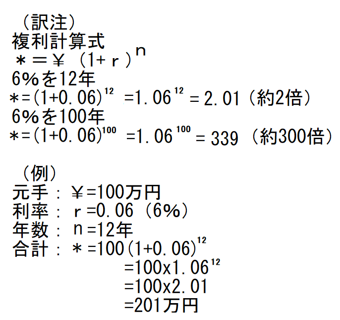

登場人物
コナー 死刑囚
エバニイ 女魔術師
エバン 父
ルース 不倫女
森の妖精 黒髪緑眼
ホランド 学会設立者
テラン 施設修理者
マーティン 不死発見者
ワキン 帝王
マーガレット 怒髪
ジャン 工場技師
モンメルチ 祖父
メリア 母
エナ 金髪少女
マリス 黒髪美人
マギー 王女
ソラ 女給
メリミー 冬眠者
ホメロ へぼ詩人
サヴァン 詩人
［＃改ページ］
第１章 代償と結果
コナーはまさに死ぬ寸前だった。刑務所
コナーは精力的に生き、活気があり、健康で、若干26歳の優秀な若き技術者、これから死出に旅立とうとしている。だが、そんなことなど気にも留めなかった。眼に写るのは、死刑囚独房の灰色石壁と、冷たい鉄格子。同様に明確な事実は、ズボンの脚部に切れ目が入れられ、頭頂部に
死刑囚のコナーが強く思い知ったのは、身辺が完璧に整備されている。これから去ろうとする世界は堅牢でびくともしない。近づく死刑執行人の足音が遠くで重く響いてきた。
独房の扉が開き、
依然として無関心状態のまま、電気椅子に座らせられ、体を固定され、電気端子を取り付けられた。聞こえたのは、立会人のかすかなざわめきと、新聞記者がせわしなく走らせる鉛筆の音。記事の形容詞が想像できよう。
『冷血殺人者』
『自らの運命に平然』
まるで第三者の出来事のようだった。
ただ、だらんと待った。あっという間に苦しまず死ねるのは、なによりありがたい。刑務所長が合図したのさえ分らなかった。一瞬青い光が音もなく走った。それからは……何もない。
これが死だ。ゆっくりと厳粛に漆黒の穴を通り、無限という永遠の流れに漂う。
平和だ、ついに、平和、静寂、休息。
だが、この感覚は何だ。遠くかすかに光りが見え、星のようにまたたく感覚は？ 果てしない時間が経ち、光の点滅が止み、安定し、気に
甲高い声がして、新鮮な空気が当たった。再び自分の身体を自覚した。静かに、動かず、疲れ果てて、横たわっている。だが死んじゃいない、どれくらい寝ていたのか。
再び甲高い声がしたので、閉じた
 しか離れておらず、粗さや未完成具合は、コンクリート歩道の側面のよう。
しか離れておらず、粗さや未完成具合は、コンクリート歩道の側面のよう。あの光は、かすかな日光だ。右肩近くの穴から差し込んでいる。
別な刺激が感覚を呼び起こした。恐ろしいほどひどく寒い。冬の寒さじゃなく、銀河系空間のすさまじい低温だ。だがどこか地上、いや地中にいる。あたかも氷水が静脈に流れており、血液じゃないかのよう。でもまったく水に濡れていない感じ。身体は脳から切り離されたかのように動かず、残酷にも地中に閉じ込められている。この事実に、怒りがだんだんこみ上げてきた。
すると、鋭く甲高い声と、パタパタという小さな足音が、右側のどこか外から聞こえてきて、これに励まされ、必死に動こうとした。パリパリという乾いて、枯れて、はじけるような音、ちょうど古い羊皮紙をくしゃくしゃにするような音がして、確かに右腕が上がった。
この動作で力を使い果たし、吐き気を催した。しばらく意識を失って横たわっていた。それからもう一度やってみると、少し楽になった。長い間隔を置きながら、もがいてみれば、両足がなんとか動くようになった。またしても疲れて静かに横になったが、力を溜めて、穴蔵を破るべく、
いま、どこにいるかを知ったからだ。棺桶に生き埋めされている。どうしてか、なぜかは分らない。あとで分る。
弱った力を結集し、奇妙な棺桶の左側を押し、右側隙間に体を移動した。棺桶の蓋は小石や
目もくらむような日光がコナーを襲い、痛かった。例の甲高い声が上がった。
「おかあさん、おかあさん」
子供が震えて泣く声だった。
コナーは息も絶え絶えに、なんとか穴から這い出たが、動く
いま見れば、墓地が浸食作用であちこち削られており、墓の側面から転げ落ちたことが分った。視界が妙にぼやけているけど、小さな子供が６人ばかり、こわごわ半円に取り囲んでいる。
子供だ。妙に現代風で、明るい色の服を着ているものの、明らかに人間の子供であり、口をぽかんと開け、眼をひんむいて、じっと見ている。奇怪なことに、ふくよかで愛らしい顔が、恐ろしいほどの恐怖に引きつっている。
そのときコナーは自分の子供時代に遭遇した恐ろしい事柄を思い出して、子供達が逃げないことに驚いた。哀願するように片手を差し伸べて、必死に話そうとした。これが初めて声を出そうとしたときだが、どうしても出ない。
子供らを凍りつかせていた恐怖の呪文が瞬時に口から出た。一人が肝をつぶして叫んだ。
「あーっ、おばけだ」
全員、気が動転し、泣き叫び、一目散に逃げた。浸食丘の縁に消えると、コナーは一人取り残された。絶望にうちひしがれ、うめくと、ひび割れてカサカサになった唇から、かすかにゼイゼイ音がした。
ふと気づけば、丸裸だ。
皮膚となった羊皮紙が骸骨をぴったり覆っているので、骨格が透けて見える。関節すら見える……手首、膝、
気の遠くなる
めまいが消えた。少し気分が良くなり、ゼイゼイ呼吸もやや楽になったのは、喉が湿ったせいか。視力がだんだん良くなり、水たまりにかがんで、ちらと見えたのが水面に映った化け物。どくろのように歯が浮き出て、肉がついてないので、もしかしたら、しゃれこうべだったかもしれない。
「ああ、神様。私は何者？ どこにいる？」
と大声で叫んだ声は、癇に障るカラスのようにガラガラだ。
こんな異常な体験中、ずっと心の奥底にあったのは、何か奇妙な感覚であり、そのうえ墓から出てきた我身を見れば、生ける
空は青く、ふかふかした真っ白い雲もあった。二度と拝めないと思っていた太陽が輝いている。草は青々。地面はいたって普通。なにもかもあるべき姿だが、何となく奇妙なふしがあり、怖い。本能的に、何か不吉なことがある。
周りが理解できないからじゃない。原因を探る気力がないし、どこに埋葬されたかも知らない。
生き物すべて、程度の差こそあれ、名状しがたい
「迷子だ」
と子供のようにべそをかいた。
長いこと何も感じない状態が続いたあと、足音が聞こえた。ぼんやり見上げた。男達が子供に先導され、ゆっくりやってきた。着ているのは華やかな赤、青、紫のシャツ、それに妙なだぶだぶズボン、足首の所で異国風にひだを寄せてある。
ありったけの力を出すと、膝が立った。哀願するように骸骨状の爪を差し出し、ささやくようなしゃがれ声で言った。
「助けてくれ」
あごひげがなく、妙に女性のように見える男らが立ち止まり、こわごわ覗き込んでいる。子供が甲高く叫んだ。
「おんなじだ、おばけだ、死んでいる」
一人の男が前に進み出て、コナーを見てから、丘の中腹に開いた大きな穴を見て、訊いた。
「どうした？」
コナーは助けてくれと、しゃがれ声で繰り返すばかり。
「病気か？ 冬眠者か？」
と別な男が深刻に訊いた。
ざわざわ相談している男達は、華やかな衣服をまとい、妙に女性のようなやさ声だ。
一同が決した。
「エバニイの所へ。魔術師の所へ」
半寝状態のコナーを、皆ですばやく取り囲み、そっと持ち上げた。運ばれる道中、切り通しを曲り、田舎の土道へ出ると、再び
次に意識を取り戻したとき、壁に囲まれ、何かの柔らかい寝台に横たわっていた。何だか夢みたいな印象だったのは、赤茶の髪の毛、ラファエル天使のような顔の少女が、見おろしていたような……。何か暖かくて甘いグリセリンのようなものが喉をしたたり落ちて……
それから、奇妙で不明瞭な英語をささやくのを聞きながら、至福の休息という深い眠りに落ちた。
第２章 女魔術師エバニイ
次々に間を置いて、夢を見たり、忘れたり、激しく痛んだり、恐ろしい脱力感に襲われたりした。妙に分りにくい単語をささやく声も、なんとなく慣れてきた。
それからある日、意識が戻り、起きてみれば、夏の朝だ。鳥がさえずり、遠くで子供達がキャッキャッ言っている。やっと気分が晴れて、ふかふかの長椅子に身を横たえながら、自分の居場所、いや素姓さえも疑心暗鬼になったのは、見える範囲内に、自分がどこにいるのか、自分が誰なのか、分るものが何もなかったからだ。
最初に注意を引いたのが自分の右手。薄紙みたいに、信じられないほど骨っぽく、死人の手のようで、派手な掛け布団に乗せると、とても透明なので、布団の色が透けて見える。その手が挙がらない。おぞましい指でつねって、やっと自分の体だと分る始末。
部屋自体も全く異質で、驚くほど簡単な調度だ。絵画や装飾品もない。アルミのような金属椅子が数脚、光沢テーブルが１台、その上にぼろぼろの書物が数冊、向こう壁に大きな棚が１
人を呼ぼう。しゃがれ声がかすかに出た。
応答は驚くほど早かった。柔らかい声で、
「いかが？」
やっとの事で顔を向けると、赤茶髪の少女が傍らに座っていた。やさしく微笑んでいる。
服装は、妙な緑色だぶだぶズボン、
「だれなの？」
と少女がやさしく訊いた。
意味がわかった。
「コナーだ、もちろん」
「どこから？」
「セントルイスからだ」
「セルイ？ とおいね」
遠いだって。なら僕はどこにいるんだ。にわかに記憶の断片が蘇った。あの裁判だ、ルースだ、あの電気椅子処刑だ。ルースは金髪女で、かつて愛したことがあり、妻になるはずだったが、ルースが不倫して、その相手の男を殺したため、命を冷酷に取られてしまった。
おぼろげに戻って来た記憶によれば、まさに結婚式前夜、不倫男に抱かれていたルースを見つけ、苦々しいことに友人と呼んでいた男がルースを盗んだ男だった。激しい怒りに逆上し、
それが理由で電気処刑と決まり、電気椅子に送られた。
それから、丘の狭い棺桶だ。でもどうやって？ 何かの奇跡で、処刑電流に耐えたのか。まだ支払うべき代償が残っており、払わなければならないのか。
必死に起き上がろうとした。
「ここから出なくちゃ。逃げなくちゃ。いや、法的には死んだ。当局は手が出せない。この国では二重処刑はない。安全だ」
とつぶやいて、新たに考えた。
隣の部屋で、自分のことを話している声がする。
男の声で、
「セルイから来たと言っていた。遠いな」
別な男が、
「ああ、生きて幸運だ。金持ちになれる」
意味が全く分らない。片腕を全力で持ち上げた。明りで、何か油光りする。もうひび割れがなくなり、目に見えない組織層で骨が動くようになった。肉体が元通りになっている。
喉が乾燥しているようだ。息をすると、ぜいぜい咳が出る。
「水をいただけませんか」
と少女に尋ねた。
「いいえ、水じゃない。液体なら」
と少女が首を左右に振った。
「液体？ 当然そうだ」
とコナーが繰り返した。うなずいて、飲み干した濃い液体入りのカップを、少女が支えてくれた。
にこやかにお礼を言うと、少女が横に座った。紛れ込んだここはどんな種類の植民地なのか、異国風な衣装といい、早口英語といい。
品定めするように少女を見た。たとえ外国人だろうが、とびきりの美人であり、赤茶色の髪が緑色の衣装に輝いている。
少女が、あたかも許可を与えるかのように、やっと言った。
「話せますよ」
コナーが了解して、
「きみの名前は？」
「エバニイ。魔術師エバニイです」
「女魔術師エバニイだって。エバニイってかわいい名前だ。でもなぜ魔術師なの？ 占いをするの？」
この質問に少女は面食らった。
「わからない」
「何をするかってことだよ」
「魔法です。活力を与え、裕福にします」
と言って、骨皮の腕に触った。
「でもそれは医学とか科学だ。魔術じゃない」
「ふふふ、科学は魔術です。同じものです。父のエバンが私に教えてくれた。父は死んだ。ところで、あなたのお金はどこにあるの？」
「もちろん、セントルイスの銀行だ」
「まあ、セルイはよくない。安全じゃない」
「なぜだ？ 銀行破産がたくさんあったからか」
「安全じゃないです。アーブス都市の方がいい。長期はアーブス都市がずっと良い。ところで、いつ寝たの？」
「もちろん昨夜だ」
「ちがう。あの長い冬眠です」
長い冬眠だって？ その言葉でぎょっとなったのは、墓で目覚める前、最後の記憶が９月だったけど、今は盛夏だ。空恐ろしくなった。あの墓にどれくらい長い間、横たわっていたのか。少なくとも数週間か、いや数ヶ月か」
「いつなの？」
とエバニイがやさしく聞き返したとき、コナーは震えた。
「９月だ」
「何年の？」
「年か？ もちろん１９３８年だ」
エバニイが不意に立ち上がり、
「１９３８年じゃない。いまはただの８４６年です」
それから行ってしまったが、たとえ呼び戻しても質問は許さなかっただろう。
その日は過ぎて、眠り、翌日が来て、また過ぎた。依然としてエバニイは話を拒否し続けたので、日が経つにつれ、いらだち、困惑してきた。だが、少しずつ、妙な早口英語には慣れてきた。
そんなわけで横になって考えたのが、自分の立場や、墓場から
エバニイがやさしく尋ねた。こう言っている。
「おなか空いていますか、コナー？ すぐ持っていきます」
「ああ」
と肯定して、台所を見れば、奇妙なコンロは炎がないのに、ちゃんと調理できるようだ。
「エバニイ、僕はどれくらいここに居る？」
「３ヶ月です。重病でした」
「じゃあ、どれくらい寝ていた？」
「知るべきです。今年は８４６年と言ったでしょう」
コナーが眉をしかめた。
「８４６年だって、何のだ？」
「ただの８４６年です。もちろん啓蒙時代です。何年に眠ったの？」
コナーが戸惑って、言い張った。
「１９３８年と言ったろ。ＡＤ１９３８年だ」
「まあ」
とエバニイが子供をおちょくるかのように言った。それから、また蒸し返した。
「ＡＤって、西暦のことですね。主の年です。でも１９００歳近い主は、どこにもいません」
参った。二人はとんちんかんな話をしているようだ。コナーが冷静に再開した。
「いいか、きみが正しいとすれば、僕はまるで火星人だよ、簡単に言えば」
「正体は分ります。冬眠者ですね。目覚めると、よく混乱します」
コナーがしつこく追求して、
「冬眠者ってなに？」
エバニイは驚くほどはっきり、分るように、でもびっくりして、答えを教えた。エバニイ自身たまげたのは、コナーが答えを知らないなんて……
いまやコナーは独特の早口英語、ここの人はみんな早口、を比較的容易に理解できるようになっていた。エバニイが言った。
「冬眠者は電気処理を受けます。つまり、みずから長期間の眠りに入り、お金を稼ぐのです」
「どうやって？ さらし者になってか」
「ちがいます。お金がたっぷり欲しい人で、汗水垂らして働きたくない人は、冬眠します。すっかり忘れているなら、思い出すべきです。そんな人々が冬眠者用の銀行にお金を預けます。覚えているでしょう。６
 を保証します。わかるでしょう。この利率だと、冬眠者のお金は１世紀で３００倍になります。つまりだと、お金は12年で２倍になります。もし冬眠者が１世紀を長らえて、生きていれば、千ドルが30万ドルの財産になります」（訳注）
を保証します。わかるでしょう。この利率だと、冬眠者のお金は１世紀で３００倍になります。つまりだと、お金は12年で２倍になります。もし冬眠者が１世紀を長らえて、生きていれば、千ドルが30万ドルの財産になります」（訳注）
おとぎ話だ、とコナーは軽蔑して言ったが、目覚めたとき、最初にお金の預け場所を聞かれた理由が分った。
「どんな機関が６
を安全に保証できるか。何に投資できるんだ？」「１
都民公債へ投資します」「おそらく赤字だろうよ」
「いいえ。利益は膨大です。冬眠者は10人中９人が生き返りませんから、残った基金から出ます」
「じゃあ僕は冬眠者だったんだ。真実を教えてくれ」
エバニイがコナーを不安そうにじっと見て、
「電気処理は人々をよく混乱させます」
「僕は混乱してない。真実を知りたい、それだけだ。今の日付を知りたい」
「今は８４６年７月中旬です」
「ちくしょう。それじゃ、僕は眠って過去へ戻ったんだ。何が起こったか知りたい」
「では、あなたから話してくれますか」
とエバニイがやさしく言った。
コナーが大声で叫んだ。
「いいとも。僕は新聞に載ったコナーだ。読んだことがないのか。殺人罪で裁判にかけられて、電気椅子に送られた。セントルイスのコナーだ。セントルイスだ。わかったか」
エバニイの優しい表情が突然青ざめた。
「セントルイスですって。セントルイスはセルイの古代名です。暗黒世紀の前だから、ありえない」
「あり得るし、本当だ。痛いほど本当だ」
エバニイが恐れ多い風にささやき、魅入られたかのように見つめ、興奮して、
「感電死です。古代の刑罰です。電気処理が偶然に起こり得ますか。可能ですか。いや、不可能です。ミリ・アンペアでも多すぎて脳が破壊されるし、ミリ・ボルトでは低すぎて無菌状態にできません。どっちの場合も死んでしまう。でもあなたの話が本当なら、冬眠しています。コナー、あなたは有り得ないことを経験しています」
コナーが開き直って冷静に尋ねた。
「電気処理って何？」
エバニイが緊張してささやいた。
「冬眠のことです。脳のローランド溝前にある部位を電気麻痺させます。ここを冬眠者は使いますが、期間はほんの１世紀か、もうちょっと長いかです。あなたはすばらしい。暗黒世紀以前から眠っている。すくなくとも１千年は」
第３章 森の出会い
コナーが目覚めて、正気に戻ってから３回目の週が過ぎた。エバニイの小屋の前で、彫刻ベンチ石に座り、星々や褐色月の輝く空に見とれていた。言われたことが本当ならば、自分は生きており、数十億人が
エバニイがきっと正しいに違いない。なるほどと思ったのは、やさしく説得され、妙な英語を聞き、身の回りが微妙に異なっているからだ。全く同じ世界じゃない。
満足して息を吐き、夜の冷気を吸った。エバニイから新時代のことをいっぱい学んだが、大部分はまだ妙に隠されていた。アーブス都市や帝王のことについては、ぼんやりとしか言わなかった。ある日、理由を聞いてみた。
エバニイが尻込みしながら、
「そうねえ、あなたの判断に任せた方が良いからです。私たち、つまりここの人々は、アーブス都市や不死身が嫌いですが、あなたに押しつけるつもりはありませんし、紛れもなく連中は帝王の同志であり、帝王の方が優れており、私たちは敵じゃないからです。アーブス都市が政権を握っており、おそらく私たちの死後も握り続けるでしょう、なにしろ７世紀もの間、支配してきましたから」
不意にポケットから何か取り出して、コナーに渡した。かがんで見れば、金貨だ。数値が分かり、10単位、図柄は蛇が地球儀に巻き付き、尾を噛んでいる。
エバニイが、
「ミッドガルドの大蛇です。理由は分りませんが、言われているとおりです」
コナーが金貨をひっくり返した。現われたのは刻まれた男の小さな横顔、その容貌は冷酷、厳粛、強靱。刻印を読んだ。
「オービス・テラナム・インペラータ・ドミナスク・アービス」
コナーが翻訳した。
「世界皇帝・都市帝王」
エバニイが金貨を取り上げ、声を正し、
「ええ、これが帝王です。アーブス都市のお金です。アーブス都市と帝王のことを理解するには、当然のことながら冬眠以来の歴史をいくらか知らねばなりません」
「歴史だって」
とコナーがオウム返し。
エバニイがうなずいて、
「暗黒世紀以来のです。いつか長老が私以上のことを教えるでしょう。だって、あなた方の強大な古代世界はほとんど知りませんから。私たちには信じられないような時代のようね、巨大都市、苛烈国家、超絶人口、膨大エネルギ、大天才……。大戦争、巨大産業、偉大芸術、それからまた大戦……」
「さあ、教えてくれ」
とコナーが少しいらつき始めた。エバニイが首を横に振って、素早く言い返した。
「今はだめです。私はすぐ友人の所へ行って、重大なことを話し合わなくちゃなりません。おそらくいつの日か、また学びます」
引き留める間もなく、行ってしまった。一人残されて、時々
多くの点で、奇妙な新世界だと思いながら見ていると、エバニイが道を下って消えていき、その道は丘上のエバニイ宅から村へ傾斜している。
座った荒削り石ベンチから、麓の村を望めば、建物は低くて、何かの白い石から出来ている。全ての構造建築が古典的で、純粋なドーリア様式柱で出来ている。オーモンが村の名前だと、エバニイが言ったっけ。
全てが奇妙だった。人々が、かつての知人に比べ、ものすごく違っているのみならず、物理世界も、うろたえるほど異なっていた。
はるか村の向こうを見ながら、視線を周りの丘や森に戻し、これらも違っているんじゃないかと考えた。
知らなきゃ。
春の景色が手招きしている。体力がある程度戻り、陽光の下でベンチから立ち上がり、向かった先には緑の森があり、エバニイ宅の背後に広がっていた。素敵な予感がする。木々は若葉が緑に耀き、鮮緑色の草がなびく草原は丘の中腹をくだり、平原を覆っている。
森に入ると、鳥たちが木々の間でさえずっており、いろいろな種類がたくさんいて、羽毛の色も華やかだ。もしエバニイの話を覚えていなかったら、数の多さや、人を怖がらないことに驚いただろう。
エバニイによれば、アーブス都市は何世紀も前に、嫌な毒虫とか、ハエとか、タバコガなどを一掃し、この作業を鳥が手助けしてくれたとか。特定の寄生生物がそうであるように、鳥はそのために飼育されている。
エバニイが言ったっけ、
「鳥を増やすためには、天敵のエジプト
嬉しくなって、緑の森を散策し、鳥たちがオーケストラを奏でる中へ入った。春風が顔を軽くなぜ、人生で始めて知ったこと、それは森を自由に歩き回れることがどんなものかということであり、蚊やブヨやユスリカ、毒虫などの厄介者がいないということであり、これらはかつて森を時々、苦行みたいにしたものだ。
人類にとって何たる恩恵か。ミツバチが
一体どのくらい深く、新緑の森に侵入したのか、分らなくなったとき、小川をたどっていることに気がついた。白銀の水が木漏れ日にきらきら光り、ゆるゆる流れ、眠気を誘う。
時々、苔むして、
小さな流れをぶらぶらたどりながら、ついに到着した大きな褶曲部には、小川が高所から小さな滝にこぼれ落ちていた。
回り道をして、向かい側の静かな透明池を見たとき、じっと立ち止まり、信じられないというように目を見開いた。
あたかも眼前に、素晴らしい光景、つまり昔見たことがあり、回春の絵画を鑑賞するかのような場所がある。この森では自分だけしかいないと思っていたが、そうじゃなかった。風景を分かち合い、コナーの立っている場所から近いところに、これまで見た中で最高に美しい女性がいた。
信じがたいことに、生きており、息をしており、気のせいじゃない。コナーの足音を警戒せず、他人が居ることも全く知らずに、ポーズを取った姿はコナーが初めて見たとき、まるで愛らしい森の妖精か、もしかしたら、そうだったかもしれない、こんなすごい驚くべき新世界では……
女はひざまずいて、弱く反射する池のそばで、細い腕と手で
驚かせるのではないかと気遣い、息をすることも、ましては話すことも怖かった。でも振り向いてコナーを見たとき、驚いた様子は見せなかった。
笑顔でゆっくりと立ち上がると、体を包むぴったりのギリシャ風の白衣装がそよ風にふわっと浮いて、余りにも完璧な容姿に、現実とは思えない。胸にたすき掛けした銀の帯が一層引き立ち、真っ黒な髪の毛と同じぐらい輝いている。
コナーを見て笑った瞬間、緑眼の奥は怖れておらず、あざ笑っていた。
銀のベルが響く様な声で、
「いままで“ザコ”が、森の奥深くに侵入して、自然の美を愛でるなんて、聞いたことがない」
コナーが無意識に１歩か２歩近づいて、直ちに抗議した。
「僕は“ザコ”じゃない。僕は……」
と言い、声をかけたことや、接近したことで、消えないでくれと願った。
女が一瞬じろっと見てから、笑った。またしてもあざ笑っている。
「ふふふ、言う必要はない。お前は冬眠者、最近生き返り、千年眠っていたという大ぼらを吹いた。まるで不老不死のようだ」
その笑い声には少なくともそんなことは信じていないという高慢ちきな暗示があった。コナーはそのとき、説得しようとしなかった。余りにも魅了されて、ただ見つめるばかり。
おそるおそる尋ねた。
「あなたも不老不死なのですか。たくさんいると聞きましたが……」
女が、あいまい半分、あざけり半分で、
「不死人間より、もっと不滅なものはたくさんある。不死人間は、遙か昔の時代、つまりギリシャ人の知見や知識を何も知らない」
またもコナーは女を見つめた。とても自信げに話し、見返している。果たして、はるか昔ギリシャ時代の神々や妖精は結局、伝説じゃなく、実在するものなのか。いま見つめているものは、ひと触りすれば、あるいは
それでも十分本物のように見えるし、あの態度にはある種の高慢さがあり、僕の考えじゃないけど、神話のページをめくれば、愛らしい妖精すべてが示す反応だろう。どれ一つとして本物のようには見えないけれども、鼓動を早める法外な美貌は別格だ。
第４章 古代歴史断片
女の言葉で白日夢から覚めて、混乱した頭でむなしく眺めれば、かげろう細いアシのような姿に、透き通る白い衣装が、そよ風にひらひら揺れている。女が有無を言わせず、
「さあ、私の横に座って。私がこの森へ来たのは冒険を見つけるため。退屈な世界では見つけられない。いままで冒険はなかった。お前なら楽しませてくれよう。ここに座って、お前の冬眠とやらを話してくれ」
半ば催眠にかかって、コナーは従った。理由すら訊けなかった。万事が周到に用意され、このきらめく
しばらくこの森の妖精の美貌に不意打ちを食らい、心から全てが消え、あのエバニイの記憶すらなくなった。だが次の瞬間エバニイを思い出して胸一杯になったのは最初に見たエバニイの姿だ。つまり冷静で理解力があり、赤褐色髪の愛らしい姿だ。でもその瞬間ですら、傍らにいるまぶしい生物が、今まで会った小娘や、エバニイと非常に違っており、永遠に悩まされそう。女が誰だろうが、何だろうが、人間、いや森の女神に違いない。
コナーが黙っているので、女がいらついてきた。
女が高飛車に、
「教えろ。言っただろ、楽しませてくれと。教えろ、冬眠者」
命令に従って、コナーが言った。
「僕はきみたちに馴染みの冬眠者じゃない。僕に何が起こったにしろ、僕はやってないし、僕の意志でもない。こういうことだ」
かいつまんで経験を話し、全て知っていることを、すらすら述べた。感動を与えたに違いない、というのも話すにつれ、猜疑心とあざけりが緑眼から消え、しぶしぶ信用して、それから驚きに変わったからだ。
話し終えると、女がそっと言った。大きな眼が泳いでいる。
「信じられない。でも信用する。もしお前の記憶に、昔の知識が残っていたら、お前が迷い込んだこの時代では、大事件になる」
コナーがすぐ反論して、
「だが僕はこの時代のことを何も知らない。あれこれ断片を見たが、不思議な不老不死の人達がうまく統治しているようだし、僕の知識では多くのことが異星人のように見える。でも今までの所、この年代については多くを知らない。いや、そればかりか、僕が寝ていた間に、過ぎ去った時代の歴史についても、何も知らない」
森の妖精が一瞬、きつい眼をしたが、明らかに驚いた様子で、視線を落とした。ふと冷笑がちらついたが、すぐに消えた。
女が言った。
「教えてあげようか。森と谷のことなら多くのことを知っている。年月が繰り返すことも学んだ。だが常に知識を伝えるとは限らない」
コナーが哀願した。
「どうか、どうか全部教えてくれ。僕は見捨てられた」
どこから始めようか、女はちょっと迷っているようだったが、にわかに話し始めた様子は、あたかも創世記以来の全歴史を教えるかのよう。
「お前達の古代世界には大都市が幾つかあった。今の時代にも強大な都市がある。ニ・ヨークは人口８百万、今の首都アーブスは３千万人だ。いま首都は一つしかないが、お前達の時代は百もあった。素晴らしい時代だったが、終わってしまった。20世紀のある時、すさまじい戦争で消滅した」
「20世紀か。僕の世紀あたりだ」
「そうだ。お前達の超好戦国家は戦闘欲を追求し、遂に世界大戦が雲のように広がった。戦いは、陸、海、空、海中、地中で行われた。使用された武器の秘密は失われたが、奇妙な化学物質で病気になった。どの国家も争いに加わった。膨大な知識がつぎ込まれ、大都市が次々、原子爆弾で破壊され、汚染水道で全滅した。飢餓が世界に広がったあと、疫病は無くなった。
戦後50年頃には、世界はある種の安定に達した。そのころ蛮族主義になった。古い国家は崩壊し、その場所に小都市国家が乱立し、独立小作農共同体ができ、布を織り、自活した。その時から言葉が変化し始めた」
「なぜだ。子供は親の真似をするのに」
「正確じゃない。言葉は原則に従い進化する。一例だが、子音は言語が使い古されるにつれ、舌が前進する傾向にある。例えば母という単語だ。古代トカール語ではマカールだった。次のラテン語ではマター。それからマドレとなり、そのあとマザーになり、いまの時代ではムバーだ。わかるか。Ｋ、Ｔ、Ｄ、Th、Ｖという子音は口のなかで舌が少しずつ前進する。この究極がママだ。純粋な唇音で、世界最古の単語だとわかる」
「なるほど」
「さて、言語は一旦印刷物のくびきから解放されると、変化する。古本を読むのが難しくなり、だんだん消え始める。火事で放棄都市は破壊され、そこに巣くう盗賊団が冬暖房用に本を燃やす。ムシに食われたり、腐ったりして、駄目になる。貴重な知識が消え、幾つかは永久になくなった」
ここで止めて、コナーをじっと見てから、
「わかるか。お前が古代知識を何か持っていれば、大事件になると言ったのが分るか」
「たぶん。どうぞ続けて」
「ほかの要因も働いた。そもそも、天才には小都市国家群が最適な環境なようだ。たとえば黄金時代のギリシャ、ルネサンス期のイタリア、それから第２啓蒙時代以前の全世界とか。
それからまた、野蛮時代は人類の休息期間となるようで、そのあと新たな高みへ向かうようだ。石器時代が突然エジプトで脚光を浴び、ペルシャが衰退し、ギリシャが花開き、中世がルネサンスの勃興につながった。だからこの暗黒世紀は第２啓蒙時代という輝かしい時代、つまり人類の第４夜明けへと耀き始めている。
戦後２世紀が過ぎた頃、ゆっくり始まった。ホランドという若い男が村にやってきて、この村はノーリンズ地区にあり、古代廃墟都市のそばにあった。図書館の残骸を見つけ、当時珍しいことに、読むことが出来た。当初一人で学んでいたが、やがてほかの人々が加わり、学会が誕生した。
町の人々は学生らを魔法使いとか、魔術師と思っており、その話が広まるにつれ、魔法使いとか、魔術師という言葉はお前らの時代で科学者と呼ばれるものと同義語となった」
「なるほど」
とつぶやいたコナーは、魔術師エバニイのことを考えていた。
魅惑的な女が続けた。
「ノーリンズ地区が啓蒙時代の中心になった。ホランドは死んだが、学会は存続し、ある日テランという若い学生が幻想を抱いた。そのころ古代知識の幾つかは解明されており、テランの想いは古代ノーリンズ地区の発電所と水道系を修理して、町に利便をもたらすことだった。
燃料は見当たらなかったが、テランの仲間は数世紀前の装置を苦心して研究し、燃料が必要なら手元にあるのではと確信した。
そうだった。オーリンという男が、大陸中をほっつき、探して見つけたのが、古代最後にして最高の成果だ。原子エネルギを再発見した。ノーリンズ地区に古代生活が再生した。平原や山々を越え、何百人もの人々がこの大都市を見学する為だけに訪れ、その中の３人が歴史を変えた。
薄茶髪のマーティンと、黒髪のワキンと、その妹の３人だ。妹は悪魔のように美しいと言う人もいる。今では怒髪と呼ばれているが、聞いたことは？」
コナーは首を左右に振ったが、両眼は森の妖精の美しさに見とれるばかり、一方の森の妖精は信じられない方法で、コナーを魅了した。
一瞬あざけるような視線が女の目に戻ったが、白い肩をすぼめた途端に消えて、話を続けた。
「これらの３人が歴史をすっかり変えた。マーティンは生物学と医学に転向し、修道院学会に入会し、天分の才能により、新発見を古代の知識に加えた。進化を研究し、硬
ワキンが力を入れたのは今まで無視されていた社会科学、政治、経済、心理学の分野だ。同じく古代世界を再建する夢を持っていた。ワキンこそが恐ろしい天才だった、いや今もだ。マーティンの不死を横取りして、この不死を権力と交換した。
同様に不死をジョーガンスンに与え、原子力推進ロケットを得て、次にコーマーに不死を与え、武器を得て、アーデンに不死を与え、アーデン共鳴器（訳注）を得ており、この武器は数

 離れていても火薬を爆発させる。そして、軍隊を集め、前進した」
離れていても火薬を爆発させる。そして、軍隊を集め、前進した」
（訳注）アーデン共鳴器は『炎の黎明』参照
「また戦争か。嫌になるほど戦ったというのに」
だが女は気にも留めなかった。緑眼に燃える光りは、さながら幻想、つまり栄光の征服を見ているかのよう。
女が言った。
「ノーリンズ地区はワキンの人たらしに当てられ、喜んで降伏した。他の町は、ほとんど魅了されたかのように降参する一方、戦った人々は負けた。ジョーガンスン三角飛翔体（訳注）や、コーマーイオンビーム（訳注）に対して、ライフルとか弓矢で何の勝機があるか。それにワキン自身はまあ素晴らしい人物だ。高尚な態度で、殺された敵側の妻達を慰めれば、
（訳注）三角飛翔体は『赤ペリ』、イオンビームは『炎の黎明』参照
そして、ワキンはアメリカだけじゃなく、独自の世界帝国を造った。犯罪者や精神薄弱者を取り除き、自分の英語発音を全てに強要し、アーブスという巨大で、豪華で、邪悪な世界都市をおっ立てて、そこを共同支配するのが、傍らにいる妹のマーガレット王女だ。しかし……」
「きっと征服された世界はワキンを
「あがめるか。業績はあるけど、多くの人々が憎んでいる。この時代ばかりでなく、啓蒙時代以来過ぎ去った年月もだ。ワキンは……」
だがコナーはもう聞いていなかった。全ての考えや注意や両眼が、美貌に呑まれ、女に向けられていた。とても愛らしくて、膨大な知識を持ち、脳に貯え、頭上に輝く光沢黒帽子は髪の毛だ。これには一つの答えしかあり得ない。つまり女神が生き返ったに違いない。
気持ちは女に触れたくて、いやせめて薄衣の縁に触れたくて、うずいたが、それは出来まい。女に近づくと、心臓がどきどきして、崇高のあまり足元にひれ伏しかねない。
「きみの言ったことは全て夢のようだ。きみはすばらしい」
と言った声は心ここにあらず。
女の緑眼に、あざけりの光りが、めらめら戻って来た。
女の白い手がコナーの腕にそっと触れると、びびっとなり、あたかも電流が体を貫いたかのようだったが、今回はあの痛ましい処刑電流じゃなかった。女が優しく言った。
「二人の出会いは夢のままにしておこうか。古代の男よ、約束してくれ」
コナーが熱くなって、
「何でも、いかようにも」
「じゃあ、約束してくれ、けさ私に会ったことは何も言わないこと。女魔術師エバニイという小娘にさえも。わずかな手がかりも」
一瞬コナーの腰が引けた。そんな約束はどうにもエバニイに対して不実じゃないか。分らなくなった。分っているのは、己の考えに従い、この出会いを秘密にして、何か神聖なものとして心の奥底深くしまうことだ。
「約束するか」
と例の
コナーがうなずき、真剣に言った。
「約束する。ところで、教えてくれ。また会えるか。きみは……」
不意に、女が聞きながら、ぴくっと跳ね上がった姿は、さながら牧神のよう。緑眼を大きく見開き、飛行準備をしている。うっとり酔ったコナーの耳に、森に響く声がかすかに聞こえた。おそらくコナーの病状を知って、男達が探しに来たのだろう。
女が早口でささやいた。
「行かなくちゃ。古代人よ、また会おう。約束する。お前もな」
そして、コナーが話す間もなく、女は蝶のように舞い上がり、音も無く森の中を疾走した。コナーが最後に見たのは、白い衣装をひるがえし、緑茶色の木々をあとにして、消え去る姿だった。
戸惑いながらゆっくりと眼をぬぐった。夢か。でも、また会うと約束した。いつだ？
第５章 村
日々がゆったり過ぎた。コナーはほぼ全快した。
エバニイは別だが、たった一人、親友ができた。たちまち意気投合したのがジャンというオーモン村の工場に勤める操作技師だ。
この工場は驚きの連続だった。信じられないような万能機械で、ほとんど何でも造り、戦争重機は造っていないけど、造ろうと思えば造れただろう。造らなかった理由は、完成品を簡単に持ってこれたからであり、鉄素材を運ぶのと同じくらい簡単だったからだ。
原子力には驚いた。動力炉は水を燃やすというか、炉中の水素を燃やすだけで、分裂じゃなく融合して、エネルギを生み出す。質量１・００８の水素原子が４個結びついて、質量４・０００のヘリウム原子１個となる。どこかで質量０・０３２が失われ、これが膨大なエネルギの元になる。物質が融合し、消えた質量はエネルギに変わる。
原子炉がずらり並んでいた。エネルギ放出はラジウムのように一段階で進む。一旦始まると、温度や圧力では、少なくとも反応速度を制御できない。水素が定常的にヘリウムに燃え、質量が半減する半減期は300日だ。
ジャンはこの工場が自慢だった。
コナーに言った。
「いかすだろ。このオーメン式工場は何でも造れる。国中に何千とあり、これにより事実上各都市は独立、自活できる。石炭や鉱石を運ぶために、君らの厄介な古代鉄道は必要ない」
「どんな金属を使うんだ？」
「いずれにしろ金属じゃない。石器時代、青銅器時代、鉄器時代、つまり歴史が君らの時代を鉄器時代と呼ぶように、我々はアルミニウム時代にいる。アルミは至る所にある。泥の基本成分であり、地殻にほぼ８
含まれている」「知っている。以前は泥から取り出すのに金がかかりすぎていた」
ジャンの顔が不機嫌になった。
「まあ、今じゃ電力はタダ、水は使い放題だ。仮に反応を制御できたとしても、電力は常に同じ割合で発生し、半減期は300日だ。アーブス三角飛翔体のようなロケットを造れたら、いいのだが……。自然反応では遅すぎて自重を持ち上げられない。つまり１
の水から出る推力は少な過ぎて１の質量を持ち上げられない。都民は反応速度を増やす方法を知っている、つまり水を使い、エネルギの半分を100日から10日で発生できる」「もしもそんなロケットが造れたら？」
ジャンが更に不機嫌になって、
「そしたら、我々は……爆発させることが出来る。１回の爆発で、全エネルギが得られるが、ロケットには使えない」
「なぜ燃焼室を使って、例えば１回に１
 の水を爆発させないのか。小刻みに小爆発させれば、連続爆発と同じくらい効率的になるはずだ」
の水を爆発させないのか。小刻みに小爆発させれば、連続爆発と同じくらい効率的になるはずだ」「僕の父が試みた。今は川の褶曲部に葬られている」
あとでエバニイに、なぜジャンは原子力ロケット開発を切望しているのか、訊いてみた。エバニイが急に厳しい目を向けたが、まともに答えなかった。こう言っただけだ。
「不死の人達は三角飛翔体の秘密を隠しています。軍事機密です」
「でも、ロケットで何が出来るんだ？」
エバニイが見事な毛髪を左右に振って、
「おそらく、なにも」
「エバニイ、きみは僕を疑っているんじゃないか。きみの言葉からは何か政府に反対しているようだけど……。まあ出来れば助けてやるけど、僕を無視し続けたら、できないよ」
エバニイが黙った。
コナーがたたみかけた。
「それにもう一つ。あの不死の作り方だ。誰かの話を聞いたのだが、ある人が試みて失敗したことがあり、それが未だに世界を悩ませているとか。なぜだ、エバニイ」
エバニイの頬と喉に、さっと朱が広がった。
コナーが、しまったと叫んで、
「一体全体なんてことを僕は言ったんだ。エバニイ、絶対にきみを傷つけるつもりはなかった」
「気にしないで」
とだけエバニイがつぶやいて、背を向けて静かに去って行った。
エバニイが傷ついたので、コナーも傷ついた。エバニイの手当と看護のおかげで、今の命がある。考えるほどに悩ましいのは、お返しの方法が分らないことだ。あんな変な装置を持つこの世界で、技術者として稼ぐ能力があるのか、心もとない。
あとでそのことをエバニイに、自虐気味に言った。
「僕は下積みから出直しだよ」
エバニイが言った。
「アーブス都市なら、ラジウム関連で、古代知識者として重用されます。多くが失われました。おそらく永久に失われたでしょう。偉大な名前は記録でよく見ますが、業績は分りません。その中でアインシュタインとド・ジッターという人物が、同時代の優秀科学者にすら、究極天才だとされています。でも今はその二人の業績も失われています」
「失われたままは惜しいな。アインシュタインとド・ジッターは僕と同年輩だが、僕は二人の理論が理解できなかった。僕の知る限り、二人が扱ったのは時空と、仮想空間の曲り、いわゆる相対性原理だ」
エバニイの目が輝いて、叫んだ。
「まさにそれをアーブス都民が欲しがっています。それこそが欲しいものです。さらに、古代文学作品のことも考えてごらん。あなたの時代に匹敵する芸術家や作家はまだいません。シェイクスピアと呼ばれる男の演劇が依然として、テレビの最高人気です。私もいつも見ています。あなたの時代もそうでしたか。アリストテレスという哲学者を知っていますか」
「ハハハ、前者は３世紀ほど、後者は25世紀ほど、会い損ねたよ」
「ごめんなさい、歴史をよく知らなくて」
「僕が実際にいくらか稼げればだが、もし受けた情けにお支払いができるとすれば、しばらくアーブス都市に行って、またここへ戻ってくるよ。支払いたい」
「支払うですって。ここでは税金以外、お金は使いません」
「税金か」
「ええ、都民税です。毎年、集めに来て、お金を払わなければなりません。アーブス都市や代表がきらいです。にくい」
「べらぼうに高いのかい？」
「べらぼうって？ どんな税金も法外です。程度が違います。それが全てです。政府に課税権利がある限り、潜在的な不公正があります。帝王は何の権利があって、搾取するのですか」
あたかも全悪行が責めてきたかのように、ここで
「そうか？ それは
エバニイの両眼がメラメラ。
「天与の権利を捨てようとするあなたが理解できない。おとこなら、目的のために死ぬものです」
「でも、誰もやっていないよ」
「何もしないで過ごしているからです。こんな理由、つまり、いま帝王と戦っても、勝てるチャンスがないからです。時機が来るまでじっと待っているのです」
「じゃあ、これからの世界は、ものすごい大混乱状態になるだろうなあ」
「それこそ戦う理想的な条件じゃないですか。個人が自由な権利を得るために。不公平をぶちこわすために」
「しかし……」
とコナーが止めて、考えた。何でこんなことをエバニイと議論しなきゃならない。アーブス政府には何の忠義もない。帝王も何ら関係ない。命をかけて守り抜くべき唯一の政府は１千年前に失われてしまった。こんなへんてこ時代に、忠誠があるとすれば、それはエバニイだ。にやり笑って、約束した。
「正気だろうがなかろうが、エバニイ、きみの悩みは僕の悩みだ」
エバニイが急に優しくなった。声を低くして、
「ありがとう、コナー。なぜジャンがロケット噴射の秘密を知りたがったか教えます。わかりますか。革命の為です」
「だろうと思った。一つの質問に答えてくれたから、もう一つの質問にも答えられるだろう。いまだに世界を悩ませている失敗とは何？ 不死の処理をするときの副産物は？」
またしても、エバニイは不徳の赤面だ。
「変異体です」
とつぶやき、サッと立ち上がり、小屋へはいっていった。
第６章 変異体
コナーの体力が急速に元通りになり、あの恐ろしい墓にいたことも、ほとんど忘れた。灰色のあごひげが月ごとに伸びて、邪魔になり始めたので、ある日ジャンに
ジャンが困ったように見えた。コナーが説明すると、笑って、軟膏を１
塗ったあと、エバニイの反応に驚いた。しばらくじっと見て、誰だか気づかない。
エバニイが叫んだ。
「コナー、あなたは古代銅像のようです」
コナーはおだやかな村人と明らかに違って見えた。
時が楽しく過ぎ去った。夜ごと、新しく出来た友達にコナーが語ったのは、失われた時代の話であり、当時の政治、社会、科学のことだった。しばしばエバニイも会話に加わったが、参加しないときには、テレビを一人で楽しみ、この完璧な装置には60
の画面が付いており、その画面には遠方都市の俳優達が話したり動いたりして、生活の小型版をそっくり映し出していた。コナーが見た“冬物語”や“ヘンリー八世”は演技が正確だったうえ、お馴染みの歌謡劇があることにもおどろき、ピチピチの服を着た合唱団の完璧さにもびっくりした。
多くの点でエバニイには困惑させられた。エバニイの周りには何か謎があり、コナーには解けなかった。
オーモン村の生活は、基本的にかつてのセントルイスと同じように見えた。若い男性は今も昔ながらのことをやっている。毎晩、女性をつれ歩いて、座ったり、語らったり、公園の街路をぶらついたり、穏やかな川辺を散策したり……
だがエバニイは違った。若い男性が丘を登って自宅へ来たり、夜一緒に座ったりすることもなく、例外はジャンが時々訪れるぐらいだった。エバニイの美貌を考えれば、これは妙だ。活発で、優しくて、上品なエバニイ以上に魅力的な女性は思い出せない、ただしあの森の妖精は別。思い出したくない過去のルースは言わずもがな。
コナーがそんなことを考えていると、やがてもっと衝撃的な謎で、かき消されることになる。
エバニイらと狩猟に川上へ出かけた。鹿がたくさんいて、狩猟鳥や野生七面鳥やキジも増えてきて、ついにはカラスみたいにどこにでもいるようになってきた。
３人はピカピカのバネ鋼弓を携えており、正しく使えば、矢をピタリ射ることが出来る。コナーは
コナーが言った。
「マーリン・リピータ銃さえあれば、腕を見せてやるんだが」
ジャンが言った。
「銃はもう造っていない。アーデン共鳴器が一掃した。武器として役に立たない」
「でも狩猟用には？」
「銃は法律で禁止された。都民帝国が成立したあとしばらくの間、人々は銃を隠し持っていたが、アーデン共鳴器が一帯を捜査するのか分らないけど、夜に銃が暴発し、窓を割ったり、壁に穴を開けたりして、さんざんだ。銃は家の守り神には危険だ」
コナーがうめいて、叫んだ。
「そうか。いまなら空気銃でも欲しいな。おっと、水鉄砲でもいいじゃないか」
「水鉄砲？」
「原子力エネルギで作動する代物だ。爆発させられると言ったじゃないか。全エネルギを一回で出すって」
ジャンが口ごもって
「ああ、でも……。まてよ、それが答えだぞ。武器になるぞ。なんで誰も考えつかなかったのか。これこそ我々の……」
途中で言葉を止めた。
エバニイが笑って言った。
「だいじょうぶ。コナーなら知っています」
コナーが言った。
「ああ。革命野望だ」
ジャンが嬉しいと簡潔に言い、目を輝かせながら、
「その銃だよ。天才の一撃だ。原子力銃なら共鳴器でも壊せない。エバニイ、時は近い」
３人は用心しながら川岸を進んだ。真夏の太陽が、うだるような暑さで照りつけている。コナーが汗のしたたる額を手でぬぐって叫んだ。
「泳ぎたいなあ。エバニイ、ここで泳いだ人は？ 壊れ橋で区切られているあの場所は泳ぎに最適じゃないか」
エバニイが咄嗟に言った。
「いいえ、だめです。どうして泳ぐ必要がありますか。自宅の風呂場で毎日、入浴できるのに」
その通りだ。長さ２
の容器に、水が原子力熱で適温に暖められ、絶えずぶくぶく溢れており、いつでも入浴できる。でも開放水面で泳ぐのに比べれば、物足りない。「あの小さな湖はそそるなあ」
とコナーがため息をついた。
エバニイが怖がって叫んだ。
「湖はだめです、ダメ、ダメ。あそこでは泳げません」
「なぜだ？」
「泳げないだけです」
これが聞き出せた精一杯の情報だった。その後しばらくして、矢で射止めた鳥を６羽ぶら下げながら、村に帰った。
しかしコナーが決心したのは、少なくともあの一つの謎、なぜ湖で泳げないのかを暴くことだ。
次回、川上へ徒歩でジャンと一緒に行ったとき、この質問をぶつけてみた。無駄だった。エバニイ以上のことは引き出せなかった。
流れをせき止めている壊れ橋の所へさしかかったとき、少し奥地へ向かった。ジャンの鋭い目が、雑木林で動くものを見つけた。
ジャンがささやいて、
「鹿だ。二手に分かれて、狩り出そう」
ジャンが左に進路を変え、コナーは慎重に右へ
突然、ぎくっと止まった。前方で、何か大きくて茶色い濡れたものに、太陽がきらり光り、がさごそ動く音がする。身を伏せて前進した。細心の注意を払い、やぶをかき分けて、少し開けたところを覗き、水辺に横たわる生き物をじっと見た。
最初見たものは体長１
50の濡れて脂ぎった無毛の皮膚、これが生き物のゆっくりとした呼吸で、上下に揺れている。危険だといけないので、弓を構え、じっと見ながら、どんな生き物だろうといぶかった。僕の時代では北米の固有種じゃない。そのとき、コナーが音をたてたか、動いたかしたため、怪獣が体をひねり、
ぎょっ、コナーは気味が悪くなった。ちらと見えたのは、短くてぶっ太い四肢、つまり扁平足には水かきのついた爪があり、大きな手には水かきのついた指があった。だが何より気味が悪かったのは、てかっとした風船顔、眼が小さくて、唇が赤くて、口が丸くて小さい。
この生き物は人間だ、いや、かつてはそうだった。
コナーが叫びを押し殺した。生き物がぶつぶつ声を出し、ひょっとしたら言葉だったかもしれないが、不器用に土手に体をぶつけてから、水に飛び込み、カワウソのように水にたわむれ、音も立てず、長い航跡を残して消えた。
ジャンが近づいてきて、何を見たんだと尋ねた。だが、土手の泥に水かきの痕跡があったので、訳が分った。
コナーが息も絶え絶えに、
「あ、アレは何だ？」
「変異体だ」
とジャンが冷静に言った。
手ぶらだったが、家路についた。コナーはぼう然となり、質問もできず、あとに続いた。そして、しばらくして２番目の不思議に遭遇した。
コナーが最初に見たのは顔、それも子供の顔、葉っぱに隠れてのぞき見をしている。だが、人間の子供じゃない。唖然として見れば、ぴんと立った尖った小耳、鋭い歯、黒いつり目、ビーズのように小さい眼で、のぞいている。牧神の子供、若いサテュロスの顔だ。野獣の化身か、いや実際は悪魔じゃなく、野蛮でもなく、単なる野生の精霊だ。
小悪魔は一瞬で消えた。あれはなんだ？ と息を呑んだとき、既に森の奥深く、矢の届かないはるか向こうに行ってしまった。ジャンは驚かずに見ていた。
ジャンが言った。
「あれは若い変異体だ。湖のとは種類が異なる」
ここで止めて、コナーの眼をじっと見て、つぶやいた。
「約束してくれ」
「何を？」
「あれを見たことをエバニイに言わないでくれ」
「お望みなら」
とコナーがゆっくり言った。全てが人知を越えている。
第７章 万能血統
今やコナーはこれらの謎を解明しようと決心した。もうはぐらかさないはずだ。立ち止まり、ジャンの腕にしっかり手を置いて、僕の目を見ろと迫ったのは、ジャンが視線を外そうとしたからだ。
コナーがぶっきらぼうに言った。
「変異体とは何だ？ ジャン、教えてくれ」
一瞬、不快な沈黙があった。
コナーがびしっと言った。
「この質問は長い間避けてきたけど、訳を知るつもりだ。今やここが僕の世界だ。住み始めたからには、皆が知っていることを知りたい、成功も失敗もだ。なぜ答を避けるんだ」
「つまり、あのう……」
「エバニイだな」
「ああ、エバニイのせいだ」
「湖の怪物と何の関係があるんだ」
ジャンが小休止してから、
「直接は関係ない。先に進む前に、コナー、聞きたい。エバニイが好きなのか」
「大好きだ」
「じゃあ、愛しているのか」
「そうだ、愛してる」
そう断定する直前、ある考えがパッと浮かんだ。あの森の妖精の笑顔が眼前に浮かんだ。だが、男はヒトのみ愛せるし、たとえばエバニイのような素敵でかわいい女の子であり、あの女神じゃない。
コナーが不意に尋ねた。
「ジャン、なぜオーモン村の若者はエバニイを無視するのか。村で最高にかわいいのに」
「そうだな、コナー。無視するように自分から仕向けたんだ。みんな友達になろうとしたさ、猛烈に。でも、いつも拒絶さ」
「なぜ？」
「道義上、誰とも結婚できないと思っているからだ」
「なぜだ」
長い間、ジャンは黙っていたが、遂に言った。
「言おう。1/8変異体だからだ」
「何だって？」
「エバニイの母は反体制者モンメルチの娘だ。偉大な男だが1/2変異体だ」
コナーが肝をつぶして、
「つまり、湖の怪物血統ということか」
「違う、違う。変異体には２種類ある。１種の万能変異体はヒト、２種の両性変異体は単なる怪物だ。エバニイの血統は万能型だ。だからエバニイは変異遺伝していない」
「変異体か」
コナーの心に恐怖がグサリ、それから森の小鬼・野生顔が浮かんだ。あの顔には何かエバニイを連想させる。赤茶の毛髪、奥目の偶発閃光……
コナーがかすれ声で、
「エバニイの遺伝はどうなる？ 例えば、エバニイの子供は野生顔になるのか。もしくは両性変異体の野獣になるのか」
「ハハハ、それは絶対にない。万能変異体は必ずヒトになる。連中は人間だ。我々とほとんど同じで、善人、悪人、優秀、愚鈍などがおり、ものすごく野生美の人が多い」
「じゃあ、何ものなんだ？ どこから来たんだ？」
「マーティンのことを聞いたことは？ 帝王の同僚であり、エバニイの30代前の大叔父になる」
「不死の発見者か。覚えている」
しかしながら、コナーが何も言わなかったこと、それはマーティンと帝王のことなら、異常に美しい森の精霊からもう聞いており、森の精霊が時代の全てを知っているようだったことだ。
ジャンが言った。
「そうか。それに、君も聞いたかもしれないが、啓蒙時代の第１世紀には、不死を作る試みがほかにもあった。そして失敗した。それがこの世界を今も悩ましている。変異体がその失敗だ」
「なるほど」
「奴らは突然変異体、人工突然変異体だ。マーティンの発見が知られると、何千人が真似しようとした。噂では硬放射線を使うというが、謎に包まれており、宇宙線みたいに硬いのか、
にもかかわらず、多くのペテン師が不死を得られると宣伝し、何千人もの重大な被害者を出した。狂気という熱病、流行だ。ペテン師の施術室は満員になった。
間違いは４通りあり、マーティンの秘密を知らない者は４つの過ちを全て起こした。硬すぎる放射線を当てられた者は死んだ。柔らすぎる放射線を当てられた者は単に不妊になっただけ。正しい放射線を当てられた者の中で、長時間晒された場合、外観は変わらず、子供のような両性変異体となり、短時間晒された場合は、万能変異体になった。
不安が想像できるか。ちょうど野蛮主義から抜け、いまだ混乱している世界では、とうぜん奇形の幾つかが生き残った。海岸近くに両性変異体が現れ始め、それから湖や河川にも現われる一方、丘や森には万能型の自然児が荒野を
「でもなぜ根絶しなかった？ 犯罪者は排除するだろ。なぜあんな生物を存在させているんだ？ なぜ絶滅させない？」
「そんな処置をやりたいか」
「やりたくないな。泳いでいる者を殺せば、殺人にほかならない。連中に知性はあるのか」
「ほんの少しだ。両性変異体はヒト胎児の段階、つまりエラのある時期よりちょうど上の段階で水陸両生へ戻った生物だ。その他の万能型は奇妙だ。閉所恐怖症、家とか着物とかに閉じ込められるのを怖がる症状だが、こんな妙な症状を別にすれば、我々と同じように全く知性的だ。そして比較的無害だ」
コナーが安堵のため息を漏らし、
「じゃあ、問題ないんだ」
「ああ、重要価値がある。万能型女性は欧州で発掘された大理石ニンフ像のように、とても美しい。エバニイのような多くの例がある。
我々の多くは変異血統を１滴ぐらい持っているかもしれない。第１世代、つまり混血児は最悪
「何をしたんだ？」
「反体制者モンメルチとして知られる半人間、半変異体だ。いまだに強力な個性を放っている。とても強いヒトで、帝王に対して反乱を起こしたが失敗した。人間も変異体もこのヒトに従った。両性変異体の一団さえ指揮して、何百体も都市水道へ入り込ませたり、下水溝へ送り込んだりした」
「その革命はどうなった？」
ジャンが苦々しく、
「たちまち制圧された。弓矢とナイフの武装集団がアーブス・リングやイオンビームに対して、何が出来ると言うんだ」
「それで、モンメルチは？」
「処刑された。まれな刑罰だった。帝王はこの野蛮な変異体が危険だと悟った。第２の蜂起があれば成功したかもしれない。これが、エバニイのアーブス嫌いの理由だ」
コナーが考え込んで言った。
「エバニイか。エバニイの父の結婚相手は？」
「異種交配だ。エバニイの父のエバンは医者だった。オザキ村の山麓でモンメルチの娘メリアに出会った。反乱制圧直後、メリアが病気になっているのを見つけた。こうしてエバンが介抱して、恋に落ちた。自宅に連れ帰り、結婚したが、広々とした森や、太陽光がないので、再びすぐに弱り始めた。エバニイを産むと死んでしまったが、いずれにしろ死ぬ運命だった」
ジャンがここで止めて、長く息を吸った。
「さあ、なぜエバニイが自分の血を怖れるか分っただろ。なぜ友達になろうする若者さえ退けるか分っただろ。休眠変異を怖がっており、今は安全なヒトであるけど、必要以上に怖れている。俺さえも追い払おうとするが、そうはいかない。俺は分っている」
コナーが真面目に言った。
「僕もだ。それに結婚するつもりだ」
「ふふふ、もしエバニイの考えが別なら？」
「その時は説得する」
ジャンがちょっと驚いて首を振り、あからさまに渋々言った。
「たぶんできるだろう。君は精力的だし、ある意味、アーブス都市の不死の人達と同じようだからな」
村に着いたとき、コナーはジャンをほっぽって、物思いしながら、エバニイのいる丘を登っていき、耳にした奇妙な事実を考えたり、自分の感情を分析したりした。
ほんとうにあの赤茶髪のエバニイを愛しているのか。この問いはジャンがぶしつけに言うまで一切出ることはなかったが、いまになって確信した。それは認めるとしても、じゃあ果たしてエバニイに結婚してくれと頼む権利があるのか、僕は過去の生き残り、
千年の眠りで、何か損傷があるのじゃないか。ある朝、にわかに年月の重みが効いて、目が覚めないのじゃないか。包帯を取ったら、本物ミイラのようにばらばらになるんじゃないか。未だこのかた頑丈、健康でない気がする。結局、不死人間とか、半人半獣とか、半魚人がいるこの世界で、僕は怪物なのか。
小屋の扉前に立ち止まり、中を覗いた。摩訶不思議な調理窯が音も立てず燃えており、エバニイは鼻歌を歌いながら、鏡の前に立ち、きらきらの髪の毛をとかしている。ちらと一瞬見てから、くるり向きを変えた。コナーがつかつかと入り、両手をつかんだ。
「エバニイ……」
と言い、急に止めたのは、エバニイが激しく抵抗し、手を離したからだ。
「おねがい、出て行って」
コナーが手首をぐっと握って、たじろぎながら、
「エバニイ、聞いてくれ。愛してる。まともじゃないことは承知の上だ。これしかできない」
「ゆるしません」
「分っている。だけどエバニイ、愛してる」
もっと近くに引き寄せようとしたが、じっと立っているので、腕を体に回した。強引に顔を持ち上げて、キスした。
しばし、体を預ける感触があり、それから押し戻された。
「おねがい、だめです。あなたはわかっていません」
「分っているさ」
「では、私の結婚が、どれほど不可能か、わかりますか」
「ハハハ、子供が野生になったとしても、それは僕の血統のせいさ」
長いこと、エバニイは腕に抱かれていたが、そのあと身もだえて離れたとき、驚いたことに、目に涙を浮かべていた。
「コナー、もし私が好きだと言ったら、ひとつ約束してくれませんか」
「約束する」
「じゃあ、約束して、この１ヶ月間、二度と愛していると言わず、キスしないばかりか、触らないで。そのあとなら、あなたの望み通りにします。約束する？」
「もちろんだよ、でもなぜだ、エバニイ、なぜだ」
「１ヶ月以内に戦いがあるからです」
第８章 一時の平和
コナーはエバニイとの約束を厳格に守った。だが二人の関係はどうやら変わったようだ。エバニイはもう気安く目を合わさなくなった。会えば、目を落とし、言葉の糸口を失い、困惑している。
不意に振り向けば、いつも見張っており、半ばぼうっとして、半ば考え事をしている。それに１回か２回、朝起きたとき、扉からじっと覗き、優しく物言いたげに微笑んでいた。
とある午後、ジャンが丘の麓から、コナーを呼んだ。
「見せたい物がある」
コナーは寝そべっている快適な日陰から立ち上がり、ジャンの所へ降りて、工場の方へ歩き、村を抜けた。
コナーが言った。
「ジャン、考えていたんだが、率直に言って、帝王が卑劣暴君だという理由がまだ分らん。いまだに暴君的な振る舞いは聞いたことがない」
ジャンが
「帝王は暴君じゃない。暴君だったらよかったのだが……。そしたら、革命は簡単だったろう。ほとんど全員、我々の側についただろう。統治能力がある証拠に、政策を誤らないし、大部分の人民を満足させ続けている。公正で、丁寧で、慈悲深い、表面上は」
「腹の底は違うという理由は何だ？」
「皆が知りたい一つの秘密、つまり不老不死の秘密を持っているからだ。すごいわがままという十分な証拠じゃないか。帝王と、２〜３百万の不老不死者が地上の支配者だ」
「２〜３百万人か」
「ああ。何人だっていいさ。連中が５億人を支配している、つまり小さな
で大勢を支配している。もし帝王が慈悲深いのであれば、なぜほかの人々に、不老不死という特権を与えないのか」コナーがじっくり考えてから、
「いい質問だ。とにかくジャン、僕は君の味方だし、今や君は僕の味方だ。君に全幅の忠誠を誓うよ」
二人は工場へ入った。
「ところで、ここで何を見せるつもりだ」
ジャンの顔が輝いた。
「ああ、これを見てくれ」
ジャンが事務所机の引き出しから目的の物を取り出し、誇らしげにコナーに渡した。丸っこい、握りの太い、青光りする鋼製拳銃だった。
ジャンの目が輝いた。
「原子力で発射する。これが弾だ」
と言って、手のひらで数十個の鉛小球を転がした。１個の大きさは小指の爪ぐらいだ。
コナーが意見を述べた。
「当然、
と言って、目を細めて銃身をのぞいた。
銃身に螺旋溝を切る目的は、弾丸に回転運動を与えるためだと、説明した。
ジャンが顔をしかめて、
「君にまず相談すべきだった。とにかく試してくれ。いままでこの銃であまり命中させたことがないんだ」
二人は騒音工場を通り抜けた。うしろ扉を開くと斜面に通じており、そこは村から離れている。地面は川に向かって緩やかに下っている。適当な標的がないかざっと見渡し、屋内ベンチから空缶をつかみ、できるだけ斜面の遠くへ放り投げた。拳銃を持つと、すぐ別な欠陥に気づいた。見落としていた。
「照準器がないぞ」
「照準器？」
とジャンが戸惑っている。
コナーが原理を説明した。
「狙うためだよ。でも、このままやってみよう」
螺旋溝のない銃身をちらっと見てから、引き金を引いた。鋭い音がして、腕が反動でそり返り、缶が空中に跳ね上がり、川の方へ数
転がった。「ひえー、なんてえ反動だ」
だがジャンは興奮して飛び跳ねた。
「当たった、当たった」
「ああ、でも反動が大きい。銃を改良するとき、推力を少し弱くしろ。そうしないと、反動で手首が折れる。誰かに大砲とライフルも改良させよう。拳銃よりはるかに役立つ。ところで武器は、このたった一つの工場で造って、革命全員に配備するのか」
「もちろん違う。オーモンのような村々には何千という工場がある。武器の仕様書をもう送った。改良しなければならん」
「何人、集められるか。全部で？」
「２万５千人、かき集めてやる」
「世界革命に２万５千人か。３千万人都市を攻撃するのに、たった２万５千人か」
「アーブス都市が全てをまとめていることを忘れるな。アーブス都市を支配する者が世界を支配する」
「それにしても、大都市だぞ。いや、３百万人の不老不死者もいる。これじゃ負けるな」
ジャンが厳しく言った。
「そうは思わん。アーブス都市には数百万人の反体制派がいることを忘れるな。我々に加わると期待している。実際、武器をこっそり運ぶ計画をたてている、ただしこの武器が通用するという条件付きだ。イオンビームほど効果的じゃないかもしれない、試すしかない。アーブス都市では決起行進せず、奇襲という手を使う。少しずつ潜入させて、ある日ある時間に攻撃する」
「その時は市街戦になるぞ。機関銃の様な物はないのか」
「何だ、それは」
コナーが説明するとジャンの目が輝いた。
「なんとか手に入れよう。都民軍隊と対等になるはずだ、ただし我が軍が街にいるとき、空軍が攻撃しないという前提だが。飛行機があったらなあ……」
「僕の時代に使っていた飛行機ならあるぞ」
「役に立たん。アーブス飛行体には勝てん。いや、必要なのはロケット噴射の秘密だが、入手できないから、それ無しで戦わねばならん。何としても市街戦を戦うつもりだ。だから君が必要なんだ」
コナーはすぐジャンの言葉の真意が分った。軌道や速度、弾道科学をほとんど知らない。これは大変不利だ。分って驚いたのだが、微積分が失われ、ジャンは対数や計算尺の使い方さえ知らなかった。
数式計算を何時間もかけてこつこつ勉強するよりも、近道だと思ったのは、４
準備が進むにつれ、ほかのことに気づき始めた。つまり馴染みの面々が消え、若い活動家がいなくなった。どういうことか分った。革命家達が次第にアーブス都市に潜入し、決起の日が近い。
しかしながら、どんなに切迫していたか夢にも思わなかったが、はっと気づけばある朝エバニイが、目を輝かせながらジャンと話をしている。
エバニイがコナーをめざとく見つけ、小屋の奥へ引っ張って、ささやいた。
「キスして。今日が決起日です。今夜アーブスへ出発します」
終日、村は静かだった。若者、少女、もちろん男達がいなくなったからだ。老人だけが通りや野原を、とぼとぼ歩いているだけになった。
ジャンがコナーに打ち明けたところによれば、細部全てに必ずしも満足していないとか。参加する革命家の予定数が多すぎるのだという。でもアーブス都市への侵入は成功し、２万２千人の村人が武装し、都民シンパのなかに隠れた。これが為に、ジャンが言うに、ひとたび時が来れば、各部隊は大同盟することが期待された。
「手はずはどうなっているんだ」
とコナーが尋ねた。
「村ごとに指導者を選ぶ。これらの指導者達は再度10人に指揮集中され、我がオーモン村はたまたま一人になった。だがそれぞれの“ザコ”は軍団を持っている。へへへ、我々は暴走すると思われているから“ザコ”と呼ばれているがね」
ここで再びコナーの心にぱっと浮かび上がったのが、あの森で出会った美少女の姿だ。同じ“ザコ”という言葉をちょっと軽蔑して言ったなあと、いま思い出した。あのとき意味が分らなかったのは、訳を聞かなかったからだ。
だが、今となっちゃ明らかだ。“ザコ”つまり一般人に対する高慢な態度は
コナーは自分の関心を素早く戻して、ジャンにこう言った。
「勝った場合は占領地のことでいざこざがあるだろう。革命後は革命前より状況が悪くなるかもしれないぞ」
ジャンが苦虫をかんで、
「分っている。帝王が死ぬまでは共に戦う。そのあと……」
と言って、両腕を意味深に広げた。
「オーモン村の指導者のことだな。もちろん君だろう」
「違う、へへへ、エバニイだ」
「まさか」
とコナーが言って、驚いてしみじみ眺めたのは、優しくて恥ずかしがり屋で、おとなしいエバニイ。エバニィがこう反論した。
「ふふふ、ジャンは大げさなのです。村人次第です、特にジャンとあなたのね」
コナーは首を横に振って、この革命ごっこにとまどった。軽薄で、いい加減な計画をたておって……。巨大都市の世界指導者を、不慣れな武器を使って、訓練不足の
そんなことを言おうとしたとき、虹色の光が、日当たりの良い斜面でちらちら輝くのが見えた。物体というより、空気の乱れか、光りが焦点を結んだように思われた。大きく円を描き、あたかも狩りか、探索を行っているかのようで、高い羽音が聞こえた。もしこれが生物なら、長さはわずか50
、先端にくちばしのような物があることを除けば、形がない。ぐっと近くを一周した。驚くべき現象にはっと気づいた。光りは３人と、小屋の周りを旋回していると思っていた。だが、小屋の周りを旋回するのでなく、小屋の石壁を通り抜けているじゃないか。
コナーが叫んだ。
「見ろ、アレは何だ」
第９章 アーブスへの道
ジャンとエバニイの反応は驚くべきものだった。あの不可視物体に気づくや、エバニイが恐怖の金切り声を上げた。
ジャンが声を絞り出し、
「見るな。考えるな」
二人とも両手で顔を覆った。
だが逃げようとしなかった。実際こんがらかった頭でも分ることだが、幽霊のように石壁を通り抜けられる光から、どうやって身を隠せるか。
コナーは二人のように顔を隠すようなことはせず、この謎をのぞき見したい欲求に逆らえなかった。依然として見えており、そのうち次第に遠ざかり、斜面を下り、川へ行き、旋回をやめ、一筋の霧のように川面を渡り、消えてしまった。
コナーが穏やかに、
「行った。教えてくれ、アレは何だ」
エバニイが恐ろしげにつぶやいて、
「あ、あれは帝王の使者です。ジャン、狙いは二人のどっちかだと思わない？ もしそうなら、帝王は疑っています」
ジャンがつぶやいて、
「神のみぞ知るだ。僕には道に迷ったように見えたけど」
コナーがせかせて、
「帝王の使者とは？」
「帝王の命令を伝えます」
とエバニイが言った。
コナーが皮肉って言った。
「よく言うよ。僕でも名前から推定できる。ところで、アレは何なんだ？」
ジャンが言った。
「電磁力か、そんなものだと思う。いままで球電光を見たことがあるか」
コナーがうなずいた。
ジャンが続けて、
「厳密に言えば、球電光は物質じゃない。電気力が釣り合ったものだ。だから使者は電磁力だ」
「じゃあ、生きているのか」
「そうは思わん。必ずしも生きちゃいない」
コナーがうめいて、
「厳密に言えば物質でもなく、必ずしも生きていない。言い換えれば、幽霊だな」
ジャンが神経質に笑った。
「フフフ、変に思うかもしれない。俺の言いたいことは、使者は球電光のような力の集合体だってことだ。アーブス都市からエネルギを供給され、損失分が補填される限り、安定している。球電光のように瞬間放電しない。エネルギが断たれると、消散して、次第に消えて、なくなるだけだ。あれは命令を伝え損なった、たとえ俺達に向けられたにしろ」
「帝王の命令を、どうやって運ぶんだ」
エバニイがそっと言った。
「知らないほうがいいでしょう。私は以前、使者を送られたことがありますが、あのとき使者は失敗しました。ジャンと私なら、使者に対して心を閉ざすことができるのです。この方法を
「そうか。もし帝王が疑っているのなら、計画を変更した方が良くないか。奇襲が有利だ」
ジャンがつらそうに言った。
「できん。我が同盟軍は半時間でばらばらになるだろう、あれこれ弁解したら」
「でも、あれは警告だったかもしれないのだぞ」
「気にするな。前進せねばならん。何より今すぐ出発するべきだ」
ジャンが急に立ち上がり、その場を離れた。直後、ジャンは工場の麓から自動車に乗って戻って来た。そして、それ以上の準備もせず、
急に広い舗装高速道路へ出ると、がたがた走っていた自動車がものすごい速度で飛び出した。ゆうに時速160
、コナーの時代の車速と大して違わない。何時間も果てしない道を突っ走った。木々の生い茂る荒地や、オーモン村のような小さな村々を通り、夜になるとあちこちで平和な農家の明りが
エバニイがジャンと運転を代わり、それからコナーが古代車を運転させてくれと頼み込み、しばらく運転すると、あとの二人が腕前に驚くまいか。
「君ら古代人はすごかったに違いないな」
「道路の舗装は何だ？」
と突っ走りながらコナーが訊いた。
「タイヤと同じ材料のルブラムだ。合成ゴムだよ」
「誰が舗装した？」
「アーブス都市だ。我々の税金からだ。そうだよ、舗装は君に対する反論にならないか。税金なくして、道路なしだ」
「オーモン村の道路は税金なしで、村民が協力して維持している」
とコナーが言いながら、あの
コナーが訊いた。
「帝王の軍隊を
ジャンがきっぱり言った。
「無理だ。帝王は忠誠に関して天才的だ。そんな試みは自殺行為だ」
「ほう。帝王のことを聞けば聞くほど、好きになるなあ。何でそんなに憎むのか。どうやら良い支配者のようだし」
「いい支配者だよ、くそ賢い奴だけど。そうじゃなかったら、誰もが我々側につくさ。帝王がどんなに危険か分るか。帝王の魅力は敵にも知れ渡っている」
やっと軽食を摂るために止まったとき、エバニイが教えてくれたのは、世界帝国の摩訶不思議な数々。水晶ドームに覆われた南極大陸の暖房都市やら、特に南極点下にある鉱業大都市オーストロポリスやら、エレバス火山の斜面に造られた危なっかしいニュクスやら……
エバニイはテレビからコツコツ集めた情報を大量に持っていたが、ジャンはそこに旅行しており、簡潔に解説してくれた。貨物は全てアーブス三角飛翔体ロケットで運ばれ、一般目的には非常に高価な乗り物だが、鉱山が高価なプラチナ金属を産出する為とか。
エバニイが話してくれた都民湖は、サハラ砂漠に出来た新しい人造湖であり、アトラス山脈から地中海へ抜ける道路を造るために、爆破して出来たよし。
この人造湖がアルジェリアとトリポリという肥沃な国を造り、蒸発面積が増えた為、遠く離れたアラビア砂漠の気候さえも変えてしまった。
天を衝くエベレスト山頂には地球の目があり、大天文台の対物鏡は直径30
の回転水銀プールになっており、恒星画像が世界中の研究者に配信されている。この巨大鏡により、ベテルギウスは測定可能な円盤となり、月は30離れたあばた面となり、火星すらわずか４の距離に謎めいて光っている。コナーは赤い火星がまだ謎に満ちていることも知った。運河は幻影だと分ったが、季節変化はまだ生命論争となっており、無数の小さな陰影は何らかの文明を示唆しているとか。
３人を乗せた車が再び走り出したとき、エバニイが話を続けた。
「でも、月へは行きました。月には生命の生き残りがあって、小さな水晶花をアーブス都市の貴婦人達が時々身に着けています。
「いつか君にあげたいね」
とコナーがつぶやいた。
エバニイが鋭く叫んだ。
「見て、コナー。三角飛翔体（訳注）です」
（訳注）三角飛翔体については『赤ペリ』を参照
大きさは？ 言えないわけは、浮遊高度が分らないからだ。巨大だ、少なくとも１辺は30
。そのとき、横方向に噴射して、頭上をさっと南へ移動していった。エバニイが緊張して尋ねた。
「私達を監視していたの？ 違うよね。私ちょっと神経質になったみたい。見て、コナー、郊外都市キャッツキルです」
街は巨大住居と、広い芝地からなっている。
コナーが驚いて、
「キャッツキルはリップ・バン・ウィンクルの地元だ」
エバニイは意味が分らなかった。
「その人がキャッツキルに住んでいるとしても、聞いたことはありません。多くの裕福な冬眠者達が金にあかして住む場所です」
道路が突然広がり、丘の上に出た。視界が開けると、コナーの目が驚きの余り広がった。
谷が眼前に横たわり、巨人の手のひらのような丘に囲まれ、巨大な建物群が林立しているが、ちょっとした理由で現実を受け入れがたかった。アーブス都市か。コナーが瞬時に分ったのは、はるか先の青い丘まで、こんなに伸びる町は、この世界首都しか有り得ない。
しみじみ眺めたのは天を衝く建物、階層をなす道路、奇妙な
エバニイがささやいた。
「小アーブスです。小型アーブスです」
「小型アーブスって？」
「ええ、大アーブスは向こうにあります。わかりますか、丘の向こうです」
見た。信じられないような建物が見え、ガルガンチュアのようにそびえている。ふわふわの雲が建物の横に漂うのが見え、その後ろには２連塔が更に高く、天空へ伸びていた。
「宮殿の尖塔です」
とエバニイがつぶやいた。
３階建て道路の最上部を突っ走ると、巨大建物が近づいては消えていった。１時間半かかって、無限かと思われる道路を通り過ぎた。アーブスの朝の生活が到来し、交通が流れ出し、歩行者が戸口を出入りしている。
街の人々の服装は何か軍服のようで、男も女も金属光沢シャツと、カートルか短パンを着用し、サンダルを履いている。オーモン村民のような細い体つきだが、おおらかで親切な様子はない。忙しそうに、せかせかしており、数世紀を隔てても、お馴染みの光景だ。
アーブスは都市の
出し抜けに、茶色海面に懸かる３階建て高架橋を渡った。
エバニイが説明した。
「この運河でアーブスは港町になります」
向こうには、土手から崖みたいに立ち上がり、ぐっとそびえる巨大建造物があり、遠くから見ても、信じられないほど高く青天空に伸びている。自分が押しつぶされ、縮んだ小人のようで、余りにも巨大だ。エバニイのささやきは必要ない。
「この海を渡れば大アーブスです」
こんな山のような巨大建築物は有り得ない。
混み合う歩道では、きんきら衣装の人々が行き交い、多くが黒煙草を吸っている。それを見て、キセルを吸いたくなった。いまや１千年間、煙草は
驚いたのは都民女性が大胆な短髪で、金属光沢の上着を着ていることだ。時々コナーを見返り、衣服を軽蔑したり、頑丈な体格を褒めそやしたりした。
ジャンが車を運転し、長い傾斜路を曲り、２階道路を通って、夕暮れの１階地上へ降りた。ひどい騒音のトラック専用道路へ割り込み、やっと止まったところは巨大ビルの１階だった。ジャンが深いため息をついて言った。
「ここがアーブスだ」
コナーは返事をしなかった。頭に引っかかっていた唯一の戸惑いは、アーブスと呼ばれるこの巨大都市を、わずか２万５千人足らずのザコ軍団で征服しようとしている。
第10章 革命
車を止めると、むっと熱風が襲った。地上は蒸し暑く、３千万人の肺呼吸で空気が淀み、熱くなっている。
下車すると、ブーンという音がして、見上げれば、送風羽根が回転して見えなくなり、溜まった悪臭を吸い上げている。トンネルのような通路に冷気がふわっと流れてきた。０・５分ほど羽根が回って止まった。巨大都市は30秒あえいで、息を吹き返した。
建物へ入ると、外の熱風炉のあとでは冷え冷えする温度だ。聞こえるシューシュー音は、エバニイの小屋で聞いたのと同じ冷房の音。ジャンに続いて乗ったエレベータは40階建て銀行のエレベータのようで、古代共同住宅建物の自動昇降機みたいだ。
ジャンがボタンを押すと、昇降箱が素早く静かに動き出した。長いことかかって、74階でカチッと止まったようだ。扉が音もなく開き、３人は絨毯敷きホールへ出て、ジャンに続き、廊下の中ほどにある扉へ向かった。ジャンが呼び鈴を押すと、中のかすかなざわめきが止んだ。
一瞬の沈黙があり、
「画面で我々を見ている」
こうジャンがささやくと、すぐ扉が開いた。聞こえた声は、
「やっと、エバニイとジャンが来た」
コナーが一緒に小部屋に入ると、ちょっと動揺が走り、無言で迎えられた。部屋にいた指導者達は男女各６人で、全員都民服を着て、驚きの余り動けず、みな凍りついている。
ジャンがすかさず、
「こちらはコナーです。銃の提案者です」
金髪少女エナが気さくに、
「あらまあ！ 素敵な不死の人みたい。主よ、私達はひどく困っています」
「ふふふ、エナ、なんとかなるよ」
と言ったのは際立つ黒髪美人マリス。尊大に笑っている。
金髪エナがコナーに微笑んで、
「黒髪マリスは気にしなさんな。王女に似ていると言われてきたから、横柄な態度なのよ。ところで、アーブスをどう思う？」
「混雑しているなあ」
赤茶髪のエバニイが説明した。
「当然です。平日を見なさい。今日は週の休日、つまり日曜日です。あえて休日を選びました。宮殿監視室の衛兵が少ししかいません」
ここで始めてコナーが気づいたのは、そういえば平穏なオーモン村でも、日曜日は監視なく通れたなあ。
ジャンは都民服をねめつけて、明らかに不満顔で簡潔に言った。
「やろうぜ」
一斉に上がった声は、
「静かに」
黒髪マリスが補足した。
「ジャン、知っているでしょ、アーブス都市の各部屋には監視装置があるってことを。宮殿から見張られています」
黒髪マリスが
「なぜ
と声を落として訊いた。
金髪エナが、
「宮殿警備兵が５分で飛んできます。画面が消えると、アルファビルのように目立つのです」
金髪エナが皆を近くに呼び寄せ、さりげなく腕をコナーに回した。ほとんど聞きとれない小声で、計画の
赤茶髪エバニイが使者のことを報告すると、ちょっと不安を引き起こした。
金髪エナが訊いた。
「帝王は知っていると思う？ 近くを通りかかったのでなければ、知っているに違いない」
赤茶髪エバニイが反論して、
「たとえ知っていても、日時は知らない。準備済みじゃない？ どうしてやらない？ 今日いますぐ」
皆が一斉に小声で抗議した。
「突然決めて、全てを危険にさらすべきじゃない。余りにも無謀だ」
金髪エナがコナーの腕をつかんでささやいた。
「どう思う？」
見れば、エバニイの視線は怒っている。金髪エナのあからさまなちょっかいに憤慨している。
コナーがつぶやいた。
「エバニイが正しい。こんな生煮え革命は、奇襲でしか成功しない。これを逃せば、全てを失う」
さらに議論をひそひそ重ねたあと、そのように決まった。決行は今からちょうど２時間後の１時となった。指導者達はそれぞれの副官へ指示を伝えるために退去し、コナーとエバニイだけが残った。ジャンさえ、オーモン村民に命令するため行ってしまった。
エバニイはコナーに話しかけようとしていたが、ぷいと背を向けた。
「エバニイ、どうしたんだ？」
コナーが思いもしなかった激怒ぶり、パッと振り向いた茶色の目がメラメラ燃えている。
「重大なことよ。あなた、わざと訊いたんでしょ。金髪エナが指を絡ませ、腕を温めていたでしょ」
コナーが抗議した。
「でも、エバニイ、僕は何もしていない」
「されるがままだった」
「でも……」
「されるがままだった」
それ以上の抗議は黒髪貴族マリスが戻って来たので止めた。エバニイはぶすっと沈黙し、ジャンが現われるまで何も言わなかった。
厳粛な一団が地上に現われ、２連塔宮殿へと向かった。エバニイは切迫事態にかまけて、不満を忘れたようだが、全てに沈黙し、思い詰めていた。
コナーでさえ宮殿通りには興味がなかったし、この大通りで騒動や混乱が荒れ狂うなんて、夢にも思わなかった。上階支柱から２階、３階道路の通行轟音が聞こえるが、一度も見上げず、エバニイのそばを
一団は大通り端の30
で止まった。トンネルのような開口部を通ると、宮殿通りが広大な庭園を取り囲み、中に緑の芝生があり、白い階段を登るとアーチがあって、そこにホランドのジャンが神経質に周りを見渡し、
「あと２分だ。前進せよ」
一団が広場へ着いた。広場は周りを巨大ビル壁に囲まれ、陽光に照らされて、湖のように緑色に輝き、宮殿の全容が現われ、天空に伸びる様子は、さながら２連峰だ。一瞬、見上げて、恐れおののき、それから地面の横穴をちらっと見て、決起時刻を待った。
宮殿の尖塔から大音が鳴った。１時だ。たちまち地面に人間があふれ、建物から人々がどっと出てきた。太陽が照りつけ、銃身がギラリ。怒号が一斉に上がった。素早くオーモン兵がエバニイの周りに集まると、エバニイの緑と深紅の華麗な衣装は、召集場所を示し、旗のような役割を果たした。
暴徒が軍隊になり、各隊は指揮者の元に整列した。男達が道路へ飛び出し、広場周りの大通りや、２階、３階の通りで叫んでいる。瞬時に交通渋滞が大規模に広がり始めた。そして、車の間から大勢の人間が通りにあふれ、宮殿へと向かった。
別な通りも、左右から群衆が集まってきた。黒髪マリスは自軍の最前列を、しなやかに
そのとき、異質な暴徒が草地斜面を埋め尽くし、
十数枚の扉および、広い白階段から都民兵が現われ、その姿は胴体に金属光沢の
革命軍に比べれば数は少ないが、瞬時に構えると、革命軍の突進が止まり、両前線は草地斜面で数十
離れて、にらみ合った。状況はコナーの心に永久に刻まれた。興奮の行く末すべてが、妙にはっきり見える。鋼鉄を照らす陽光、大渋滞の交通、丘にいる何千人もの動けぬ人々、どの巨大ビルも窓という窓から無数の目がのぞき見している。
左
「知っていた、準備していた」
とジャンがつぶやいた。
「発砲しなさい」
とエバニイが叫んだ。
だがその命令が届かないうちに、鋭い暴発音が右翼から響いた。機関銃が蒸気を噴き、展開前線の全てにおいて、蒸気が巨大
ビル群の何千という窓から、瞬間的に別な蒸気雲が上がり、この連続暴発のせいで、叫び声が次々に上がる様子は、ひどい音楽合唱をしているかのよう。
雨あられの弾丸の中では有り得ない。ほこりが前線に吹き上がり、背後壁から石の破片が飛んでくる。窓も砕けた。なのに、都民兵は誰一人倒れない。
「どうした？」
とコナーが叫んだ。
ジャンが息も切れ切れに、
「ばれている。敵側にはページ
黒髪マリスが前面に躍り出た。
「ついてこい」
と叫び、突撃隊を先導した。
瞬時にして前線の都民兵が、左腕に武器を構えた。微光放射線が発射され、何百回と光が点滅した。ビーム光線が革命軍を
コナーは光線が当たると、飛び
どの革命軍も、もがき苦しんでいる。
前列は総崩れ、周りで立っているのはコナーとエバニイだけ。エバニイの顔は引きつり、青ざめ、もだえている。
ジャンがやっとのことで立ち上がると、顔は苦痛仮面。皆はジャンを押しのけて、我先に逃げている。びっくり仰天だ。衝撃たるや痛ましいが、アノ痛さほどじゃない。
斜面の
第11章 敗走
コナーがぴんときた。
引き金を引くと十数人の敵兵が倒れたので、コナーは嬉しい
ビームが点滅した。痛みがぐっと来たので、意志を強く持ち、断固として耐えた。ビームが無くなると、ザコ軍団は敗走した。足元の横、地面でうめいている男に、ひどい
「臆病者、お前はまだ生きている。立て。あの少女を運べ」
倒れているマリスを指差した。
斜面は一掃された。わずか50人ばかりのザコ兵が草の上でのたうち回り、痛そうによろよろ立ち上がろうとしている。コナーは
あからさまに反抗のそぶりを見せて、１５０
上の尖塔バルコニーにいる二人の人物を慎重に狙って、引き金を引いた。10発、連射した。上下左右の窓が粉々になった。またしても毒づいたのは、二人が遮蔽されていることに気づいたからだ。イオンビームが再び当たり、歯をくいしばった。ビームが止まると、退却ザコ軍団の
革命ごっこは終わった。今となっては誰も敗走集団の再編などできない。狂乱状態の群衆をかき分けて進み、たどり着いた車にはジャンとエバニイが既に乗って待っていた。
一言も言わず、ジャンが車を急発進させたわけは、遠く離れたこの駐車場まで交通轟音が聞こえたからだ。エバニイはコナーの肩に頭をあずけ、さめざめ泣いている。
コナーがぶつぶつ言った。
「あの革命は地獄だった。20分で終わった」
車は半暮れの宮殿通りを抜け、アトラスビルの湾曲道路へさしかかった。そこでジャンが車を最上階へ進めた。夕日に照らされたジャンの顔は疲れて
「止めてくれないか」
とコナーが頼んだのは、ジャンが速度を上げたときだった。
ジャンが言った。
「駄目だ。やつら橋を全部閉鎖するだろう。まず突破したい。
街の出入り橋が眼前に現われた。あっという間に運河を渡り、入場した小アーブスは人口１千万、今なお仕事にあくせくして、革命とその結末を全く知らない。
大アーブスの巨大ビルが後退し、遠く青色を帯びるようになり、小アーブスがたちまち迫ってきた。でも
ジャンが憂鬱につぶやいた。
「小休止だ。少なくともここには監視装置はない」
「これからどうするつもりだ」
とコナーが尋ねた。
「誰が知るか。当然我々は追われる。参加者全員だ。だがモンメルチの反乱で帝王が罰したのはたった一人、指導者のモンメルチだけだった」
「エバニイの祖父だな」
「そうだ。それで苦しめられている」
コナーがいらついて、
「この革命ごっこははじめから失敗する運命だった。組織も不十分、武器も不十分、計画も不適切、何もかもだ。奇襲という利点も失い、全然チャンスはなかった」
エバニイが弱々しく、
「そうです。いまわかりました」
「僕はずっと分っていた。ところでジャン、ページ
ジャンの声はエバニイと同じように弱々しかった。
「もちろんだ。単なる誘導現象だ。金属を置くと、
それで十分だとコナーが言った。むかし実験で見たことがあり、アルミ輪が交流電流磁石の極から渦電流で飛ばされた。でも、あえて訊いてみた。
「あんな銃速度でもか」
「ああ。速度が速くなるほど、渦電流が大きくなる。弾丸速度の勢いで、はじかれる」
「あの遮蔽器は知っていたのか」
とコナーが問い詰めた。
「もちろんだ。でも我々は長い間、火器を使っていない。帝王が我が軍のライフル銃を知って、遮蔽器を復活させるなんて夢にも思わなかった」
いま後悔しても無駄だとコナーが割り込み、
「可能性を予想すべきだったな。だって、我々が昔使えたのだから。でも気にするな。ジャン、イオンビームについて教えてくれ」
「ガンマ線のように高化学作用のある２本の平行ビーム光だ。通過空気をイオン化する。イオン化された空気は導電体になる。ビーム銃の握り部に原子発電機があり、ビームに沿って電荷を供給する。それが君の体で短絡したら、主よ……。やつら殺人電流は使わない、さもないと、かりかりに焼け焦げる。あの仕打ちは今も痛い」
「でもエバニイは立っていたぞ」
エバニイがつぶやいて、
「１度だけです。２度目なら、死んでいたでしょう」
コナーがはっと気づいたのは、この繊細、きゃしゃ、神経質な種族は僕よりも、ずっと痛みを感じやすいのだろう。僕は平気で耐えた。
「君は当たらずに運がいい」
とジャン。
「フフフ、３回も当たった。３回目は10本のビームだ。僕の言ったことを聞いていれば、とにかくあの接近戦には勝てた。僕が十数人の都民兵を殺せたのは側面から撃ったからだ」
エバニイが言った。
「見ました。２度目のビーム直前でした。でも私はもう耐えられませんでした」
「ますます我らの立場が悪くなるぞ。帝王は兵を傷つけられて怒っているだろう」
とジャンがつぶやいた。
まいった。敵が傷つき怒っているというジャンの告白は、長年の未勝利に蓋をするだけだ。ジャンやザコ軍隊の敗走、イオンビームによる敗走を非難したくない。僕は間違った判断をしたようだ、だってジャンらの心情が分らなかったもの。さらにありそうなことは、僕のように頑丈な体が少し痛いぐらいは、連中には耐えられない苦痛なのだろう。
まさにコナーが困惑したのは、連中の心情及び立場を、分かり損ねたことだ。この革命のざまは、でたらめ計画、無駄、不必要、愚鈍すらも原因のようだ。
これが為に、コナーはエバニイとの関係を疑い始めた。果たして公正か、エバニイの人生に愛情を持ち込んだり、エバニイが決めた禁欲から目覚めさせたりして……。双方に不幸をもたらさないか、それぞれ異なる時代から来た他人同士だもの。
長い冬眠の間に人格が変わってしまった。この世で唯一人、気心がわずかでも分る人物は、帝王か。
帝王は今まで一回も見たことがない、ただしあの尖塔に居た二人の派手な人物のうちの一人が帝王でないという条件付きだが……。コナーと同じように、帝王は古代の生き残りだ。そこに、たぶん
そんな物思いが中断されたのは、前方で虹色が点滅したときだ。長いこと陰気に沈黙を保ちながら、車は前進し続けた。
ジャンがついに
「やれやれ、来やがった」
コナーは、これは帝王の使者の
コナーが穏やかに訊いた。
「誰に送ったと思うか。エバニイ向けだと思うけど。見るな、考えるな。ジャン向けかもしれないぞ」
エバニイは座席に身を沈め、目を閉じ、気配を消した。あの邪悪物に心を閉ざしている。だがコナーは浮遊魔物から目も心も離すことが出来ず、見れば疾走する車の周りを黙って探索しているじゃないか。
「近づいているぞ」
とジャンにささやいた。
ジャンが即決した。前方で
「こっちにザコ村がある。あそこでまいてやる」
「どうやってだ。レンガ壁でも通れるっていうのに」
「知ってる。あそこには貨物輸送空気管が通っている。輸送管の速度は恐ろしい流星なみだ。それが使える、それから――」
ここで、ぷつんと止めた。
太陽が西に傾いたとき、一行が着いた村は緑の丘に
だ。エバニイは沈黙を固く守り続け、謎の脅迫物体を決して見なかった。ジャンが村であごひげの古老と話をしたあと、不機嫌な顔で車に戻って来て、言った。
「輸送円筒はたった２個しかない。コナーとエバニイが行け」
コナーが車から這い出て、ささやいた。
「いいか。君は僕より危険だ。車と僕を置いていけ。僕ならオーモン村へ一人で行ける」
ジャンが首を振ってきっぱり、
「ちょっと聞け。俺の言うことを理解しろ。俺はエバニイが好きだ。いつも好きだったが、君こそが目覚めさせてくれた。だから君が一緒に行け。
渋々コナーとエバニイがジャンのあとについて、石造ビルへ行くと、神経質そうな老人が立っていた場所に、２個の長さ２
の輸送円筒が狭路に横たわっていた。一言も言わずエバニイがまずよじ登り、仰向けに横たわり、サンダル足で後壁を踏んばった。古老が
「オーモン村へ行くのか」
とコナーが訊いた。
「違う。山の後ろにある隣のザコ村だ。急げ」
第12章 使者
老人が蓋をバタンと閉めた。コナーは真っ暗な中に横たわり、円筒が走路を滑っているのを感じたとき、金属側面でほんの一瞬、発光使者が点滅したように見えた。扉の閉まる音がして、しばらく静かだった。
それから、膝が曲がるような力と共に、恐ろしい加速を感じた。耳には轟音がかすかに聞こえるだけだが、速度はすさまじいに違いない。そのとき押し圧が変化した。両手が前に押される様な感じがして、さらに数秒で全く押し圧がなくなった。
蓋が開いた。自力で這い出すと、ちょうど円筒から出てきたエバニイと鉢合わせになった。おびえてぼーっとなったコナーが血迷ってつぶやいた。
「僕に話しかけるな、言うな」
コナーは向きを変え、エバニイのひそひそ質問を訊き、小声で答え、北へ行くと身振りした。
エバニイについていくと、ビルから急いで出て暗闇へ入った。かすかに見えるのは村の石造り小屋、オーモン村より小さい、それから、道らしき所をとことこ歩いて、向かった丘は星々を背景にまっくらだ。
エバニイが無表情で言った。
「丘にいる変異体の所へ行きます。安全になるまで隠してくれます。疲れました」
あんなことがあったあとでは無理もない。エバニイが話し始めて、
「あなたが居たところ……。あれっ」
コナーも見た。輝く針状の
離れて旋回している。コナーがささやいて、
「全く、なんて素早く移動できるんだ」
エバニイがうんざりして、
「分離電気力ですかね。光速ぐらい早いです。まあ、どうでもいいでしょう。必要なら、撃退できますから。さあ、急いで」
コナーがうめいて、
「ったく、しつこい悪魔だ」
その声は驚きと恐怖の叫びだった。
痛みはなく、ただブーンと言っているだけ。分ったのは、針状
「アーブスへ戻れ、アーブスへ戻れ、アーブスへ戻れ」
コナーは血走った目で、エバニイの驚いた顔を見て、叫んだ。
「駆除しろ、駆除しろ」
エバニイが気の毒そうにささやき、
「あれはあなた向けです。私向けなら撃退できます。コナー、心を閉じなさい。どうか、試して」
何度も試みた。だが狂ったように響くカチカチ音で努力がふい。
「アーブスへ戻れ。アーブスへ戻れ」
コナーが逆上し怒って、行ったり来たりして叫んだ。
「耐えられん。脳でキーキー響く。駆け出したい。へとへとになるまで歩くぞ。耐えられん」
「ええ、疲れるまで歩きなさい。そんな時間はあるでしょう。でも北へ行きなさい、アーブスを離れるように。急いで」
エバニイがげんなりして向きを変えてついてきたので、コナーが言った。
「きみはここに居なさい。僕は一人で行く。遠くないから、すぐ戻ってくる」
コナーが暗闇へ駆けだした。薄暗い道を駆け下りながら、心は揺れていた。追い出してやる。
「アーブスへ戻れ」
聞く耳は持たない。
「アーブスへ戻れ」
エバニイに出来たなら、僕にも出来る。俺は男だ、エバニイより強い。
「アーブスへ戻れ、アーブスへ戻れ」
カチカチ、キーキー、発狂する〜う。
息を切らし、ひっかき傷を負い、疲れて、やむを得ず丘の頂上で止まった。肩の恐怖物体が脳にカチカチ指令を止めることはなかった。コナーは狂いつつあった。これより帝王に殺される方がましだ。何でもいい。向きを変えて、来た丘へ突進した。南へ第一歩を踏み出すと、狂気の声が止まった。
ぼうっとなって歩いた。さすがに肩に留まる淡い霧の使者さえ、究極の静寂を破らなかった。無意味な感謝をつぶやいて、歌を怒鳴りたい衝動に駆られた。
エバニイは倒木に座って休んでいたが、コナーが戻って来たので、見上げた。
コナーが乱暴に叫んで、
「僕はアーブスへ戻る。もう耐えられん」
「駄目です。行かせません。お願い、時間があったら取り除けます。コナー、少し時間をください。戦いなさい」
「戦いたくない。戻る」
狂乱して背を向け、南へ駆けだしたが、どっちの方向だろうと、カチカチ、キーキーの責め音が止まるなら……
使者がこちょこちょ言っている。
「アーブスへ戻れ、アーブスへ戻れ」
エバニイが腕をつかんだ。
「おねがい、おねがい、コナー」
手を振りほどいて、身をかわした。暗闇に一瞬何かが見えたので、立ち止まった。輝く円弧の中、３
も離れていないところに、第２の使者が周回しており、コナーは反発したくてたまらない瞬間が来て、嬉しがらんばかり。「あれはきみ用だ。さあ、撃退しろ」
エバニイの顔が青ざめ、恐怖に引きつって、つぶやいた。
「いや、だめ、だめ。とても疲れています。とても。だからコナー、動かないで。いま気を散らさないで。全集中する必要があります」
と言って、おびえた茶色の瞳を向けた。
だが遅すぎた。２番目の使者は体勢を整え、少し光り、エバニイの赤茶髪に突っ込んでいった。
コナーが同情を禁じ得なかったのは、あの狂気を引き起こす使者にはさすがにエバニイも勝てまい。
「エバニイ、大変だ、何と言っている？」
エバニイは目を見開き、怖がっている。
「こう言っています――眠れ、眠れ、世界は暗くなっている。お前の目は閉じている――
エバニイの目がかすんできて、たちまち足元にくずおれた。
長い間、コナーは見下ろしていた。それからかがんで、エバニイを腕に抱えて、暗闇に突入し、アーブスへ向かった。
エバニイは軽かったが、山下りの最初の１
は苦痛で、永久に記憶に焼き付いた。戻り始めたとき、使者は沈黙しており、星明りで十分道をたどれる。だが
歩くのは疲れる。息が上がり、ぜいぜいあえぎ、２晩も眠れず、全身疲れ果て、痛み、うずく始末。
とうとうエバニイを抱きかかえたまま、疲労困憊して、座り込んだのが倒木、この幹は苔に覆われており、
すかさず使者がやり始めたのが、悩ましく癇に障る説教だ。
「アーブスへ戻れ、アーブスへ戻れ、アーブスへ戻れ」
脳の奥底でカチカチ言っている。
５分間の責め苦に耐えてから、立ち上がり、やむなく従って、南の方へエバニイを抱えて、よろよろ歩いた。
だがさらに400
進むと、疲れてふらふら、めまいがして、木々やあるときエバニイの髪が何か得体の知れない
わずか２
歩いて倒れる寸前、アーブスが見えた。どれくらい南か分らない。両腕で抱えたエバニイを、肩に担ぎ上げた。置き去りにするなんて考えは毛頭ない。その時が来て、疲れた体がこれ以上言うことを利かなくなった。ぐったりしたエバニイの体を地面に置いて、つらさに目を閉じた。いたぶる使者の声が再び聞こえると、エバニイのそばに座り込んだ。
「無理だ。僕を殺したいのか」
あたかも使者、いや遠隔操者に聞こえろとばかりに叫んだ。
崇高な開放感だ。使者の声が静かになり、解放の極みに安堵した。単純に静かという嬉しさを満喫し、静寂が訪れたことを実感した。
地面に大の字になった途端、エバニイ同様、深い眠りに落ちた。
真昼に目覚めると、山盛りの果物と、浅底の木桶に入れた水がそばにあった。コナーが思うに、丘をほっつき歩いている変異体がここに置いてくれたのだろう。
変異体は今なおエバニイに忠誠を誓い、見守っていた。
コナーはがつがつ喰らったあと、エバニイの赤茶髪の頭を持ち上げて、唇に水を注いだ。エバニイはむせて、１口か２口飲み込み、それ以上動かなかった。
暗闇に突入して受けた衣服の損傷は軽かった。
シャツは
残っていた水を傷口にかけて、中に入ったかもしれない異物や汚れを洗い流した。これが外科的に出来る全てだった。
第13章 引き返し
昼になると、使者は
押し黙る白面のエバニイを同情してじっと見ていたそのとき、使者があの冷酷なカチカチ旋律を再開した。
「アーブスへ戻れ。アーブスへ戻れ」
ため息をつき、まだ痛む腕でエバニイを持ち上げて、忍耐旅を再開した。１
ずつ、でこぼこ道をのろのろ進んだ。耳奥で血液がどくどく音を立て始めると、また休んだが、肩に留まった使者は黙ったままだった。力が回復したときだけ、あの訓戒を垂れた。今となって帝王が
太陽が高く昇り、コナーの体に熱線を降り注いだ。難儀して歩いているときは、衣服が汗で湿り、熱くてくっつくが、休むと、じっとり冷たい。
玉の汗が人事
南へよろよろ、休んだり、また進んだりして、日没近くなったとき、着いたザコ村はあの空気輸送管から出た場所だった。小屋の前で穴を掘っていた男が、じっと見て、扉へ逃げた。
輸送管のある建物階段で、怠け者が６人ほど慌てて中に引っ込んだが、ちらと見えたのは恐怖顔の凡人、貨物輸送管から降ろしてくれた男だ。
コナーがやっとのことで階段へ歩み寄り、エバニイを降ろした。扉の向こうで青ざめている男をにらみつけ、怒鳴った。
「食べ物をくれ。ワインもだ。聞いているか。ワインだ」
男がびくついて去って行った。すぐに戻って来て、粗末な茶色パンと冷めた肉、酸っぱい地ワインを１瓶持ってきた。コナーが静かに食べたのは、窓という窓から目が覗いていたからだ。食べ終わってから、ワインをエバニイの唇に含ませた。これが唯一
コナーが叫んだ。
「そこのみんな、君らの誰か、我々を解放できる者がいるか」
訊いたのは明らかに間違いだった。内輪でざわつき、怖がり、あわてて扉から出て行った。使者が例の言葉を狂ったように連打し始めた。助け船の望みを捨てて、再びエバニイを持ち上げて、暗闇へとぼとぼ歩いて行った。
肩に留まった悪魔の使者によって、遂に眠らされた。ちょうど夜明けに目を覚まし、２日目朝、拷問旅に出ないうちにカチカチ声があの旋律を再開した。もう抵抗しようとせず、立ち上がり、エバニイをなんとか抱きかかえた。今度は粘土道路をたどり、この道路なら服を引き裂く
村からわずか２
、上り坂を越え、広くて黒い高速道路が見えたので、たぶんこれはちょうど２日前、自分、ジャン、エバニイの３人でアーブスへ走行した道と同じだろう。ゴム表面を見て、これなら疲れも少ないし、休憩間の距離がすこし長く稼げる。でも旅は痛々しい程のろかった。今までのところ使者は決してせかせなかった。十分な休憩を許した。時々、轟音を立てて過ぎ去る車は、ほとんど巨大トラックだ。たまに猛スピード車が速度を落とし、止まるそぶりを見せるが、コナーの肩に留まった使者をちらと見るや、ブーンと加速した。どうやら誰も、帝王の敵だという怖ろしい
だから、実に驚くべきことだが、トラックが実際に停車して、聞こえた陽気なお誘いは、
「さあ、乗れ」
やっとのことで車によじ登り、エバニイを脇の座席に置き、しっかり保持した。感じのいい若い運転手にお礼を言って、胸をなで下ろし、沈黙した。
「ザコ兵、困りごとかい？」
と運転手が訊き、コナーの肩をじっと見て、ニヤリ。
「よう、おめえさん、使者に好かれるとは重要ザコ兵にちげえねえ。おっと、いま分ったぜ。おめえさん、日曜に地獄がおっぱじまったとき、ビーム光線をくらったやつだろ。まさか、立っていやがった」
口調には驚きの感情があった。
コナーは何も言わなかった。
運転手が陽気に再開、
「さあて、やばいな、分ってる。帝王の兵隊を何人かやっつけただろ、良くねえな」
コナーが
「帝王はほかの連中をどうした？ 全員は逃げ切れていないはずだ」
「指導者をつかまえただけだ。指導者の内の９人だ。テレビは言わん。新聞は何人か釈放したとさ。王女のような少女もだ」
マリスだと思った。そしてエバニイは10人指導者のうちの10番目だ。これで立場がぐっと良くなった。おそらくエバニイの解放が交渉できよう。何はともあれ、取引材料がある。
昼下がり前、キャッツキルを下に見て、コナーがびっくり仰天して思うに、この距離を貨物輸送管で光速移動したに違いない。
それから全てを忘れ、何千基もの塔と共に小アーブスが現われて、谷の遙か向こうに霞む尖塔は巨大な大アーブスだ。
トラックが地上へ降りた。地上では超高ビルが高層道路で
やがて宮殿通りに着いた。地上の大通りですら混雑している。ほとんど伝説的とも言える宮殿通りの評判はもう知っていた。ローマへのアッピア街道、あるいは
信じられないほど荘厳な２連塔が全容を現わすと、トラックが止まった。コナーはトラックから降りて、エバニイを抱きかかえた。
「ありがとう。地獄道路を大いに快適にしてくれた」
運転手がニヤリ。
「いいってことよ。いい機会だ、ザコ兵。奴らに会いてえだろう」
コナーが向かった先には宮殿への長い上り坂があった。果てしなく長い階段を登り、都民群衆の中を通れば、じろじろ見られて、道を大きく開けられる始末。近づいたのは、沈思黙考する
右側の扉を通ると、ひそひそという人の声や、ガタガタという機械音が聞こえ、世界政府の統治業務に励んでいる。左側には閉まった扉があり、正面玄関に続く部屋はとても巨大で、当初、幻かと思ったほどだ。
ズカズカはいっていった。300
先の壁に沿って、椅子というよりむしろ玉座がずらりと並び、床から３高いひな壇、もしくは演壇の上に玉座が乗っており、各椅子には一見して誰かが座っているようだ。たぶん50脚ある。中央椅子の前に人々が立っており、数人の衛兵が側に控えている。コナーが近づいてみれば、中央玉座を除き、椅子に座っているのはすべて虚像、すなわち精巧に作られた銅像じゃないか。いや違う、中央の２脚だけ、
コナーは人々の間を強引に押し通り、玉座へ登る階段にエバニイを慎重におろし、帝王をけんか腰でにらみつけた。
ひどい強制旅行のせいで、憎っくき帝王を、しばらくの間、余りにもガン見していたので、帝王の横に座っている人物には目が行かなかった。たしか噂に聞いた王女だと思うが、美人で残酷なマーガレット王女も兄の帝王と一緒に、鉄壁の力で人民を支配しているとか。
でも今は興味ない。不死の兄、つまり帝王のみへ、注意と反抗心が向かった。でもほんの一瞬、目が女の方へ寄ったとき、コナーは瞬時に動けなくなり、凍りつき、とうとう気が狂ったかと疑った。だって、途方もない新世界へ迷い込んだうち、眼前のここが一番信じられないもの。
金縛りにされたのは、全く途方もないほど魅惑的な美人、いや少女が、アーブスの玉座に座っていたからじゃなく、見知っていたからだ。びっくり、うっとり、凍りついて眺めながら、その瞬間分ったのは、女が残酷なマーガレット王女であり、真っ黒な髪、白いローブ服の少女であり、自分はこの女とオーモン村外れの原生林で忘れられないひとときを過ごしており、その女と同じ女に外ならない。
一点の疑いもなく、今や女の緑眼は友人のまなざしじゃなく、横柄に見下している。同様に、何か
女はカールした長い黒まつげをぴくとも動かさず、コナーと以前出会ったことなど、そぶりも見せなかった。コナーが驚いて一瞬凍りついたあと、急激に怒りが湧いてきたものの、ほかの時代からやってきた自分が不覚にも分ったことは、あの女の魅力および、うろたえるほどの美貌が、最初しみじみ眺めた時とおなじくらいすごいことだ。
エバニイや諸々の苦況を忘れ、あたかも催眠にかかったかのよう。
肌露出の多い白ローブ服じゃなくて、今は牧歌的神秘的で、
今この姿を見て、マリスに似ているというかもしれないが、月とすっぽんにすぎぬ。エバニイも美しいが、人間の愛らしさであり、一方、玉座に座る女の美貌はこの世のものと思われず、信じられないほどで、しかも不死だ。
女は無造作に細い脚を投げ出し、椅子に
美しい顔が無表情になり、言い換えれば単に飽き飽きしているだけ。でも完璧な唇にはあの忘れがたいあざけりの跡がかすかに残っている。視線をそらす前に、女が少し動いた。動きに合わせ、女の胸に着けたもの、つまり７枚の花弁を持つ大輪が、12色にきらきら輝き、まるで宝石かと思うほど。
意志力を総動員して、女からなんとか目を離すことが出来たが、たとえ王の間に入場して長い沈黙があったにしろ、現状の王女に対して、怒り、嫌ったのは、本来あるべき王女じゃなかったからだ。
わざと帝王に向かい、頭を反らし、挑戦した。帝王と、妹の王女よ、好きにしろ。受けてやる。
第14章 帝王
コナーが
奇妙な目は眼光鋭く、あたかも歳月に耐え、何世紀もの経験を貯えているかのよう。口元は薄く冷酷だが、おかしなことに、かすかにユーモアの
そのとき、深みのあるよく響く声で、帝王が皮肉気味に言った。
「コナーだな。私の使者を快く受けてくれた。そちらが小娘のエバニイか。いい血統だ。マーティンとモンメルチの血が混ざっている」
コナーがけんか腰ににらみつけて、怒って要求した。
「この意地悪な使者を
帝王が穏やかにうなずき、手元の
コナーは身震いし、自由になった。冷静な帝王に怒りの渋面を向けたものの、目は無意識に王女へ向いたが、当の王女は最初のチラ見後、依然として見向きもしない。
帝王が静かに言った。
「さて、君らの革命はつまらん失敗じゃないか」
「ここまではな」
とコナーがかみついた。
やにわに憎しみに
水蒸気がゆるゆる散った。帝王は表情を変えず、無傷で座っており、一方はるか上方の天窓が粉々になり、ガラス破片がぱらぱら落ちてきた。当然コナーは
王女はもう空間をぼんやり見つめていなかった。拳銃音でわずかに動き、あご
帝王が冷静に言った。
「君の衝動は激しいな。君はこの時代へ来た新参者だそうだが、なぜ私を嫌うのか」
コナーが大声でオウム返し、
「嫌うさ。当然だろ。２日２晩、くそ使者で痛めつけたくせに」
「すぐに従っていれば、苦痛はなかったはずだ」
「でもエバニイが……。エバニイにしたことを見ろ」
「エバニイは邪魔をしている。ここには来て欲しくないし、ひょっとしたら君を使者から逃がしたかもしれない。放っておけば、エバニイは数時間で解放しただろう」
「ご親切なことで。余りにも自分の力を信じているから、反乱さえ処罰しない。でも専制君主はいつか予想以上のものが得られるだろうよ。あやかりたいものだ」
コナーがまた王女をチラ見した。尊大な目にも、わずかに関心が見えたか。
帝王が愛想良く訊いた。
「君は何をしたんだ。もし革命を指導したなら……」
「大いにやった。そもそも武器は公共輸送管を使ってアーブスへ運んじゃいない。やがて分るはずだが、奇襲が我々最大の
帝王が興味深げに、
「続けろ、ほかには？」
「真の組織を作った。厄介なピラミッド型じゃない。実行計画を立てて、宮殿にスパイを潜り込ませた。そして遂に遮蔽器を見つけた。遮蔽器は知らなかったし、もし知っていれば、現状でも勝てただろう。仲間が不覚にも言うのを忘れた」
「ハハハ、失態だな。もし知っていたら、どうした」
「金属弾丸じゃなく、木製弾丸を使った。誘導場は木製弾丸を止められない。それにイオンビームだ。くそ、どうして金網
コナーはかたくなに王女を見なかったが、気づけば、王女が今やあざけりを隠さず、こっちを見ており、愛らしい唇が心なしか笑っている。
帝王が変に顔をしかめて、
「その通り。地面へ逃がせた。君のことを最初聞いたときは信じなかった。千年の眠りから覚めた冬眠者だと……。信じるには余りにも奇怪だ。君だけが知っている方法で、冬眠して元手を増やすつもりだったと思うが、利益を得て金持ちになる為の銀行預金はなかったはずだ。
ところで君が別な時代、つまり知の時代から来たことは信じる気になったが、君は危険な男、コナーだ。私を罠にかけようとする勇敢で強靱な男だが、余りにも危険すぎる。惜しいが、君の勇気と強さは君の人種由来だ」
「これからどうするつもりだ」
「殺すつもりだ。残念だな。もしエバニイへの忠誠じゃなく、私へ忠誠を尽くすなら、あえて誓わせて、釈放するのだが、ザコ女を愛するような男は信用できない。滅多に処刑はしないし、君の血統と古代知識を失うのは惜しい。慰めになるとすれば、エバニイは自由にしてやる。エバニイは私に無害だ。どんなトラブルを起こそうが、簡単に処理できる。だが、君は違う」
「そりゃどうも」
そのとき、羅針盤の針のように、コナーの目が王女の顔に向いた。数奇な人生で、２度目の死刑宣告を受けた今でも、王女に魅入られてしまい、王女のさげすみ視線に反応して、にやける始末。
帝王が希望的観測で言った。
「君が応じるとは思えないが、例えばエバニイと結婚して、死ぬ前に子孫を末代に残さないか。君らの古代血統は必要だ。我が種族は弱っている」
「無理だ」
帝王が急に熱を入れて、
「教えろ、オーモン村の囚人が言うことは本当か、私は信じないし千年の冬眠など信用できないけど、君は古代の数学が分るのか。微積分、対数、そんな失われた分野だ」
「本当だ。誰が言った？」
「オーモン村の化学者だ。その知識を教えてくれないか。この世界に必要だ」
「命と引き替えなら、たぶん」
帝王が眉をしかめて
「知識はとても貴重だが、個人として君は危険だし、知識どころじゃない。私なら騙して秘密を引き出すこともできる。命を約束して、知識を得てから、暗殺もできる。でもそこまで成り下がりたくない。君が望むなら、墓場まで持っていけ」
コナーが反論して、
「やれ、やれ。喧嘩早いこの性分は隠せたかもしれない。君ら防衛網の弱点は指摘するまでもない」
「分っておる。ザコ精神が弱いことも知っておる。本当に残念だ。これで会見は終わりにする」
マーガレット王女がコナーに、奇妙で謎めいた視線を投げて、帝王に身を寄せた。話し声は低くて聞こえないが、熱心でしつこい。帝王がコナーを見上げて、冷酷に言った。
「考え直した。しばらく君の命は一つの条件付きで保証する、つまり宮殿内で私に反抗しないという条件だ。逃げないという
コナーがほんの一瞬考えて、
「同意する」
「では、宮殿に居ろ。医者を呼んで、小娘のエバニイを手当てさせよう。以上だ」
と言って、衛兵に命令した。
コナーと同じ背高の衛兵が進み出てエバニイを腕に抱えた。衛兵について行きながら、一目振り返えざるを得なかった王女は、またも
一行がホールへ移動し、エレベータに乗ると、急加速で上昇して、吐きそう。ガラス戸を通して、次々に床が通過するのが見えて、北塔の高みへ登っていった。
動きが止まった。コナーが衛兵に続いて入った部屋は赤い夕日に照らされており、見ていると衛兵がエバニイを白シーツのベッドに置き、それから向きを変え、扉を開けて、
「ここがお前の部屋だ」
と短く言って、出て行った。
香りのいい屋内空気を贅沢に吸いながら、余韻に浸る暇はなかった。真っ青なエバニイを心配そうに見て、使者が離れたのになぜ目を覚まさないのか、いぶかった。じっと眺めていると、ノックの音がして、医者が二人はいってきた。
若い方の医者がすぐさま足首のひっかき傷を調べ始め、もう一人が目を開けたり、口を開いたり、近くに寄って呼吸を調べたりした。
「脳が焼けている。ビタゴン使者で脳が焼けた。ひどい電気発作だ」
コナーが不安げにつぶやいた。
「えっ、深刻ですか」
年長の医師が向き直り、
「深刻、まさか。たまに冬眠者に起こる。意志や意識を
と言って、寝台脇の
「この、効き目の強い興奮剤を試してみよう」
赤い液体をエバニイの口に注ぎ、最後の１滴がなくなると、医者は注目して観察した。エバニイがひきつけを起こし、苦痛でうめいた。
「ほら、命が燃え始めた」
エバニイが震えて、ぼうっとなり、痛みに苦しんで目を開いた。
「さあ、きみ、処置してくれ」
と年長の医師が若い医師に言いつけて、戸口から出て行った。
コナーが緊張して、しゃがれ声で、
「エバニイ、大丈夫か、気分は？」
エバニイがうつろな目でコナーを見た。
「あつい！ お水を、おねがい、お水を」
第15章 二人の女
コナーが医者に無言の質問を目で投げかけた。医者がうなずいたので、空コップを持って、必死に水を探した。扉の向こうにあった。そこでは不気味な顔の口から、一筋の水が広い池に噴き出している。
水をエバニイに渡すと、喉の渇きにごくごく飲んだ。エバニイが豪華な部屋をまごついて見渡し、
「どこなの」
「アーブス宮殿だ」
エバニイがだんだん分かり始め、ぎょっと震えて、
「あの使者だ。まあたいへん。どれくらいの時間……」
「ちょうど２日だよ、エバニイ。僕がここへ運んだ」
「これからどうなるの？」
「わからない。でもきみは安全だ」
エバニイが一瞬顔をしかめて、まだぼうっとして、混乱した精神を落ち着かせようと努め、やっとつぶやいた。
「それにしても、なにもできませんでした。とても弱くて自分が恥ずかしいです。帝王は怒っていますか」
「そうは見えなかったよ」
帝王の冷静な顔がコナーの記憶に蘇ると共に、すばらしい王女の姿も心に浮かんだ。
「帝王の右に座っていた少女が王女だと思うが、あれは誰なんだ？」
エバニイがうなずいて、
「みな知っています。帝王の左側に座るのが授命者マーティン、右側は……。なぜ訊くのですか」
とエバニイが混乱して、疑わしげに見上げた。
「僕の命を救ったからだ。仲裁してくれた」
エバニイの声に恐怖がありあり、
「コナー、あれはマーガレット王女、怒髪です。あの女は危険、有害、命取りです。見てもいけません。男を自殺に追い込みました。何人かは知りません。男を殺し、いたぶります。決して近づいてはなりません。もし、あなたを助けたとしても哀れみからじゃありません。だって無慈悲、残酷、薄情ですから」
エバニイの目がおびえている。
やっと正気に戻ったというのに、エバニイは爆発寸前だった。声が上ずってきたので、コナーが気になって、若い医者の顔をちらっと見た。
エバニイの顔が真っ青になっている。
息も絶え絶えに、
「気が遠くなる、遠くなる……」
若い医者がすっ飛んできて、叫んだ。
「眠っちゃいけない。眠らせちゃならない。歩かせなきゃ、急いで」
二人で、倒れたエバニイをベッドから引きずり出し、部屋をあちこち歩かせた。ある程度の力が戻って来て、二人に支えられ、前後によろよろ歩いた。そのとき不意に扉を叩く音がしたので、一同は立ち止まった。
若い医者が
「マルガリータ、アービス、レジーナ、ソロク、ドミニ」
王女だ。コナーと医者が凍りつき、エバニイですら弱った目を開けたとき、王女が大股で尊大に入室してきて、金箔ガウンが夕日でキラキラ
「このばかもの。おおばかもの」
コナーもカッとなって紅潮したが、王女の怒りは自分じゃなくエバニイの左にいる医者へ向けたものだと分かり、医者は恐怖に襲われ、真っ青になっている。
マーガレット王女が繰り返し、
「ばかもの。電気発作患者を歩かせるとは。すぐにベッドに寝せて、眠らせろ。脳症を起こしたいか」
おびえた医師が従うように動いたので、コナーが介入した。
「ちょっと待て。キミは何か知っているのか。キミは医者か」
王女が緑眼を細めて、冷ややかに見た。
王女がゆっくりと、
「私が７００年間、何も学ばなかったと思うか」
コナーだけ言葉の意味が完全に分かった。王女が巧妙に思い出させたのは、かつて膨大な知識を教えてくれた。王女が尊大に向き直り、一喝、
「従え」
コナーが横に立つと、若い医者はパニックになって従った。王女が訊いた。
「医師のクリンガーはどこだ」
若い医者があわくって、
「殿下、クリンガー先生は興奮剤を与えて、出ていきました。クリンガー先生の話では……」
「わかった、出ていけ」
それから直立不動の衛兵に、
「お前らもだ」
扉が閉まった。マーガレット王女がかがみこんだエバニイは今や完全に意識があるけど、死人のように真っ青だ。王女がエバニイの額に優美な手を置いて、そっと言った。
「眠れ」
エバニイが震えて哀願した。
「どうか私のことは構わないでください。こわいのです。信用できません。それに眠りたくありません。眠るのが怖いのです」
コナーはどうしようもなく惨めに突っ立っていた。コナーがためらっている間に、王女はエバニイに目を向けた。夕闇に緑眼を光らせながら、繰り返した。
「眠れ」
見れば、エバニイの顔から恐怖が消え、絵画のように無表情になった。それから寝入った。
王女はベッドを
「心配じゃないか」
「分かってるくせに」
「まあ心配するな。エバニイには危害を加えない」
「でも、どうなるか分かっているのか」
王女が笑った声は低くて、池に落ちる雨音のように柔らかい。
依然として目にはあざけりがあった。
「いいか。私はビタゴンという使者を
「全部じゃない」
王女がいい香りの煙を吐いて、
「まあ、お前には選択肢がない。お前のザコ娘は安全だ」
続き部屋のほうへ移動して、
「ここに浴槽がある。
びっくりだ。あとずさりして見れば、完全に見下しているけど、緑眼には少しもそんな兆候を示さず、あまりにも接近して来たので、コナーだけしか言葉が聞こえなかった。
「なぜだ」
とコナーが尋ねた。
王女が優しく言った。
「たぶんあの楽しい出会いを思い出すためだよ。ああ、お前もそうだろうが、忘れちゃいない。あの日の森での言葉は全部思い出す、でも人前では言わないでくれ。私の個人情報は都民に知らせない。そればかりか、あそこは私の仕事場でもないし、お前の義務でもないから、たまに人民から逃げて、鳥と木々だけお供に選んでもいいじゃないか。以上、頭に十分入れてくれ、コナー」
やにわに声色がなじるような調子を帯びて、緑眼にはあざけりが見え見え。
「たぶんほかにも理由があって、夕食を共にする。お前の秘密を盗みたい。そのあと殺す。ほかにそうする理由は日曜日、私に向けて12発撃っただろう、コナー、塔のバルコニーに立っていたときだ。借りは必ず返す」
「僕の秘密を盗むには、キミじゃ駄目だ」
とコナーが啖呵を切って、自室へ戻り、扉を閉めた。
すぐに玄関扉の方へ行って、扉を開けると、真正面に見えたのが、冷淡な目の衛兵、向かい側に静かに立っている。そう、見張られていた。
部屋へ戻って、服を脱いで、浴槽につかり、爽快な冷水を楽しんだ。入浴しているとき、窓の外を見ることが出来た。巨大な宮殿は中庭式四角形に建てられている。向こう側には山のような南塔が建っており、はるか下には広い池と、緑草で縁取りされた歩道付き中庭がある。
ほてった体を拭き、不機嫌に目をやったのが、床に置いた汗まみれのザコ服。押し入れに都民服を見つけた。野蛮な金属
やっと準備が出来て、エバニイの部屋扉を開いた。
マーガレット王女はエバニイの横で、足を組んでベッドに腰掛けて、黒煙草を吸っている。緑眼で品定めするかのようにコナーをなめ回し、目の奥底にはまたしても冷笑のちらつきがある。
王女が笑いながら言った。
「フフフ、古代の彫刻家は同時代の人体を誇張したと、常々思っていた。間違いだったな。ところでコナー、私へ
「今はやらない。敵だから、敬意を払う義務はない」
「紳士として行え。でも、まあいい。腹減った、行こう」
「なぜここで食べない？ エバニイを放って置きたくない」
「エバニイと何時間も一緒だと退屈する。メイドを
「ずいぶん親切じゃないか」
王女が意地悪く笑った。
「ヘヘヘ、エバニイとは喧嘩しないが、お前とはやる。さあ」
華麗な緑眼でねめつけた。両眼と声――今や敵意に満ちたような声――があの森で会った少女とは雲泥の差なので、同じとは信じがたい。でも同じだと分った。今はコナーと王女だけとなり、身振りの全てに森の少女が見て取れる。
王女が立ち上がり、眠ったエバニイの白面には見向きもせず、コナーが渋々あとに従い、衛兵のそばを通ると、衛兵が抗議したので、王女が一喝して黙らせ、エレベータへ向かった。
「行き先は？」
とコナーが訊いたのは、昇降箱がおもりのように降下したとき。
「南塔の私の部屋だ。わざわざ降りて、歩かねばならん」
昇降箱がガクンと止まり、胃が飛び出しそう。王女の後についていき、広大な王間を通ると、妙なことに気づき、いまは王女と帝王の玉座に、精巧に作られた青銅像が座っているじゃないか。立ち止まり、王女の彫像を調べ、何年に鋳造されたものか、といぶかった。
コナーの疑問に答えるかのように、
「３世紀だ。５００年前だよ。そのとき私は２２０歳の子供で、今より幸せだったね。当時、怒髪はなかった。あの頃は無鉄砲ペギー王女で、向こう見ず、怖れ知らずだったが、かわいくて、気品があった。いや、皆そう思っていた」
顔や態度には、冷笑があった。
「間違いなくその評判に値するよ」
とコナーが皮肉った。何を言われようが、何をされようが、指示に従うつもりだ。森で会ったことを言っても、おそらく文句は言わないだろう。もし王女が言わなかったら、言わないまでだ。
コナーを緑眼でにらむ目は寒々しくて、南極大陸に緑帽子をかぶせたかのよう。
「確かにむかしの評判には値しない。さあ来い」
と言った声色の冷たさに、びっくり。
この奇妙に美しい生き物には、なにか魅力的で、ほとんど催眠術的なものがある。
コナーが無愛想に言った。
「いっそ、あそこのキミの彫像と食事したいよ」
第16章 不老不死
マーガレット王女が笑いながらコナーを扉に通し、玉座の後ろに案内した。
雑然としたガラス容器や顕微鏡を指差しながら説明。
「ここがマーティンの研究室。そしてこれが私のだ」
と言いながら、向かいの部屋に入った。
研究室というより、
コナーの声が反響した。
「研究室だな。ここで何をしているんだ」
「ああ、働きたいときはマーティンのを使う」
机の白い彫像を取り上げて、
「これを見ろ。古代の作品だ。こんな美しいものを造れる芸術家は今ではいない。悲劇だ、腕を折りよって。暗黒世紀の期間だと思う」
と
コナーが、すばらしい象牙製の小像、ミロのビーナスの模造品を見て、笑って、ひやかした。
「ハハハ、腕が折れている。古代ギリシャ人プラクシテレス作品の模造だ。腕は僕の時代の２千年前に、既に折れていたんだ」
「模造品だと。本物はどこにある？ 欲しい」
「パリのルーブルにあった」
「パリは廃墟になっている。ルーブルがあった場所を知らないか」
「知っている」
「教えろ。本物を探し出してやる。言え」
コナーが王女の目を
コナーがゆっくり言った。
「何かほかのものと取引できるまで、その情報はちょっと保留だ。エバニイの安全か、もしくは僕の安全が欲しい」
王女の目に冷笑が戻った。
「笑わせやがって、ザコ。わかった」
とそっけなく言って、エレベータへ向かった。
王女は塔の頂上へ着くまで、長い間黙っていた。はいった小部屋は全面ガラス張りで、コナーは眼前に広がる街を見て、畏怖の念にうたれ、立ちすくんだ。宮殿は公園周りの巨大構造物よりもひときわ高い。明りに照らされた巨大尖塔を言葉もなく眺めた。
王女が、黒い
「尖塔へ夕食を持ってこい。欲しいのは……、いや何でもいい。それから召使いのソラをエバニイのいる部屋へ
ガラス壁に沿って置かれた紫色の長椅子に、王女がどさっと座ったので、コナーも座った。
「さて、お前の知識の代償として、何が欲しいのか」
「キミとは交渉しない。信用ならん」
「ハハハ、お前はエバニイの色眼鏡で私を見ている。コナー、お前は一回、まあ一回は私に
「うそだ」
王女が笑い、一瞬で思案顔が消え、邪悪に取って代わった。
王女がばかにして、
「気をつけろ。さもないと、そんな
「なぜそんなことが言えるのか」
「なぜなら、私がエバニイを眠らせたとき、怖がっていたが、お前の顔を見なかったからだ。一人で向かってきた。もしお前を愛しているなら、本能的にお前に助けを求めるはずだ」
「信じない」
「やっぱりお前はバカだ」
とそっけなく言って、二人の召使いが食事を運んでくると、ぷいと背を向けた。
召使いが二人の間にテーブルを素早く置いて、豪華な食事を給仕したが、コナーは料理の種類が分らなかった。コナーはがつがつ食べたが、王女は公然と腹が減ったと言いながら、ほとんど何も選ばず、つままず、食べなかった。静かな夕食となり、食事後、手品みたいに火のつく黒煙草を吸いながら、コナーはある質問をしようと待ち構えた。
だが、王女が先手を打った。せせら笑うかのように緑眼を光らせて、コナーを直視して尋ねた。
「お前は私でなく、どうしてエバニイが好きなのか」
「キミをか。思ったキミじゃなかったからだ。純朴で優しいと思いきや、邪悪を楽しんでいる。これは人の噂じゃなく、７００年間のキミの歴史だ。だから完全に嫌いになった」
王女が大きな目を細めた。
「それじゃ憎む理由にならん。エバニイより権力があり、知的で、力も強く、そのうえ美しいと思わないか」
あたかもコナーは自分の意志がねじ曲げられたかのように絶賛に転じた。
「キミは信じられないほど、とても魅惑的で美しい。トロイのヘレン以来、最高の美人で、かつ一番危険だろう。でも、嫌いだ」
「どうして」
「人柄というちょっとした要素が欠けているからだ。美貌や輝きは認めるが、エバニイは優しくて親切、正直で愛らしい。ヒトが好きになるのは人格であって、特徴じゃない」
「人格か。お前は私の人格を何も知らない。百ほどの人格がある。私ほど親切になり得る人はいないし、それほど残酷でもない」
最高の容貌にあざけりの笑顔がかすかに波立ち、たちまち天使のように純真になった。立ち上がらずに、サンダル履きのしなやかな
画面がつくと、叫んだ。
「管制室」
顔が現れた。
「ビタゴン使者をこの部屋に呼べ」
とぶっきらぼうに言い、画面の顔が消えると、コナーにこう言った。
「ここには監視装置がない。この部屋と、ワキンの北塔部屋の２部屋だけ、アーブス都市の中で監視装置がない」
「だから何だ？」
「だから、コナー、ここは完全に秘密だってことだ」
コナーがまごついて顔をしかめた。突然びっくりして椅子でひっくり返ったのは、虹色の閃光がちらついたときだ。使者だ。驚きとほぼ同時に、使者がコナーに取り憑いた。
使者が脳にキーキー音を出し、
「言え、言え、言え、言え、言え」
コナーが立ち上がり、うめいた。
「使者をどけてくれ」
「ミロのビーナスの知識を教えてくれたら……」
「どけてくれ、さもないと――」
「さもないと、なんだ？」
と返す王女の笑顔は悪意がなく、かわいくて、無邪気だ。
「こうだ」
とコナーが激怒して、身を乗り出し、右手で王女の細い首をわしづかみ、左手で肩を背もたれに激しく押しつけた。
「使者をどけろ」
突然、背後で音がして、扉がギーと開き、４人の
怒髪王女が自力で座り直し、もう天使の顔じゃなく、美悪魔の顔だ。目には緑色地獄がメラメラ、わずかに震えてテレビスイッチに手を伸ばした。
「解放しろと管制室へ言え」
としゃがれ声を絞り出し、コナーに向き直った。
使者がびりびりっと消えた。王女がふらふら立ち上がり、華麗な目を冷たく光らせながら、わきの衛兵の武器をひったくって、一喝。
「みんな、出て行け」
衛兵が退去した。
コナーが王女に対面して、つぶやいた。
「人類のために、キミを殺すべきだった」
王女の声はひどく冷たかった。
「そうだ、そうすべきだったな、コナー。そうすればお前は直ちに慈悲深く、殺人罪で死ねただろう。だが、今となっちゃ、私の方法で死ぬ、瞬殺じゃなく、慈悲もないぞ。あの暴力には我慢ならない。仕返しだ、苦しめ」
と声が震え、すいた手で自分の喉をなぜた。
コナーが肩をすくめて、
「殺す価値があった。今キミの人格が分った。言う必要もない」
王女のあざけりがギラリ。
そうか、と王女が言って、顔が急変し、再び柔和、純真、謙虚になった。そうか、と繰り返す口調は悲しげだが、
「お前は間違っている。怒髪が本当のマーガレット王女だと思うか。不老不死がどんなものか、わかるか。不死はめでたいと思っていないか。ワキンがなぜ皆に与えなかったか不思議だと思わないか」
と言いながら、武器をベルトに収めたとき、王女の美顔は言いようもなく哀れを誘った。
「ああ、分るさ。暴君だ。わがままだ」
王女の声が震え、
「わがままだと。ああ神様。なぜ帝王は自分の母親に不死を与えなかったか。祝福か。いや、不死は呪いだ。私はワキンへの義務から不死を得たが、そうでなけりゃ何世紀も前に自殺していた。今でもそうしたい、聞いているか、今でもだ」
声が上ずっている。
ぞっとして、王女を見つめた。
「なぜだ」
「なぜかと訊いたな。７００年だぞ。７００年。愛がないのだぞ。どうして日ごと老いる男を愛せるか、やがて歯が黄ばみ、髪が抜け、弱り、もうろくして、老人になるのに。子供もないのだぞ。不老不死は子供ができない。私が母性と不死を交換したと思うか。どうだ」
コナーは言葉がなかった。王女の声が上ずって、緊張してきた。
「７００年の意味が分るか。私は分る。友人が７世紀いないということだ。私が時々森へ逃げるのが不思議だとお前は言ったな。あれは同僚を探し、友情を探し、愛を探す為だが、どこでも拒否される。幽霊のように消える人々の中で、どうやって友人が作れるか。理屈っぽい不死科学者の中で、ひとりぼっちだ。うんざりだ、うんざりだ、うんざりだ」
王女の緑眼がうるんだので、コナーが話しかけようとすると、横柄な身振りで制して、
「不死にはうんざりだ。私を愛してくれる人が欲しい。誰かを愛し、一緒に歳を取り、子供を育てたい。友人が欲しい」
王女がすすり泣いている。コナーは衝動的に王女の所へ駆け寄り、手を取った。
「なんてことだ。すまない。知らなかった」
「じゃあ、助けてくれる？」
王女が絶妙な容貌で、涙を流し、頼んでいる。
「できる限り」
とコナーが約束した。
王女がコナーを引き寄せると、完璧なバラ色の唇が誘惑した。コナーがかがんで優しくキスした。すると、まるで本物の炎に触れたかのように、飛び
笑っている。なぶるような目をのぞき込めば、単なる冷笑の涙だ。
赤い唇があざけっている。
「そうだよ、それが初味だ、コナー。殺される前には、もっと味わうぞ。行ってよし」
第17章 人類の運命
「この悪魔め」
とコナーが声を絞り出したそのとき、背後でバサッと音がしたので振り返った。白い封筒がエレベータ横の
「あれを持ってこい」
と怒髪王女が冷たく言った。
封筒を取って、王女に渡し、不安な気持ちで、読むのを見ていた。
王女がつぶやいて、
「ったく。兄の命令だ、私は絶対やりたくないが、お前を解放しろだと。それから、すぐ兄の部屋に来いという命令だ。エレベータで塔の下の階へ行って、衛兵に訊け。以上だ」
と言って、あくびをした。
昇降箱が降下している間も、コナーが忘れられなかったのは、最後に見たとき、何かもの言いたげな王女だ。どういうわけか、憎もうにも、心から憎めない。西部屋に行きながら、顔をしかめた。衛兵がコナーを認めて、奥の部屋に案内し、静かに引き下がり、帝王に面会させた。帝王は紙が散らかった机に座っている。
帝王がぶしつけに応対した。
「私のことをどう思うか」
コナーは不意を喰らって、答えが出ない。口ごもって、
「ど、どう思っているかだって？ 拷問使者を使って呼び戻したくせに。エバニイは殺されかけた。こんな仕打ちを簡単に忘れて、許せると思うか」
帝王が澄まして言った。
「コナー、結局、君は反乱に加わった。私の部下を11人、傷つけた。君らの時代の政府は国家反逆に対して寛大に扱ったか」
「反逆者に対して、なぜそんなに寛大か不思議だ。率直に言って、僕の時代では、壁に大勢並ばせて銃殺していた」
帝王が首を振って、
「なぜそんなことをする必要があるか。ザコは素晴らしい人民だ。私の唯一の失敗は準備のできていない種族に余暇を与えたことだ。余暇があるから、あの小革命をはらんでしまった。だが、大好きな子供を父親が殺すか」
「息子が母親を殺すか」
とコナーが反論した。帝王は冷たく笑いながら、
「ふふふ、妹の王女が君に話したと思う。そうだよ、母親に不死は与えなかった。母は歳を取り、病気がちで、弱っていた。何世紀も母親にそんな惨めな状態を強いられるか。不死は若さを取り戻せない」
そこは議論の余地がない。
コナーが反論して、
「でも君は若い人にも不死を与えなかった。我が物にして、有能なものだけに報酬として与えた。残りの人間は軟弱にした」
「キミ、不死は最高に欲しい報酬だと思わないか」
「思うさ。でも君の妹の王女は反対のことを言っていたけど」
「分っちゃいないな。不死が欲しいかどうかは除外しよう。そこは重要じゃない。もし、人類へ不死を公開し、医者に秘密を指南したとしよう。そうしたら、あらゆる発展が直ちに停止しないか。誰も死なず、子供が生まれないのに、どうやって発展できるのか」
これは難問だ。
「子供が生まれてから不死を与えればいいじゃないか」
「やろうと思えば出来る。だが今の出生率だと、１５０年で国土に余裕がなくなる、そうなれば、おそらく人口の10分の９を殺さねばならないだろうし、食糧飢饉や不足が発生したらどうなる？」
コナーは長い間黙っていたが、やがて激しくまくし立てた。
「不死そのものが欠陥だ。人類は秘密を学ぶべきじゃなかった」
「でも先輩たちは不死を学んだ。知識を捨てろというのか、愚かどもが思い違いして、うらやむからと言って」
コナーがかみついて、
「自分の行動を単に正当化するためだけに、僕を呼んだのか」
「その通り。君は貴重な知識を持っている。私の誠意を認めてもらいたい」
「絶対に教えない」
依然として冷静に帝王が言った。
「いいか。君の知識は盗もうと思えば盗めるのだぞ。方法も知っているし、私が失敗しても、ほかの者は失敗しない」
「王女が試みた。でも二度とやろうとしなかった」
コナーが、目の前の机に乗っている小さな青銅の胸像をつまんで、
「ところで、この青銅像をいま君の頭に投げつけて、殺される前に殺したらどう？」
「宮殿内では私に反抗しないと誓ったぞ」
と帝王がご親切にも思い出させた。
コナーが唇をかんだ。そのとき不意に、激しく心を乱されてしまった。帝王を次第に信じ始めているけど、認めたくない。でも使者に拷問された記憶が余りにも鮮明だったし、エバニイの参った姿が強烈に焼き付いていたし……。自分の意志が負かされようとしている、しかし……
胸像を離して、うめいた。
「負けた。続けてくれ。何でこんなことをするのか教えてくれ。君の権力が無限に続くことのほかに、何か目的があるにちがいない」
「ふふふ、あるよ。私は人類の究極の行く末を計画している」
帝王が片手を上げて、信じられないというコナーのすばやい抗議を制して、
「いいか。私は犯罪者や犯罪予備群を何世紀も不妊にして取り除いてきた。低脳や無能な者を不妊にして、平均レベルを上げてきた。君らの時代に比べて、今の時代は超天才がいないけれども、少なくとも愚鈍や狂人はいないから、そのうち天才も出現しよう。
私の最高知識レベルまで、人類を進化させるつもりだ。成功しつつあると思う。少なくとも暗黒世紀の野蛮人より遙かに進んでいるし、君ら強力な時代の平均的古代人よりも進んでいるとさえ思っている。我々の方がずっと幸せだと思う。どうかな？」
コナーが認めて、
「ある意味ではね。でも幸福ですら、必ずしも等価交換できないものがある、自由だ」
「自由だと。私が自由を認めたらどうなる？ 私が退位したらどうなる？ どんな種類のザコ村だろうが、村同士が争うまで、どれくらい時間がかかると思うか。小国家が争う大混乱状態に、世界を分断したいか。それが分ったから、混乱状態から帝国を造り上げた」
コナーをじっと見ながら、指で机をつついた。
「そのうえ、できるだけ人種の違いを保存した。黄色人種は生き残っており、再び強くなった。赤色人種は消えたが、黒色人種は増えている。残った国家も、食物を与えて養っている」
「なぜだ。人種の違いこそが、将来の争いの元凶じゃないか」
「文明は人種の違いから生まれる。どんな人種も、単独では高度な文化は創り出せない。思想の交流が必要に違いない。だから、違いが必要だ」
「ずいぶん自信があるじゃないか」
とコナーが当てこすった。
「何世紀もそんなことを考えてきた。真実を見つけたと確信している。だから最善を尽くす」
コナーが言い淀んだ。
「で、できれば、君、君を信じたい」
「信じろ。私は絶対に嘘は言わない」
「信じられそうな気がしてきた。君は冷笑悪魔じゃない、妹はそうだが……。君が好きになった」
帝王の口元に、奇妙な笑みがちらついた。
「君を苦しめないように妹に指示する。今まで妹はそうだったと思うが、これからは君に近づかないようにする。いいか、きみ」
コナーがぐるりを見た。遙か先の戸口で無造作にぶらつきながら、半分になった煙草を手に持っているのは、素敵な容姿のマーガレット王女じゃないか。
王女は部屋に悠々とはいってきて、紙が散らかっているのもかまわず、机の上に平然と座り、ゆっくり
「ワキン兄さん、この男は私に
コナーが吠えた。
「オーリン銅像にも命令しろ」
王女が遠回しに言った。
「やれば説得できるだろうが、何のかんのと言ったって、私らはエバニイを人質に取っている」
帝王がきっぱり、
「静かにしろ。習慣を認めない人々には、強要しないことを知っているだろう」
王女が挑発するような目をコナーに向けてから、黙った。コナーが言った。
「許可を得て、休みたい。もう出尽くしたようだから」
「出尽くしてない」
と帝王。
「ほかに何が欲しい？」
「二つだ。一つは君の知識。古代数学の知識、それと必要なものは何でも」
帝王の問いかけるようなまなざしに、コナーがふっかけた。
「条件次第だ。僕の教える知識はすべて公開するという条件だ。君も秘密をいっぱい持っているが、幾つかは公開したくないようだな」
帝王が即座に言った。
「そういうこと。非公開は常に私の意向だ。どんな秘密が暴かれるというんだ？」
「ふふふ、ほかに何が欲しい？」
「君の血統だ。君の強靱種族はブルドッグ血統に、グレイハウンドの勇気を混ぜたかのようだ。結婚して子供をつくってくれ」
コナーがそっけなく、
「それは個人的なこと。約束できない」
帝王が陽気に、
「まあ、自然の成り行きに任せよう。じゃあ、君のわがままと取引しよう、君の秘密とやらを開陳してくれ」
「三角飛翔体のロケット噴射の秘密だ」
「ロケット噴射か」
と帝王。
コナーがあざけるような目を帝王から王女へ向けて、
「そうだ。三角飛翔体が飛ぶのを聞いた。噴射音も聞いた。安定していない。息継ぎをしている。わかるか。息継ぎだ」
帝王の顔がこわばり、
「それで？」
「パワーを制御できていない。君らは世界中を探し、制御方法を求めた。無理だ。水素はラジウムのように天然周期がある。君らは単純周期、つまり一度に全部のエネルギを、ライフル銃のように放出しており、ほかの方法で制御できていない」
沈黙があった。
「君らがどんな噴射をしているか分っている。水素を爆発させる際、超鋼燃焼室内で一度に少し爆発させて、少しずつ噴射している。君らの水素爆発は連続じゃないし、ガソリンエンジンと同じだ」
帝王がささやいて、
「君は自分の命を危険にさらしている。今に死ぬぞ」
「悪魔大王のあざけり女神に、取りなしてくれるか」
とコナーが冷やかして、王女の緑眼をじっと見た。いまや王女の顔にはあざけりの痕跡がなく、称賛以上のものがあった。
「もし僕が死ぬのなら、今この場でいい。知っていることを喋りそうだ」
マーガレット王女が、
「いますぐここで言え」
帝王が言った。
「まだだ。コナー、遙かむかし、私が若い頃、君のような男が大勢いた。みんな死んで、世界の大きな損失となった。でも君は生きている。だから殺したくない。我が帝国の運命を、君の言葉に賭けたい。だから私の言うことを聞いて、私に忠誠を誓ってくれ」
「いやだ。本心かどうか、分らん」
「もし本心なら、私に誓ってくれるか」
「喜んで。ザコより帝王の方が、もの分りがいい」
「それじゃ、君が確信するまで、私に反抗しないと誓ってくれるか。そして君の知識は口外しないと誓ってくれるか」
結構だ、とコナーが言って、ニヤリ笑った。帝王が差し出した青銅色の手を握って、誓う、と言った。王女を冷ややかに、ちらと見て、
「３種類の変異体にも、喜んで誓う」
帝王が穏やかに訂正して、
「２種類だよ。万能変異体と、両性変異体だ」
マーガレット王女はコナーの言うことが分った。かすかに怒りの痕跡が目にあった。
王女が冷たく言った。
「不死の者は変異体とは見なさない」
「それじゃ、僕もアイルランド人じゃないことにしよう。マーティン光線に晒されて出来た変移種は、僕に言わせれば、すべて変異体だ」
「それで結構。以上だ、コナー君」
扉の所で、王女がコナーを止めたので、コナーが王女の
王女が冷たく言い放った。
「ワキンの約束だけで、お前とエバニイを守り切れると思うか。お前には借りがあるから、聞き出す」
コナーが後ろを振り返り、机に座る冷静な帝王をちらと見て、言った。
「僕の知識は帝王の約束と引き替えだ。そうだろ？」
当の人物が静かに言った。
「
コナーは再び怒髪の完璧な顔を見た。ゆっくりと片手を上げて、じっと目と目を合わせた。それから、上品な鼻を指でパチンと鋭く
扉の所で振り向いた。怒髪王女の美顔が真っ青な怒り仮面に変わり、手にはビーム銃を持っていたが、コナーがにやっと振り返っても、びくとも動かなかった。王女の後で、帝王が謎めいて笑っている。
自分の部屋に戻ると、コナーは驚くべきことに気がついた。帝王の見かけは穏やかだが、ことごとく帝王に負けている。
帝王がコナーから得たものは、知識を教えるという約束、三角飛翔体の噴射に関する秘密を教えるという約束、ザコ運動から身を引くということ、さらに帝王へ忠誠を尽くす誓いまで与えてしまった。
これら全ては何のためだ？ 自分の子供が持てるという権利のためか、それと、最初の会談で、命を保証するとした約束のためか。
軽くののしって、それから怒髪王女のなぶるような愛を考え続けた。
第18章 天空ネズミ号
コナーが充分休んで目を覚ましてみれば、エバニイを抱えて酷使した筋肉の痛みがほとんど消えている。起きて、入浴し、きらきらの都民服を着て、エバニイの部屋をのぞいた。
エバニイはやっと目を開けて、どうやら快方に向かっているようだ。コナーが安心して深くため息をついた。少なくともその時点の最大関心事は、予測不能な王女が悪いことをしていなかったことだ。
コナーがつぶやいて、
「エバニイ、ほんとに良くなったの？ 気分はいい？」
エバニイがにっこりうなずいて、
「どうやら
「そうだね、僕たちはあのとき、ある意味王女を誤解していた。きみの健康を回復させてくれたことに、感謝しなければならない」
すると、エバニイの瞳が恐怖で広がった。
「感謝ですって。どういうこと？ コナー、私が眠っている間に、王女に会っていませんか」
コナーが不意を突かれた。
「ああ、夕食を一緒した」
「警告したのに。王女は必ずあなたを狂人みたいに中毒にします。見れば必ず、もだえます。残酷で全く無慈悲です」
と言って、唇をかみ、こうささやいた。
「ここには監視装置があります。明りの右側です。ひそひそ話さなければなりません」
「誰が気にするか。王女は僕なんか中毒にしないさ、エバニイ。僕は不死の人には二人しか会っていない。帝王は好きだが、王女は嫌いだ」
「あらま。帝王が好きですって。コナー、帝王は王女と同じくらい悪党です。とらえどころが無く、狡猾で、油断なりません。魅力で人を破滅させます。どうか話をしないで」
エバニイの激しさに驚いた。でも帝王と約束したことだ。いまさら約束を破れるか。帝王の誠実さは大方分っている。結局、エバニイはただのかわいい直情的な田舎娘にすぎないし、祖父が殺されているし……。何か考えの断片がコナーの顔に表れたのかもしれない、だってエバニイの顔がさっとこわばったもの。
エバニイが張りつめて言った。
「もしあなたがあちら側に転向したら、軽蔑します、コナー。でも信じています。あなたは強いから不死の人達の策略に耐えると信じています。失望させないでね」
そのときコナーは返事できなかった。というのも女給のソラが食事のお盆を持って入室してきたからだ。ソラがお盆を置いた台は、巧妙に作られており、ベッドの上で首振りするようになっている。静かな食事となった。ソラがいるために自制が働き、エバニイも冷ややかに疑わしげにコナーを見ていた。
コナーがほっとしたのは、食事が終わり、ソラがお盆を持って下がったとき。魔法の自動着火箱を見つけ、煙草をぷかーとふかすと、エバニイは黙って見ていた。
扉を叩く音が聞こえた。宮殿衛兵がはいり、敬礼し、コナーに渡したのが小さな箱と封筒。ミッドガルド大蛇の印が押してある。そして退室した。
封を破り、中からカードを取り出し、コナーが読んで、ひゅーと声を出した。奇妙な表情を顔に浮かべて、カードをエバニイに渡した。手書き文字は印刷したように美麗かつ精巧で、２文ある。
直ちに東部屋の研究室に来られたし
扉の衛兵に金メダルを見せられたし
マルガリータ、アービス レジーナ、ソロク ドミニ
扉の衛兵に金メダルを見せられたし
マルガリータ、アービス レジーナ、ソロク ドミニ
我々は王族か。これは招待ではなく、命令だ。コナーがエバニイをじっと見れば、エバニイが目を細めて、にらみ返した。
コナーがやっと言った。
「それで？」
エバニイが訊き返した。
「それで？」
「僕に何が出来る？ 無視して、王女の怒りに触れろというのか。きみが言うような悪魔であればだが」
エバニイが吐き捨てた。
「なら、行きなさいよ。この勇敢な古代人め。まるで怒髪王女以前の男、ただのあほです。行きなさい」
「きみを置いてか？」
「ソラを同伴します。先に行きなさい。怒髪に焼かれなさい。面倒は見ます」
コナーが不安そうにつぶやいて、
「行くより、しょうがないなあ」
不機嫌そうに扉に向かいながら、小箱の包みを剥がした。美しい金メダルがあり、王女の純心な顔が、高精細に浮き彫り鋳造されている。
外の衛兵が直ちに制止した。衛兵の顔に金メダルをかざすと、恐れ多くも驚いて敬礼し、脇にどいた。エレベータに乗って、地上階へ行き、広大な玉間空間へ、気を滅入らせてはいっていった。
マーティンの乱雑な研究室を抜け、やっと目的の部屋へ着いた。マーガレット王女は片手に紫ワインを、片手に例の煙草を持ち、ふかふか足台に優美なサンダル履きの足を乗せて、座っていた。きらきら輝く銀の都民服を着ており、黒い毛髪が金属のような光沢を放っている。
「サンダルにキスしてよいぞ」
コナーが反論して、
「あるいはスカートの
王女が横にあるテレビ画面を指差した。
「お前とエバニイが口論するのを、ながめるためだ」
「僕の考えは知っているくせに」
「ああ。どっちかと言えば、楽しませてもらった」
「そうか。お楽しみは終わったから、戻っていいか」
「すぐは駄目だ。お返しに、ちょっとしたおもてなしに付き合ってくれないか」
「その気持ちは受け流そう」
王女がわざと狂おしげに、あざけりの目を向けて、口説いた。
「お前を痛めつけたことを心から後悔している。お前の興味を引くものが、宮殿か、もしくは世界にあるんじゃないか。観光に連れて行ってやるぞ」
言われてみれば、いい機会だ。確かにこの世界には見たいものがいっぱいあり、生まれてから千年経っている。だが、尻込みした。黒髪王女が椅子を指差したのでコナーも座った。許可も得ず、王女の脇にある酒杯を飲んだ。オーモン村の蒸留ワインとは全く違っている。甘くて、発泡性、豊潤で、力強い。
コナーが考えて、
「地球
王女がすばやく制して、
「駄目だ、地球眼のあるアジアは遠すぎる。１時間かそこらしか暇がない」
「じゃあ、地球眼でテレビ画面に何か映してくれ。火星はどうか」
「ああ、地球眼のあるアジアはいま夜だ」
と言って、ぞんざいに画面スイッチを入れ“地球眼”と呼びかけた。瞬時にあごひげ顔が現れて、敬礼をした。王女がゆっくりと命令、
「火星を写せ。ソリス湖の中央部分だ」
一瞬でバラ色の輝きが画面いっぱいに広がり、焦点を結んだのが赤みがかった平原、中央が緑色を帯びている。うっとり見とれた。謎惑星が３
の距離にある。不思議な黒い染みが、妙な規則性を示し、レース編目模様の神秘的な直線が見分けられて、何かぴかっと光るのは水かもしれない。ピグミー族の文明か。目がくらくらする。
「じかに見てみたい」
とコナーがつぶやいた。
「私もだ。尊敬する兄に、探査許可を求めたが今まで成功していない」
エバニイとジャンとの会話を思い出した。
「君が？ 火星往復は２年半かかるぞ」
「２年半なんて何でもない」
と王女が言って、画面を切り、尻上がりに、行くか、と尋ねた。
「どこへだ？」
「小飛行だ。三角飛翔体を見せよう。お前は秘密を知っているから、まだ生かしておく」
と言って、見下すような目でちらと見た。
コナーが怒って、
「ありがた迷惑だ」
「そうか。怖がっているな」
「そう見えるか」
王女が首を振って、
「いままで怖れたことは？」
「ちょいちょいあるが、見せないようにしている」
「私は絶対にない。これから宮殿を離れるが、お前はここへ連れ戻す」
と言って、テーブルの引き出しからビーム銃を取って、腰に差した。
コナーは笑って、王女の後に従い、玉間を通って、南塔巨大宮殿の屋上に上がった。三角飛翔体が金属床に置かれている。噴射が当たる床に腐食穴や、裂け傷があるのに気づいた。
機体は銀色に輝き、飛行中の見かけに比べると、ずっと小さい。興味深く見たのは、先端にある爆発室と、機体に刻まれた“天空ネズミ”という名前だ。
マーガレット王女が、
「私の“天空ネズミ”だ。これまで人類が作った最速機だよ。弾丸よりも早い。これで旅行したのはそんなに前じゃないし、あの旅は忘れられない。オーモン村の森は素敵だ、そう思わないか」
と気にして、しばらく王女の目には恥じ入る表情があったと、断言できる。
コナーは返事をせず、王女に続いて搭乗。筒状部屋の内装は豪華で、ふかふかの椅子を備え、快適な寝室もある。着席して王女がレバーを押し下げると、噴射音がバンバン轟き始めた。
「ははは、こわいか」
コナーが肩をすくめ、ぶっきらぼうに、
「前にも飛んだ」
「それは飛行機だろ。見てろ」
第19章 死の飛行
刻々と地球が後退した。落ちるというよりむしろ消滅し、あたかも風船の空気を抜くかのように、地球が小さくなっていく。小アーブスがスッと視界に入ってきて、強大都市の全貌が下にあり、大小アーブス都市の間にある運河の
キャッツキルが窓に飛び込み、前に見えなかった巨大首都の郊外も、十数箇所見えてきた。高くそびえる宮殿塔が絨毯上のピンのように小さくなり、垂直に上昇したので、既に少し東に向いたかと思うぐらい、機上でも地球の自転が分る。
地球がぼんやり見えるようになり、北端部に白い雪平原が光っている。巨大な地球惑星がだんだん中央に丸くなり始めた。左回転しており、球体に見えだした。
コナーがぱっと飛び上がったのは、親指からパチパチ火花が出たとき。次に鼻先から火花が飛んだ。絹のような王女の黒髪が、素敵な顔の辺りで、奇妙に高く持ち上がり、火花が機体の金属表面を走った。
王女がつぶやいて、
「ヘビサイド電離層だ。こわいか」
「いいや」
王女が目盛りを見た。
「いま３万だ」
「フィートか」
「ははは、メートルだ」
およそ30
あたり。なお加速している。眼下の表面が絶えず小さくなっていく。空が暗くなり、星が次々現れてきた。50個、千個……。すべてが漆黒の空に輝いており、太陽は青白く燃えている。いまや地球はとても小さな球体だ。巨大な地球の驚くべき姿が全部見える。無意識にコナーが立ち上がったのは、不意にパタパタという
王女がつまみを回しながら説明。
「隕石粒子だ。ページ遮蔽器作動」
「弾丸同様に隕石にも効くのか。鉄用だぞ。石は貫通するかもしれない」
とコナーが言い、不安顔だ。数分、半時間が過ぎた。
不意に王女が何かを動かした。突然体重が軽くなったので、コナーが椅子から持ち上がりそうになった。王女が、眼下の巨大な地球を見下ろして、
「減速する。500
下だ。怖いか」「そう思うか」
「ふふふ、遮蔽器を切る」
パタパタという轟音がする。斜め上で何か壊れ、床が傾き、曲芸大皿のように回転している。王女は笑っている。
コナーが尋ねた。
「目的を訊いていいか？」
王女が優しく言った。
「ああ。自殺するつもりだよ」
コナーがはっと息を呑んだその時、信じられないことに、王女がレバーを手前に倒すと、噴射轟音が消えた。頭がクラクラする感覚は、宮殿の高速エレベータでコナーが経験したときより、千倍も悪い。
完全に無重力になった。自由落下している。
王女がコナーを見て笑っている。魅惑的、非人間的で、
こわいか、とささやき、何度も繰り返し、コナーが黙っているので、ひっひっと小刻みに笑った。
「あと500
だ」と小馬鹿にし、長い間隔を置き、
「あと300
だ」コナーは王女の悪魔的な美顔から目を離すことができず、震える唇を必死に押えた。機外からヒューッと音がして、にわかに風切り音に変わり、辺り中ビュービュー響いた。空気だ。大気に突っ込んでいる。
床が暖かくなり、熱くなり、焼けている。やっとコナーは王女の顔から目を離し、迫り来る地球を見下ろした。
海上だ。どうなる？ こんな速度では、海はコンクリートと同じだ。高度は？ ２〜３
か。１秒ごとに落ちている。今や風切り音が轟音になった。王女は聞いていないと分っていたが、コナーが平然と言った。
「衝突するぞ」
マーガレット王女が優美な足で平然とレバーを蹴った。噴射が轟いたが、遅すぎる。いや、遅すぎたか。すさまじい重量がコナーを圧迫したとき、海面が迫った。余りにも海面が近づいたので、噴射で凹んだ海水面が見える。近い。
だが、十分余裕があった。海面に近づくと、王女が再び噴射を切り、太平洋のうねる大波の上に、ロケットをふわりと乗せた。
コナーが息を呑んだ。
「いい飛行だ。何回目だ？」
「ははは、さあな。初めてだ。怖かったか」
この言葉を繰り返されると、ロケットの速度と同じぐらいひどく神経に障る。
「そう見えたか」
とコナーが問うた。
王女の声が突然変わった。立ち上がって、光線銃を腰から取り出した。目が光っている。
「残念、怖がっていないな。お前が怖がらなくても、とにかく殺すことは出来る」
光線がコナーにぴかっと当たった。
コナーはひるまずに衝撃を受け止めた。王女は銃身の引き金を引いて、ぐっと光線を突き刺し、コナーを苦しめた。コナーは唇をかんで、いまや濃いエメラルド色になった王女の目をにらみ返した。遂には王女が笑い、銃を元の腰にしまった。
「ははは、コナー、古代人はみんなお前のようか」
どうにかコナーは冷静な返事を返した。
「強いのも、弱いのもいる」
「お前が好きになれそうだ」
王女がだしぬけに片手を差し出したので、心ならずも驚いた。王女が続けた。
「少なくとも一つは怖いだろう、この私が」
コナーは何も言わず、差し出された腕をつかまえて、引っ張った。そして完璧な唇に激しくキスした。王女が瞬時に受け入れて、愛撫を返した。しばし強いワインのように唇が焼けて、クラクラする脳内に光りがチカチカ。怒髪女王を抱きながら、世界が消えていくような気がしたのは、三角飛翔体から地球が消えた時と同じ。
唇が動くのを感じ、つぶやきが聞こえた。
「コナー、お前が好きになった。愛していると言っておくれ」
ちょうどその時、例のあざけるような光りが緑眼に見えた。
「好きかって？ ああ、まさに強い酒が好きなようにな」
コナーが冷ややかに笑って、手荒に王女を押しのけた。マーガレット王女も笑ったが、震えているような気がした。始めて、ダイヤモンドのように硬い王女の冷静さが、激しく乱されるのを見た。つまり、残酷な王女という側面をずっと見ており、その役を７００年間演じている。森の妖精に見えたときは違っていた。
だが王女は素早く冷静さを取り戻した。無造作に制御棒をひっぱたくと、天空ネズミ号は泡立ち渦巻く海洋からアーブス都市へ急浮上していった。
アーブスへ着くと、王女は一言も言わず、コナーをすぐ降ろした。コナーはふらふらと自室へ戻り、エバニイの扉を開けた。エバニイはクッションにもたれて座っており、宮殿の召使い服を着た男にかしずかれていた。コナーが入室すると、ぎょっとして振り向いた。驚いたことに、召使いはオーモン村のジャンじゃないか。
コナーが無意識にジャンに挨拶をしようと口を開いたが、ジャンが目で警告し、エバニイが身振りしたので、ぐっとこらえた。当然だ。ジャンは変装しており、ここには監視装置があり、絶えず目を光らせ、耳をそばだてている。コナーがエバニイのベッド横に進み、かがみ込むと、エバニイがそっと言った。
「話すときはジャンを見ないで」
「分った。いやあ、ジャンに会えて嬉しいよ。一体何があったんだ？」
ジャンが首振り台上のお盆を見ながら、ささやき、熱く語った。
「僕は台所で働いている。コナー、我々を助けてくれ。君が必要だ」
「何をしてだ？」
実は、とジャンが言い始めたが、エバニイが
「私を逃がすお手伝いです。でもジャン、コナーには気をつけなさい。怒髪王女のそばにずっといたから」
とジャンを見て、小声で警告した。
コナーが赤面してつぶやいた。
「いいか。僕の立場はこうだ。安全のために、当分帝王に逆らわずに、数学知識を教えると誓った。これで君も傷つかないだろ。エバニイの安全はもっと大切だ」
ジャンがぶつぶつ、
「帝王に誓って、何の意味があるか。誓いに縛られる必要はない」
「約束は守る」
とコナーが断言。
「でも誓いをしても、私の逃亡手伝いぐらいはいいんじゃない？」
とエバニイがささやいた。
「いいと思うけど、何の利点があるか。別な使者に苦しむだけだよ」
「今度はどんな使者もやっつけます。この前は疲れて、消耗して、動けなかったけど」
「僕に出来ることは？」
とコナーがしかたなく尋ねた。
「宮殿に居るときは自由に動けますか」
「完全に自由じゃないけど」
「帝王に会いたいのです。会わねばなりません」
「だったら、呼びつけて話をしたら」
とコナーが言った。そんなことなど簡単にできそうだ。
「やりました。その結果、テレビ室から連絡があり、執務が忙しくて、来られないとのことでした。寝室から出ないようにと……。おそらく本当でしょう。ジャンが聞いた話では明後日、南部不老不死集会があるそうです。私を帝王のところへ連れて行って。コナー、お願い。会わねばなりません」
エバニイが哀願するようにコナーを見た。
コナーが面白がって微笑んだのは、思い当たるふしがあったからだ。マーガレット王女はけさ、大いに心を乱されたに違いない。例の金メダルを回収し忘れている。思い出す前に、使ったら……
コナーがささやいた。
「たぶん、帝王に会わせられるよ、エバニイ。すぐ出発すれば……」
第20章 帝王と王女
警備兵は金メダルをちらと見ただけで、二人を無条件で通した。
アーチ門の先にある待合室に着いたとき、散らかったデスクに座っている帝王がすぐ見えた。帝王に近づき、エバニイが
だがコナーは突っ立ち、じっとマーガレット王女を見つめていた。王女は窓側の椅子に座っており、膝に本を載せて、コナーをじろりと見返すと、指に挟んだ黒煙草の煙が立ち昇った。
帝王の目が二人に留まり、穏やかに尋ねた。
「どうやってここに来たのか」
コナーが金メダルを机に放り投げ、苦笑いして口元をゆがめたとき、王女がはっと驚いて、上品な唇を引きつらせた。王女はサッと立ち上がり、帝王の方へ行った。
王女とエバニイがお互いに机を挟んでにらみ合った。マーガレット王女の目は少し見下しているが、エバニイの目は敵対的だ。
コナーにとって初めての機会だが、二人をじかに比較するはめになった。そんなことは嫌いだが、やむを得ない。
王女はエバニイに比べて、ちょっと背が高く、少し痩せており、エバニイ同様この上なく美しく愛らしい。コナーが自問して、これは不公平というもの、恐ろしく不公平であり、事実エバニイの美貌を、絶世の怒髪王女と比べるなんて……。素朴な野生
帝王が口を開いた。
「ここへ来た理由があると思うが……」
エバニイが答えた。唇が震えている。エバニイは見事な女優だな、とコナーがにわかに気づいた。
「はい、我慢なりません、
コナーが思うに、中庭の一角を散歩しても、宮殿に囲まれているから、脱出は出来ないはず。
帝王が、
「あなたは解放するつもりだが、まだです。コナーから情報を取るまでは駄目です」
エバニイがおののいて懇願した。
「でも耐えられません」
帝王がコナーに向き直って、言った。
「誓いを覚えているか。君はエバニイの要求に口添えするのか。これは私に対する反逆じゃないか」
「約束は破っちゃいない」
「まあ、害は無いだろう」
帝王が脇の黒箱に二言三言、言ってからエバニイに話しかけた。
「ホールと中庭は自由だが、それ以上は駄目です」
帝王の目がコナーにギロリ、
「君については、明らかに私の許可なしにやったな。下がってよし」
エバニイが再び片膝を着き、立ち上がり、アーチ道へ戻った。コナーが付いて行くと、帝王が呼び止めた。
「君はまだだ、コナー」
コナーが戻ると、帝王の顔がかすかに面白がっている。
「妹の王女は私の言うことを聞かないようだな」
王女が例の馬鹿にするような調子で、
「ははは、私が今まで兄さんに従ったことある？」
「うわべでは時々あるな」
と言って、王女が冷静なことを確認してから、眼前のコナーに関心を向けて、話しかけた。
「知っているかもしれないが、明後日、集会を開く。私はかかりっきりになる。でも、君との約束は忘れちゃいない、コナー、そればかりか古代知識の関心も失っちゃいない。だから玉間の後ろ部屋に王女を伴い、約束を果たすために、時間の許す限り王女に説明してくれ。数学、特に対数の知識、それと計算尺と言われる装置だ。王女なら理解できる。以上だ」
帝王の目が王女と合った。
「今回は兄さんに従うよ、ワキン」
と王女が言って、扉の外へ出て行った。
コナーもついて行った。ホールは来たるべき集会に向けて活気を呈しており、前に見たときよりもごった返している。長い髪の不死たちが険しい顔をして通りながら、マーガレット王女に
王女が南回廊へ曲がった。
「そっちじゃない」
とコナーが抗議した。
王女が横目でコナーに、
「塔へ昇る。なぜ宮殿がこんなに大きいか、すぐ分る。ここには２万人の不死身がおり、全員に個室が与えられている。世界の不死身の半分がいる」
「半分か。エバニイは世界で３００万人いると言ってたぞ」
王女が謎の笑みを浮かべた。
「ザコどもが我々の数を過大評価しても害は無い」
「じゃあ、なぜ僕に実数を教えるんだ？」
王女の笑顔はモナリザの微笑みのように謎めいている。
「何事も理由なく行動しない」
返事はこれだけだった。
コナーは苦笑い。
再び高くそびえる尖塔に着いたとき、眼下の巨大都市を見ることなく、王女はテーブルからペンと紙を取り出し、椅子に座ってコナーに向き合い、命令した。
「それでは、始めよ」
コナーが話した。いま見ているマーガレット王女は以前と違う新しい姿だ。たぶん例外はあの一瞬、つまりミロのビーナスのことを話したときや、あるいはずっとまえ森で起きた事だが、歴史や世界事情などの知識や関心を、とくと話してくれたときだ。
王女は熱心で好奇心が強く、質問攻めにして、知識に貪欲で、理解力が尋常無く早い。だが学業には奇妙な抜けがある。しばしば超初歩的なことを説明するために立ち止まらなければならない一方、ほかの場合など、質問もせず、複雑極まりない理解方法で、問題を解くというありさまだ。
午後が徐々に終わりに近づき、闇が大眺望を覆い、ついに王女がペンを置いて言った。
「もう充分だ。我々は10
とののしったが、その時まで王女の声には、あざけるそぶりはなかった。
コナーの笑顔は、口元が引きつっている。
「へへへ、キミは僕を
怒髪王女がそっと言った。
「コナー、私の好意がない限り、お前に安全なところはない。お前がなぜ生きているか謎だし、大いに不思議だ。憎い男にこんなに寛大になったことは今までない。でもお前は嫌いだ」
と言って、華麗な緑眼を光らせた。
「そんなに嫌ってないはずだ」
王女が笑って、ゆっくり、
「ああ、まだ迷っているけど。たとえ憎い男を好きになっても、寿命は関係ない。でも私を負かすほど強い男はいない」
「あるいは、興味が無いかだろう」
「ほほほ、お前は強い。お前の古代時期に生きたかった。偉大な闘争家や芸術家と住みたかった。少なくとも、連中は男だ、古代人だけど。私なら一人ぐらいは愛せたはず」
「今まで男を愛したことがあるのか」
「愛か。百回ぐらい愛したと思う。少なくとも十数回はワキン兄さんの所へ行って、愛する男の不死をお願いした。だが遙か昔、兄さんがマーティンに誓ったのは、価値のある者にしか与えない。その誓いをずっと守っている」
さらに王女が苦笑いしながら、
「へへへ、その為には、男の全青春を賭けて、価値ある者と証明しなければならないから、不死の者はみんな面白くない科学者ばかりで、私の好みに合わない。私が不死をお願いする
ここで物思いにふけり、中断してから、
「帝王がいつも正しかった。男が歳を取って、しおれるずっと前に飽きた」
「キミは自分の価値を証明するために、何をやった？」
「今日は真剣だ。からかっちゃいない。コナー、お前なら愛せる」
コナーがニヤリ、緑眼が光っていないか疑ったが、見えない。
「それはどうも。僕の時代では、それを言うのは男側の習慣だけどな」
マーガレット王女が怒った。
「お前の時代だと。お前の原始的な習慣や先史時代の偏見に、何の気遣いが必要か。小娘のエバニイがするように、この怒髪王女が縮こまり謙虚になったことがあるか」
「そうなってくれれば、少しは嫌わないのに」
「お前は私を嫌っちゃいない。怖がっているだけだ。お前の嫌がる女の本性を見せるからだ。でも私を憎めない。実際、好きだろ」
コナーはもう自分を茶化して笑うしかない。
王女が激怒した。
「私はマーガレット王女だ。お前に何を期待する？ 何もない。コナー、お前には実際何も求めない。ほかの皆と同じで、歳を取るだろう。筋肉むきむきの肉体も、骨皮になるか、太ってむくむだろう。澄んだ目も霞み、目ヤニも出るだろう。歯も黄ばみ、髪が抜け落ち、それから死ぬ」
箱から煙草を取り出し、冷静なコナーの顔に煙を吹きかけて、話を続けた。
「もしお前が解放されればだが、自慢しろ。世間に吹聴しろ。男の中で自分だけが、マーガレット王女の愛を拒絶するほど強いと。怒髪王女はお前を
王女の声は震えていた。
目の奥底で、涙が光っている。まごついてじっと見つめた。これは単なる猿芝居か。マーガレット王女の本質じゃなく、愛らしい仮面と多くの演技だけで、実体はないのか。
コナーは皮肉な笑みを浮かべざるを得なかった。だって、自分の意志に反して、抗しがたい王女の美貌に引き裂かれたからだ。
コナーが笑ったので王女の顔が沈んだ。
王女がぼそっと言った。
「それからこうも言え。怒髪王女はお前に何を言われようが気にしないと。だって、お前やお前の話し相手を、この数年で、焼いて灰にすることが出来るのだから、灰にだぞ」
またしてもコナーが笑うと、怒髪王女がぷいと背を向けて、元気なく言った。
「行ってよし」
コナーはほとんど聞いていなかった。考えに捕らわれていたのは、王女の魂が妙にどす黒くギラギラ光り、まごつき、憎々しく、死ぬほど魅惑的だが、しかし何か物足りなそうで哀れげだった。考えるほどに、あたかも一瞬あの自由な森で、女の本当の魂を見たときのような気がして、残りはすべて仮面をかぶっているかのよう。
華麗な王女の顔をじっと見れば、明りの
「誰か庭園にいる」
とコナーがぼんやり言った。
王女が物憂げに、
「ああ、青空の下で、南極の不死たちが庭園を楽しんでいるのだろう」
王女がテレビ画面をつけて、力なく命令した。
「庭園を写せ。池の北土手だ」
押し殺した笑い声に、コナーがびっくり。のけぞった。眼前に映し出された画面には、エバニイが庭園のベンチに座り、頭をジャンの肩に乗せ、ジャンに腰を抱かれているじゃないか。
怒髪王女が軽蔑して、叫んだ。
「給仕、宮殿給仕」
王女の軽蔑や、コナーの困惑にもかかわらず、気づかざるを得なかったのは、王女の目に依然として涙が……
第21章 冬眠者と夕食
コナーは翌朝遅く起き、すぐに思い出したのが、エバニイとジャンの現場を見た衝撃だ。夜中じゅうエバニイのことを、あれこれ考えた。おそらく純粋な場面を目撃したのだろう。
結局、エバニイとジャンはオーモン村で生まれ育ち、ずっと友人同士であり、エバニイはジャンに冷たくしていたけれども、コナーがマーガレット王女に無意識に
コナーは、王女があざけるようなそぶりを見せたり、テレビ画面に映ったエバニイの満足顔を思い出したりして、悶々とした。それに、エバニイが好きだとジャンが告白したのも思い出した。
服を着ながら遙か下の中庭をちらと見れば、エバニイの金髪がきらきら光っている。エバニイは草の上に全身を横たえていた。コナーが朝食も忘れ、急いで廊下へ出ると、廊下の警備兵は王女の金メダルを思い出し、ただ
直ちに地上階へおりて、長い廊下を通って宮殿中央へ行き、廊下端の扉を開けた。すると、日光が無く、薄暗い部屋の向こうに光る画面があり、部屋内にはちらと見ただけで、20人ぐらいの男達がずらり並んでいる。コナーを見て、驚く者もいたが、ほとんどは画面をじっと見ている。
コナーが近くの男に言った。
「すみません、中庭を探しているのですが」
意外な答えが横から聞こえた。
「中庭はここの２階上だよ、コナー。迷っているな」
背の高い黒髪の帝王だった。横にいる別な不死身は灰色の瞳、薄茶色の髪だ。
帝王がその人に紹介した。
「こちらはコナー、古代知識の宝庫だ。コナー、こちらはマーティン。オーストロポリスから来られた。コナーは我々に
薄茶髪のマーティンが重々しく、
「好き放題は君ら都会人の常だ。王女もそうじゃないか」
帝王が眉をしかめて、
「むかしからだ。マーガレットは長年満足してないと思う。でもそれも過ぎ去った。年月は過ぎ去る。あれを見よ、コナー。ここは我々の監視室だ。アーブス都市の監視装置が集まっているし、私が望めば、どの街からも集められる。宮殿が世界の頭脳だとすれば、この部屋は視覚中枢だ」
コナーは魅入られたように伝説的な授命者マーティンを見ていたが、画面に目を移した。無数の小さな画像が画面を覆い、親指の爪ほど小さく、幾つかはカラー画像で、幾つかは遠方現地が夜で、短い波長の薄青色でぼんやり映っている。画面の男女は日常業務に
帝王がずらり並んだ大画面を指差した。幾つかは今も鮮明に見えている。
「どの画面もこのように拡大できる。この部屋で、人の誕生から死亡まで人生を追跡できる。ただし支配都市にいる場合だ。コナー、中庭はこの２階上だよ」
行けということだ。コナーがまるで神を見るかのように、マーティンに最後の視線を投げた。授命者マーティンは動乱の啓蒙時代、英雄的な人物の中で、帝王をのぞき最も偉大な人物だ。それから、コナーは偉大な不死身たちと別れ、中庭へ行った。
エバニイはそこにおり、広場に点在する古代銅像のように愛らしい姿で、野暮な都民服に身を包み、巨大な石像ライオンの口からほとばしる太さ50
の水流柱をじっと見ている。コナーが近づくと、冷ややかな目を向けた。コナーが不機嫌に、
「エバニイ、散々探したよ」
「どうして？」
とエバニイが冷淡に訊いた。
「もちろん一緒にいるためだよ。知ってるくせに」
「さあ、どうかしら。とうとう怒髪王女に惚れましたか」
コナーは冷たさに、おたおた。
「エバニイ、何でそんなに突っかかるんだ」
「コナー、あんたはみんなを見捨てた。許せると思いますか」
「いいか、エバニイ。どうやら一つ忘れたようだな。僕はオーモン村民の中に投げ込まれて選択の余地がなかった。つまり、きみらのしきたりを無条件に受け入れざるを得なかった。無政府状態には慣れていない。きみもそうだと思う」
さらにコナーが大胆に続けた。
「きみらの考えがうまくいくとは思えないし、帝王政府の方が、この世界に必要なんだと思う。完璧じゃないけど、村落方式より、そしてきみにも、ずっといいからエバニイ、僕は考えるのをやめた」
エバニイが怒って、
「考えないということですか。ばかにするんじゃない、コナー。怒髪王女が男を中毒にする方法は知っています。あなたは王女と長い間一緒だったでしょう。惚れています、それに……。もう、あっちへ行きなさい」
エバニイの怒りが高まった。
エバニイ、と真剣に呼びかけたが、中断。果たして圧倒的な王女の魅力を払いのけたか。王女の暖かい唇に触れてクラクラしたり、太平洋上で脳みそがぐらぐらしたり……。思わずつぶやいた。
「あれは地獄の娘だ」
エバニイが激怒した。
「あっちへ行け。
コナーの口からひどい言葉が出かかった。だが怒りをぐっと抑えたのは、あのときのジャンとエバニイの様子が頭の中に浮かんだからだ。そして、宮殿の中へ戻っていった。
１時間ほど長い廊下をドタドタ歩けば、今はアフリカ、南極、豪州、南米から不死身たちが到着して混みあっている。時折、呪われたようなコナーの顔を冷ややかに見て、本気で笑うのもいる。でも誰も、止めたり、話しかけたりしなかった。
たぶん２
足らずの回廊を数回まわった時だろうが、警備兵が近づいてきた。仏頂面を警備兵に向けると、警備兵はただ小さな黒い封筒を渡しただけで、封筒には白い字で王女の几帳面な手書きがあった。コナーが信書を開いた。中には短いメモがあった。
私の部屋に７時半に来て、夕食に付き合って欲しい。着衣は部屋にある黒服と、黒マントだ。
マーガレット王女
単なる招待だが、王室の招待命令だ。苦笑い。受けてやろう。怒髪王女があれ以上激しく悩ませることはあるまいし、少なくとも怒りをぶつけられる。
夕食の指定時刻にはまだ時間があったが、自室へ戻り、無造作に目をやれば、ベッドの上に公式の都民服が丁寧に置いてある。いま着ている服と全く同じだが、違いは金属
窓の所へ行き、座って、中庭のエバニイを見下ろせば、ふくよかな体を日光浴させており、やがて都民服を着た男が加わり、これはジャンしか有り得ない。コナーが怒って窓から離れ、いらついた。
朝食も昼食も食べていないので、空きっ腹で怒りっぽい。だから時間が来て、遂に南塔１０７階の部屋に着いたときは、ちっとも楽しい気分じゃなかった。二人の衛兵が道を譲り、女給のソラがぎこちなくお辞儀した。
通された控えの間は、玉間うしろにある怒髪王女の研究室のよう。はたまた塔頂にある王女の部屋と同じように、贅沢、華麗だ。だが驚いて目を
コナーが叫んだ。
「猫だ。絶滅したと思っていた」
「悪魔は不死だよ」
と言った柔らかい声はマーガレット王女。
振り返ると顔が会い、王女が
壮麗な姿だ。真っ黒な外套が緑水晶サンダルにかかり、部屋を進むにつれ、ずっと背が高く見える。頭飾りは緑の宝石、エメラルドだと思うが、この宝石円環が黒髪をぐるり取り巻き、その下の両眼は海緑色の炎をくすぶらせている。
だが、ぞくぞくっと驚きの衝撃を受けたのは、外套をはだけたときだ。短いカートルとコースレットは緑宝石を敷き詰めたように全面が輝き、腰にきらめく秘伝の結晶花が多色に光り、赤から紫、青、緑にきらめいている。ランプのところへ移動すると、黄色の明りに照らされて、衣装全体がもう緑色ではなく、ワイン色の深い薄紫色に変化した。
無言の質問に王女が答えて、
「アレキサンドライト宝石だよ。日光では緑色、人工光源では薄紫色になる。もちろん合成品だ。天然鉱石は世界に多くない。気に入ったか」
コナーがささやいて、
「素晴らしい。キミはルシファー（訳注）の娘だ」
（訳注）ルシファーは「光を掲げる者」が原義の悪魔・堕天使の名前。キリスト教神学においては、「堕天使の長」のサタンが魔王に堕落する前の天使名として使われる。（Wikipedia「ルシファー」参照）
「メリミーのところへ」
と王女が言うと、車が静かに走り出し、宮殿通りの最上層へ上がっていった。
夕暮れにさしかかり、時折、車が混んでくると、歓声が沸き起こり、大勢の目が注がれた。マーガレット王女は人目を無視して、歓声に微笑んでいる。
「メリミーって誰だ？」
とコナーが訊いた。
「キャッツキルの金持ち冬眠者だ。ほとんどが冬眠者たちだ」
「貴族はいないのか」
「不死身は滅多に入場しない。不死身は厳格な種族だ」
キャッツキルが現れて、車はギリシャ風の建物の１階へ滑り込んだ。中へ入ると、明りが点いており、陽気な声が響いていた。
急に静かになり、集団全員が
「閣下、宴会中でございます。急なことですので、最善を尽くしますが、どうかお許しを……」
第22章 愛の告白
夕食は豪華だった。コナーは王女の左側に座った。召使いが絶えず列を成して、給仕する料理は、スープ、魚――テナガミズテング、コバンアジ、その他十数種の見知らぬもの――それから鳥類――ズアオホオジロ、ライチョウ、キジ、その他無名の鳥。
コナーはがつがつ食った。何でも手をつけた。食事の中程が過ぎてから、皆の唖然とする視線に気づけば、食べているのは自分だけじゃないか。
「礼儀に反したかな」
とコナーが王女に尋ねた。
「礼儀として、私が食した料理しか食べてはいけない」
「でも腹が空いていたし、キミは実質的に何も食べていないじゃないか」
本当だった。マーガレット王女はサラダを少し食べただけだったが、ワインは杯を重ねた。
王女が、低くてよく通る口調で、
「連中をじらすためだ。もう、うんざりだ」
「じゃあ、なぜ来た？」
「気まぐれだよ」
コナーは含み笑いをして、演芸に注目した。素晴らしい芸だ。とてもうまい曲芸師の次に、腕の立つ手品師。さらに低音の女が甘い古代曲を歌い、３人組がきらめく旋律を
「野暮な観客だ」
とコナーがぶつぶつ。
王女がゆっくりと、
「そうか、見ろ」
次の演目は最悪だったと思う。おびえた薄汚い男が、未熟な猿芸をしゃべくったり、顔をゆがめたりして、哀れな舞台と相成った。だが、終わった途端、マーガレット王女がしなやかな手を上げて、拍手喝采。
すかさず歓声の渦、嵐。拍手がホール中に響いた。アンコールが起こり、驚いた演者が再び怪演を行う始末。
王女が解説、
「この役者は金持ちになれる。ニ・ヨーク、シカゴ、シンガポールも欲しがる」
興業主の言う“ほめ殺し詩人のホメロ”は、やつれ顔の都民であり、頭に月桂樹の葉っぱを乗せて、古代琴を持っている。
ホメロがお辞儀をして
「紳士淑女の皆さん、誰のことを歌いましょうか」
「殿下だ、マーガレット王女だ」
と群衆が叫んだ。
ホメロが琴をつま弾き、吟遊詩人のように
王女って
形容詞と
動詞は？
弱さ変じて
豪華
優秀
最高
これらの
いずれも
華麗な
怒髪には
つけられぬ
我が王女よ
星々は
昇りたがらない
王女の目によって
色あせるから
ひとたび
昇っても
落ち着かず
マーガレットを
見つめるばかり
七つの大陸と
海洋は
天の法則でまわる
止めるのは
法律か
大砲か
それとも
怒髪王女の
舌か
形容詞と
動詞は？
弱さ変じて
豪華
優秀
最高
これらの
いずれも
華麗な
怒髪には
つけられぬ
我が王女よ
星々は
昇りたがらない
王女の目によって
色あせるから
ひとたび
昇っても
落ち着かず
マーガレットを
見つめるばかり
七つの大陸と
海洋は
天の法則でまわる
止めるのは
法律か
大砲か
それとも
怒髪王女の
舌か
拍手喝采、猛烈、熱狂。へぼ詩が迎えられた。マーガレット王女が目尻を下げて、微笑んだ。
ホメロが訊いた。
「今度は誰？ 誰のことを歌うのか」
意外にもメリミーが叫んだ。
「コナーだ。古代人のコナーだ」
ホメロが琴をつま弾き、歌った。
紳士淑女諸君
わが誇り
コナーの
名前をたまわる
古代人よ
不死鳥のように
立ち上がり
冷たい墓から抜け出し
命を復活させ
死の過去から世界へ
みちびく彗星よ
どんな偉大な詩人が
素晴らしい目覚めを
歌えるか
黄金の科学よ
説明してみよ
この奇跡を
むなしい試みだ
だって神かけて
芸術のみが
燃え上がり
死そのものを
手なずけて
夢見ることが
できるのだから
わが誇り
コナーの
名前をたまわる
古代人よ
不死鳥のように
立ち上がり
冷たい墓から抜け出し
命を復活させ
死の過去から世界へ
みちびく彗星よ
どんな偉大な詩人が
素晴らしい目覚めを
歌えるか
黄金の科学よ
説明してみよ
この奇跡を
むなしい試みだ
だって神かけて
芸術のみが
燃え上がり
死そのものを
手なずけて
夢見ることが
できるのだから
マーガレット王女がささやいて、
「ホメロは私への詩を、つまらぬ賛辞へ変えてしまった」
ほめ殺し詩人が続けて歌った。
毎年毎年
強い肉体が
土に葬られ
薄明かりに
命の火花が
くすぶる
ついに王女の
知るところとなり
そして見よ
冷たく死んだ土くれが
絶対にもはや
奴隷ではなく
墓から凱旋して
生き返ったのだ
強い肉体が
土に葬られ
薄明かりに
命の火花が
くすぶる
ついに王女の
知るところとなり
そして見よ
冷たく死んだ土くれが
絶対にもはや
奴隷ではなく
墓から凱旋して
生き返ったのだ
拍手の嵐の中、コナーは自分の体験を歌われてびっくりして座っていた。どうやってホメロは知ったのか。訊こうとして王女を振り向いた。
「もう、うんざりだ」
と王女が言って、立ち上がり、退出した。
参加者全員が王女と一緒に立ち上がった。王女はマントを
「ゆっくり行け」
と王女が運転手に命じて、それから座席に反っくり返り、コナーに目をやった。
「それで？」
と王女がつぶやいた。
「面白かった。ホメロは賢い」
「ふん、陳腐な詩を組み合わせただけだ」
「でも、僕のことは……」
「お前は新聞やテレビで大騒ぎになっているぞ」
「ちくしょう」
コナーは打ちのめされた。
王女が面白がって続けた。
「私はずっと遙か昔、サヴァンという啓蒙時代唯一の大詩人と知り合いになり、サヴァンが
そしてある晩、サヴァンが私を怒らせたので、アーブス都市から追放した。私にきつく当たったのは愛情から出たことだと分ったときは遅すぎたけど。
だからサヴァンを呼び戻して、寿命に間に合ったが、マーティンでも救えなかっただろう。死の間際にこう言ったね、思い出すなあ」
『キミに思い出させて復讐する。キミは人間であって、人間であることは愛して苦しむことだ。忘れるな』
「忘れるものか」
と王女が言った。
「真実だったか」
と訊いたコナーは、突然の告白に驚いた。激烈、横柄、飼い慣らせぬ王女が横にいる。
「最近真実だと分った。私は人々を殺し、拷問してきた。お前ほど激しくはないが、暴力に晒されたためだ」
と王女がつぶやき、長いため息をついた。
マントをはだけて、綺麗な喉に残るコナーの指跡をさらけ出した。
「暴力には我慢ならない。しかるにお前は私を２回もおそって、しかも生きている。なにか魔術があるに違いない、コナー。世界から消えた古代の力を笑う者もいる。私は今まで誰にも懇願しなかったが、お前を怖れ、哀願する。キスしておくれ」
と言ってすり寄って、ささやいた。
コナーがこの世とも思えない美貌を見下ろすと、目が緑色に光り、一層悩ましい。
「僕はキスしない。キスする
「こんどは笑わない」
「おなじ
「それは前に許した」
と王女が、ぼそっと言った。
「じゃあ、もっと許すことを」
とコナーが皮肉り、王女の細い手首を片手で持ち、指に力を入れてひねり、缶詰を圧縮するように、ぐっと握りつぶした。
これこそ大いなる喜び、荒れ狂う感情をぶつけ、痛がる蒼白な顔を見れば、大いに苦しめたに違いない。だが真っ青な顔以外、王女は苦悶の感情を表わさなかった。
コナーは自分の残忍性を恥じて、手を離したが、普通の女性に対して、己の強さをみせつけたわけじゃない。マーガレット王女が
だが王女はそっとこう言った。
「ありがとう。知りたいことを教えてくれて。だって、お前以外、今ではみんなその為に死んでいるのだから。好きよ、コナー」
そんな馴れ馴れしさに、王女の目がほんのわずか広がったのを見て、
「目が光っている。信じないぞ」
「だがそうなる。結局、年毎に確信している。間違いない、コナー。お前は私が好きだ」
「僕はエバニイが好きだ」
と言ったにもかかわらず、疑念が絶えず襲った。何といっても、エバニイは依然として異星人だもの。
王女がつぶやいて、
「お前は私が好きだ。私は怒髪だが、懇願する。愛していると言え、コナー」
「エバニイが好きだ」
「でも、キスしてくれる？」
コナーが王女をにらみつけて荒々しく、
「よかろう。僕が怖がると思うか」
抱き寄せて、唇を焼いた。
王女が何度もささやいた。
「愛していると言え、言え」
「好きなのは……」
とコナーが言い始めたとき、車が宮殿アーチ前に滑り込んだ。従僕が突っ立って、車の扉を開けた。
マーガレット王女はあたかも動揺したかのように、コナーの顔と、無言の従者を、きょろきょろ見渡した。突然、身を離すと、唇が震えている。
王女が張りつめて言った。
「お前に会わなければよかった……」
コナーの口元を激しく平手打ちして、介添え無しで車から降りて、黒マントをなびかせて、宮殿へ消えた。
自室へ戻ったコナーの心情は、不安、恥辱、当惑、沈痛。
激しく
「
何と叫ぼうが、そういうことだ。魅了されたか、夢中になったか、何であれ、この事実により、怒髪がコナーの心からエバニイを焼き殺してしまった。激しく己をののしり、エバニイの扉を叩いた。
叩いても、むなしく響くばかり。応答がない。
長いため息をついて、コナーはエバニイの扉から離れた。留守なのか、無視しているだけなのか、見捨てられてしまい、今となっては猛烈に会いたい。怒髪の炎を、エバニイの冷静さで沈めたいし、現在の心境が妄想であり、妄念であり、まったく愛情でないことを再確認したかった。
愛するのはエバニイ、きみだと告白して確認したかった。墓刑務所から生き返り、仮面美を愛し、悪魔の娘であることを隠す女と暮すなんて、全く良くない。
窓の所へ行って、中庭をのぞいた。宮殿窓の弱い光が格子から漏れ出ているが、エバニイのいる形跡はない。でも、もしかしたらあそこにエバニイがいるかもしれない、池にかかる茂みの中に……
第23章 池の両性変異体
コナーは急いで中庭へ行った。エバニイが池のほとり、生け垣の影にしゃがんでいるのが見えた。ちらとこっちを見たので駆けだした。
「エバニイ、いったい……」
「しっ」
声が張りつめている。
「でも……」
「しずかに。そっと話して。監視装置に見られたくありません。向こうへ行って」
強引に横に座り込めば、誰かを待っているようだ。たぶんジャンだろう。
コナーが声を抑えて、
「行かないよ。僕の話を良く聞いて、エバニイ」
「お願い、コナー、静かにして。ここで６時間待っているのです」
「何のため？」
エバニイは返事しなかった。コナーが黙り込み、じっとながめた太い水柱は、巨大な石像ライオンの口から、池の遙か向こうに噴出している。水柱は表面が鉄のように滑らかで、驚くべきことにほとんど音がしない。
だが、ながめていると水柱が変化した。滑らかな水柱が壊れた。泡が噴き出て、流れがパタッと止まる一方、大きな気泡がきらきら光り、膨らんで破れた。何か白く輝く人間ほどのものが、小さな音をたてて、池の中に飛び込んだ。砕けた水柱が瞬時に復活した。
水かきのついた手が、
エバニイが包みを受け取って、都民マントの下に押し込んだ。
エバニイが緊張して、
「コナー、急いで私の横に立ちなさい。監視装置を妨害します」
コナーは首をかしげて従った。エバニイが奇妙な低いクーという声を出した。黒い水面が割れて、ちらと見えたのが、小さな丸い口と、恐ろしい顔をした池の生き物だ。どたっと土手に上がり、あたふたと藪の中にはいっていった。雨水管の蓋を持ち上げて、姿を消した。
エバニイは青ざめて震え、土手に座り込み、褐色の足を水面にぶらぶらさせた。
「見られていなければいいが……」
「いったい奴はどうやって、ここへ来たの？」
「気泡にはいって、水路を通り、80
先の山から来ました。両性変異体は空気を多く必要としません。大きな気泡が一つあれば足ります」「しかし……」
「アーブス水道本管の迷路をどうやって知ったかは、私に聞かないで。私の知っていることは、奇妙な本能で行きたいところを見つけるということだけです。今頃は雨水管へ逃げています。運河を見つけて、川を上り、山へ戻るでしょう」
「ところで、何を、誰から運んできたの？」
「キング・オームからです」
「誰？」
「コナー、言いません」
「エバニイ、包みの中は何？」
エバニイがマントを腕にかけて、包みを隠し、
「それも言いません。コナー、あなたは信用できません。私達は敵です」
コナーが怒ったのでエバニイがひるんだ。
「コナー、お願い。逃げる手助けをするって言ったじゃない」
コナーがしぶしぶ譲歩して、
「分った。エバニイ、きみをここで捜したのは、誤解を解くためだ。たのむ、きみが好きだと納得させる機会を与えてくれ」
コナーが腕を差し出した。エバニイは後ずさり。
「あなたのそばには行きません、コナー。言われるまま抱かれたくありません。怖いし、自分が信じられないからです。あなたは強いし、肉体的に私よりはるかに強い、そうでなくても強すぎます。一度愛を目覚めさせてもらいました。でも二度とごめんです」
「ああ、エバニイ、いまこそきみが必要なんだ」
奇妙な感情がエバニイの顔にちらついた。声がささやきになった。
「私が必要ですって？ ついに怒髪にやられましたね。残念です、コナー。怒髪を愛する男にはがっかりします。だって怒髪には心がないもの。だからあなたのそばには行けません。絶対に」
エバニイが
その晩はほとんど眠れなかった。マーガレット王女の顔と笑い声が夢に出て、ずっと痛めつけられどおしだった。早く起きて、ふらふら出歩いた。
広間は不死身たちでごった返し、その中を皆と同じように深刻な顔をして、無言でほっついた。あてもなくふらついたので、ついに疲れ果てて、中庭の影の所へ行き、元気なく池のそばに座り込んだ。
頭上はるか上を三角飛翔体がくぐもった轟音を響かせ、茂みの中では小鳥が歌っている。心が千々に乱れる中、びっくりしたのは、自分の名前をそっと、ほとんどおびえて呼んでいるのが聞こえたときだ。
「コナー」
目を上げた。マーガレット王女がそばに立っており、いままで見た中で最高に豪華なガウンを着ており、金・黒のドレスが小さな足を隠している。前夜の頭飾り円環でなく、きらきら輝く宝冠を頭に載せており、腰のところには奇妙な花がぎらついている。
王女が微笑んで言った。
「公式の礼服だ。けさの司会をする」
ちょっと疲れているように見える。頬が青白く、態度が沈んでいる。笑顔がほとんど消えており、どうしたのか。
コナーが言った。
「昨夜はお礼を言わずじまいで……」
「私にお礼を言いたいのか」
コナーがかたくなに、
「いや、すべてじゃない」
王女が物憂げに、横のベンチに腰掛けて、いらついて言った。
「疲れた。よく寝ていないし、頭がずきずきする。あのギリシャワインのせいだ。マーティンに会わねば……」
「僕もほかの理由で頭が痛い」
とコナーがぶすっと言った。
「ご愁傷様、コナー」
「夕べ僕のことを笑っていただろ？」
「いいや、笑っていない」
「うそだ」
王女がじっと見て言った。
「気にするな、コナー。ここに来たのは伝えるためだ。帝王がお前に不死を授与される」
「なんだって」
王女がうなずいて、
「それに値するとお考えだ」
「値するだと。帝王は僕の子供に何を期待するのか」
「まず子供を作ることだな」
「フフフ、不死の資格を得る頃には老人になって弱っているだろう。エバニイは僕を拒絶した。僕は帝王を拒絶する。僕の人生は僕の好きにする」
「まず不死をよく考えよ」
と王女がゆっくり言い、思わせぶりな口調だ。
「僕は受けない。キミが帝王に頼んだんだろ。キミが好きだと思うか」
王女が沈黙し、しばらくして言った。
「一つは信じてくれない？ コナー」
「一つも信じない」
やっと拒絶が伝わったようだ。少し赤面している。たちまちかつての
王女が断言して、
「もちろんお前は正しい。マーガレット王女に真実は何もない。幻の祭壇に仕える怒髪だ。一つの言葉も信用してはならない」
「信じるもんか」
「でも一つのことは信じてくれ、もし私が大切な何かに誓ったなら？ たった一つだ、コナー」
「大切な何だ？ 神か、名誉か。君自身じゃないだろ」
「愛する者に誓ってだ。いま真実を話すと誓う。信じるか」
まさに、いいえ、と言うはずだった。あっと驚いたのは我が口元のささやき、
「はい」
「それじゃ、私が三角飛翔体で自殺すると言ったあの日を覚えているか。あれはまったくの嘘っぱちだ。わかったか。唯一の嘘だ」
何だかよく分らずに、コナーがじっとながめていると、王女が立ち上がった。
「一人になりたい。自分の部屋へ行く」
と王女がささやき、物言いたげにちょっと微笑んだ。
コナーの頭がぐらぐら。すっかり信じてしまった。それがどうした。エバニイはもう愛してくれない。いま分った。自分もエバニイを愛せない。マーガレット王女は僕を好きだという。果たしてそんなことがあり得るか……
脳内に目くらまし光線が……。怒髪は僕のものか。この世と思われぬ美貌や野生も、飼い慣らせれば僕のものか。悪魔の考えや激しい魂も全て、命を長らえれば僕のものか。命だって？ えり好みすれば不死すら得られる。
歓喜の叫びをあげると壁で反響したので、宮殿の扉に飛びつき、体を潜り込ませた。
エバニイの記憶も霧のように消えてしまった。王女はどこだ。自室か。その時思い出した。玉間うしろの研究室だ。
走っているとき、拡声器ががなり立てた。
「30分で集合せよ」
回廊はごった返していた。押し合いへし合いして道をかき分けた群衆には、衛兵、召使い、役人、厳粛な不死身たち。変な目で見られたが、誰も引き留めなかった。
少なくとも玉間の大アーチに着くまでは引き留めないでくれ。水晶扉は閉まっており、４人の冷徹な警備兵が守っている。足を踏み入れると、厳しく拒否された。
コナーが止まって、きっぱり、
「王女に会いたい」
警備兵がぴしゃり、
「誰も通さない、帝王の命令だ」
「でも王女は中にいるんだろ」
警備兵が答えた。
「王女殿下は５分前にはいられた。誰も入れるなと言う命令だ」
第24章 原子爆弾
しぶしぶコナーは引き下がった。ここが王女の研究室へ行く唯一の通路であり、確かだ。壁に寄りかかり、我慢できず
ガラス扉が開いて、帝王が現れて、マーティンと、ほかに二人の背の高い不死身を連れている。
コナーが必死に嘆願した。
「殿下、警備兵に僕を通すよう命じて下さい。王女に会いたいのです」
妙に困ったような表情が帝王の目にちらついた。首を振って、穏やかに言った。
「申し訳ない、コナー。15分以内で王女に用がある。待つが良い」
「でも、王女も僕に会いたいと思います」
帝王の目が再び光り、
「じゃあ、王女も待てばいい。待ち慣れている、７００年以上だって、たいしたことない」
と言って回廊を降りていき、コナーを面食らわせた。
コナーはせっかちを押えた。結局、帝王が正しい。時間はいくらでもあるし、マーガレット王女は何年も何年も歳月を過ごしている。でもこの貴重な瞬間を失うのは痛い。
テレビ画面を思いついた。ちょうど後ろ、玉間の反対側に、大きな会議室があった。そこにはいり、世界の半分の不死身たちが集まって、南半球会議の準備に大わらわのところにお邪魔した。辺りをちらと見て、部屋の向こう端、テーブルの上に画面を見つけ、じっと見つめる千人の議員を無視して、ずらり並んだ机の間を突き進んだ。
スイッチを入れて、叫んだ。
「王女を映せ。玉間の後ろの研究室に居る」
画面に女の顔が映ったが、マーガレット王女じゃなかった。
画面の女が言った。
「申し訳ありません。集会で誰もお呼びできません。帝王のご命令です」
画面が再び暗くなると、コナーは怒って、ののしった。
廊下にエバニイが見え、ガラス扉の向こうで妙にじっとこちらをのぞいている。コナーがエバニイの所へ押し入り、あいさつ。
「やあ」
エバニイが急に怖がった。だがすぐ正気に返り、冷たくコナーを見据えてひとこと。
「あら」
不思議だなあ、こんなに変わって。数日前はオーモン村のかわいい謙虚な小娘だったのに……。どうでもいい。コナーは怒髪に
「不死身の行進を待っているのかい？」
とコナーが静かに微笑んで聞いた。
「たぶん」
「連中を憎んでいたから、見るのも嫌かと思っていたよ」
エバニイの声が苦々しくなり、
「嫌いよ」
「じゃあ、何のためだ？」
エバニイが腕時計を見て、妙に皮肉な笑みを浮かべ、
「１、２分でわかります。もう言っても構いません。両性変異体から受け取った包みを教えます。知りたいですか」
「もちろんだ」
エバニイの声が興奮して震えている。
「あの包みは原子爆弾です」
「原子爆弾？」
エバニイの声は狂気、狂信、有頂天だ。
「そうです。今どこにあると思う？ 玉座の裏壁です。いま帝王が座っている玉座の後ろです。解放を手伝ってくれてありがとう、コナー。助かりました」
コナーの引きつった顔を見て笑っている。
「帝王はそこにいない。立ち去るのを見た」
エバニイの顔が蒼白になったその時、ぞっとする考えに襲われた。
「しまった。王女がいる。王女が……」
警部兵のいる扉へ走り出し、エバニイの警告を無視した。
「コナー、義務です、義務です」
冷静な警備兵の所へ着き、警備兵に制される直前、雷のような轟音が広いホールに反響して、ごろごろ鳴る音はさながら山を砕くかのよう。
絶え間ない甲高い音が、地獄の叫びのように耳をつんざき、次第に大きくなり、ガラス扉の向こうからは、逆巻く蒸気雲が押し寄せ、炎がぱっぱっと襲いかかった。
やけくそになって、コナーが扉の中に突っ込んだ。扉が内側に開いて閉まると、そこは爆発部屋だ。玉座後部のずっと下から、破滅の間欠泉が噴出して、ぞっとし、轟き逆巻く強烈な煙雲が、光りながら蒸気を吐き、けたたましい音は、地獄の第７圏で拷問される魂よりも、すさまじい。
膨大なエネルギが放出され、雲あいに炎をくっきり刻み、まるで積乱雲の背後を走る雷のようで、反響が水素炸裂轟音とこだましている。帝王の玉座は、うなる火災によって隠され、火炎は地面にまで達している。
だがそんな大惨事でも、玉間の巨大空間は埋まっていなかった。一瞬戸惑ったが、コナーの立っている端っこはまだ所々しか煙っていない。頭を下げて、地獄へ突進した。マーガレット王女は地獄のような爆発のどこか背後にいる。
やけどする蒸気が渦巻いて、コナーの体を舐めた。素足や肩がひりひりし、顔が焼けたが、玉座の所へ着いて、影になった場所で一休み。爆発の原動力は何だ。この爆弾は、１発で爆風を出し切るのではなく、連続的に何十億個という原子をばらまきながら爆発し続ける。
扉を探す必要はなかった。最初の爆発で壁が吹き飛ばされている。すぐ駆け抜けると、焼け焦げた残骸のところには、強靱な鉄柱が異様にねじれ、爆発中心からひん曲がり、薄明かりの中で、上を指している。開口部の端へ身を乗り出し、トペテ（訳注）戸口の
（訳注）トペテはエルサレム郊外にあり“陶片門”入口にあった所で、背教者達が幼児を犠牲者として火の中にくぐらせた場所。のちに動物・罪人の死骸や町のゴミなどが投棄され、その焼く火が絶えなかった場所。（平凡社『世界大百科事典（旧版）』「地獄」参照）
エバニイがこのように裏切らせた。解放してくれと嘆願し、コナーを罠にかけ、手助けしたために起こってしまった。ジャンだけなら、こんな破壊はできなかっただろう。エバニイだけが非人間的血統の為、両性変異体を扱うことが出来る。そのエバニイと、かつては恋に落ちた。
そして、今愛している王女は、向こうのどこかにいる。怒鳴り散らし、心は爆風のように乱れ、マーティン研究室へ殺到すると、燃えさかる地獄の外縁は煙って何も見えない。息が苦しく、身はあぶられ、前方の壁に体当たりして、通り抜けると、ついに扉を見つけた。
王女の豪華な部屋も混乱状態だったが、水蒸気がわずかに漂っているだけで、爆発音は消えていた。それでも壁には、ひびが入っている。
コナーが叫んだ。
「マーガレット、マーガレット王女」
王女の声が聞こえた。隅っこの所でうずくまっている。けがをしているのか。ちがう。必死になって山積になった
「さあ、急いで。窓を破って、外へ出よう」
王女が冷たく見上げて、言った。
「窓か。やってみよ。弾丸なら破れるかも知らんが、それ以外は駄目だ」
椅子をひったくり、窓ガラスに激しくぶつけた。椅子は壊れたが、窓ガラスには小さな傷跡が二つ付いただけだった。宮殿内は尖塔から清浄給気が循環しており、全窓が閉じている。王女を振り返って、コナーが怒鳴った。
「じゃ、爆風の中を戻るしかない。来い」
王女が立ち上がり、コナーと向かい合った。むせかえる熱さの中で、金・黒外套を脱ぐと、露出の多い典型的な都民服を着ており、例外は素材が金属
コナーが叫んだ。
「そんな衣服では通り抜けられない」
王女が言った。
「ビーナス像がない、吹き飛ばされたに違いない。どこだ？」
「すぐ来るんだ」
「象牙製のビーナス像は？」
青白く輝く象牙が見えた。
「ここにあった。さあ、急げ」
とコナーが怒鳴り、ベルトに小像を
王女の目に、見下すような視線がかすかに光った。
「もし、行かなかったら？」
コナーが節くれた
「行くんだ、さもなくば連れ出す」
「なぜ私のために命を危険に晒すのか」
「偶然、責任があるからだ。はめられて約束を破った。わざと愚かなことをして、帝王やきみを苦しめると思うか」
「そうか。でも行かないよ」
「ちくしょう。行くんだ」
つかまえようと飛びかかったが、逃げられた。
ほんの一瞬だったが、王女の目に、あざけるような光が見えた。
「わかった」
と王女が突然おとなしく言った。
コナーが床を引きずる衣装をひっつかむと、王女が向きを変え、着実に歩み始めた先の壁は持ち上がり、裂けて、きしんでいる。王女がコナーに捕まる前に扉を開けると、地獄が襲いかかった。
マーティン研究室は煙と蒸気が充満しており、さながら永久南極氷中に燃えるエレバス山の火口だ。王女に外套を放り投げて、毛布のように包んで覆い、王女を押してよろよろ歩み、恐怖の爆発という悪魔の閃光へ突き進んだ。
壁のひび割れに全体重をかけて、王女を部屋に滑り込ませると、よろめき、のたうち、そこはすさまじい煙が充満し、逆巻いていた。コナーも飛び込むと、ちくちく刺す光線の痛みに身をよじり、焼けつく蒸気に水ぶくれする始末。
マーガレット王女はやっと立っており、ほとんど耐えがたい玉間で、衣装に
「お前のせいだ」
「急げ」
またしても馬鹿にするように目が光り、
まったくの偶然を頼みに、しゃにむに前進、よろめき、咳き込み、涙目になった。果てしない道のようだ。奇怪な部屋で、暗闇をぐるぐる回っているのか。
王女がコナーの腕を引っ張って、あえいだ。
「ちがう、こっちだ、こっち」
先導を任せた。じたばたあがいて逆巻く煙を突っ切ると、煙が奇妙な形になり始め、突進怪獣か、
「助けはいらん。ごめんだ」
爆発音が近づいたように思える。コナーが息も絶え絶えに、
「はあ、はあ、こっちでいいのか」
そのとき一瞬の切れ目から、何かが見え、どっと疲れが……。火炎の中に、煙を吐き、黒焦げになった玉座があるじゃないか。ぐるぐる回っていた。
すきま風か換気が、たまたま通り、王女の玉間よこには、ほぼ清浄な空間が少しあった。その中で咳き込み、息を詰まらせ、互いに顔を見合わせた。王女の口元が一瞬、ののしるように動いたのを見て、仰天した。
王女の毛先は焦げ、水蒸気がくっついてべたっとなり、顔は煤で縞模様になり、赤らんでいるが、依然として信じられないほどかわいいので、危機さえ忘れていると、王女の笑顔が不意に真剣になり、何か言いたげだ。
王女のささやきは聞こえなかったが、唇を読んだ。
「おまえに、白状する。私の部屋なら安全だ。ここはテレビ画面で監視されているから、部下が窓を切断しに来るだろう」
びっくりだ。
「じゃあ、なぜ逃げ……」
「いいか、コナー。ここですらお前を
コナーが叫んだ声は情熱的だった。
「マーガレット、好きだ。愛している」
王女の目が涙に濡れて、広がった。
王女が顔を手で覆い、それからパッと目を開けると、希望の兆しが現れた。声を詰まらせて、
「ああ神様、遅すぎた。いや、遅くない。テレビ画面で監視できるか。いや、蒸気で見えない。でも部下は月面服を着て、爆風の除去に来るだろう。もし、その時までに生きておれば……。でも無理だ。お前だけ行け、その方向だ。コナー、キスしておくれ。私はほっとけ。私は……アーブスの玉座で死にたい。こ、こんな、こんな事故こそが、不死……不死身を殺すことが出来る」
と咳き込んで、ふらふらしている。
「きみを置いとくだって。死んでも嫌だ」
とコナーが叫び、咳き込みながら、王女を引き寄せた。
蒸気と火炎の波が二人を呑み込んだ。王女があえいで、ささやいた。
「手を貸せ、玉座へ」
激しい稲光の中、目は海緑色で、涙が光り、
第25章 地獄
王女を抱きかかえた。玉座に置くか。まさか。ここで最後まで抱いて、腕の中で一緒に死ぬか。あるいは部下が来るまで、もしくは爆発が尽きるまで、体をかばったほうがいいかも……。なんとかして救わねばならない。
千年前、電流が体を貫いて処刑された時ですら無かったことだが、今ほど生きたいと強く願ったことはない。いま不死をもらって愛が保証されるというのに、コナーと怒髪王女の二人は数千年前それぞれ異なった時代に死ぬべきはずだったのが、ここで死なねばならないとは……
死ぬ前、この短い時間に二人を会わせ、愛させるために、運命が生かしておいたのか。信じられない。じたばたもがいて死ぬ方がずっといい。王女を腕に抱えて、よろよろ歩く先に壁があり、この壁が部屋を依然として守っており、ここで王女を見つけた。
王女の体重は軽かったが、10歩も歩かないうちに、膝が崩れた。ふらふら立ち上がった。黒い四角タイルに対角線が床にうっすら書いてあるが、方向を変えなくていいのか、自信が無い。息苦しい。強烈な脈動爆発轟音が今やコナーの耳に弱まり、かすかになり遠くなった。
戦い続けた。ふと気づけば手元の王女がいない。王女を落としたことすら分らなかった。歯を食いしばり戻ると、
一足進む毎に、死の賭けだった。いま倒れたら、二度と起き上がれないだろう。よたよた進む間、汚染空気と灼熱蒸気の中で肺が痛んでくる。そのとき背後で爆発轟音が弱まった。あるいは単に、感覚が鈍くなっただけか。
頭を壁に激しくぶつけたので、夢心地の睡魔から正気に戻り、
壁だ。どこの壁だ。どっちの方向に行けば、生き延びる扉があるんだ。うめいて、行き当たりばったりで右側に向かったのは、単に右手でマーガレット王女を握っており、空いた左手で彫像石を掴み、我身を支えていたからだ。
だが、ひび割れて
これ以上行けなかったし、一歩も動けなかった。だらんとした王女の体が滑り落ちて、安全な回廊にいることが、ぼんやり分った。空気を胸一杯吸うと、焼けただれた喉から清浄な空気がヒューと音を立てた。そして、充血
顔を見て驚いた。蝋のように青白く、玉座の肖像のようだが、ほとんど息をしていない。王女にかがみ込んだ不死身が深刻な顔をして、姿勢を正し、緊張して言った。
「綬命者マーティンを急いで連れてこい」
コナーを見て、
「キミは傷ついてない。ここでしばらく休め」
玄関の所で、大騒動が起こっている。全身を茶色服で包み、水晶帽子をかぶった二人の男が、なにか金属塊を引っ張っている。長さ15
の２本腕付き蒸気動力シャベルのように見える。爆発物をつかんで、巨大宮殿が破壊されないうちに、箱詰めする為だ。その時、綬命者マーティンが近くに来た。帝王は悲しみの眼で王女を見ている。
「廊下を人払いしろ」
と薄茶髪の綬命者マーティンが言い、警備兵が群衆を払いのけた。
北アーチからコナーがちらと見れば、何千人という都民が宮殿の芝生におり、門が閉じられると、全員いなくなった。
綬命者マーティンがコナーを見て、
「きみも退去しろ。ここは人が少ないほどいい。王女は窒息して気を失っている」
「いやだ」
とコナーがしゃがれ声で言い、腕を激しく振った。
「わかった。じゃあ、脇にどいておれ」
そのとき、創成期以来悩める人々が皆叫んだかのように、解放扉から歓声が沸き上がった。小鬼のような男達が
死んだのか。大理石のようなマーガレット王女の顔を恐る恐る見た。死んでいるようだった。うっとり見とれていたためか、びっくり仰天したのは、エバニイとジャンが厳粛な警備兵６人に、廊下を引き回されているじゃないか。
「南門から逃げようとしていました」
と警備兵が言った。
帝王がぎらつく眼を冷酷に二人に向けて、それから再び、いまなお完璧な怒髪の顔を悲しそうに見下ろした。
不死身が綬命者マーティンの横に薬箱を置いた。
マーティンが渡された注射器を受け取って、厳命。
「アドレナリン。アミノスコポラミン。ダチュラミン」
マーティンが青ざめた王女の腕を押し、閉じた瞼をこじ開け、瞳をのぞき込んだ。最後に慣れた手つきで親指と人差し指を手首において、厳しい顔で脈拍を診た。
「窒息している。窒息死だ」
不安の余り、コナーは目が霞んだが、王女の胸がゆっくりと上下するのが見えた。２回も動きが止まったような気がした。そのたびに、ほとんど聞きとれない息で苦しい呼吸を再開した。それから停止した。間違いない。絶望の波に飲み込まれた。
綬命者マーティンが簡潔に言った。
「心臓停止だ」
死んでいる。コナーが途方に暮れて廊下を見渡した。何だかよく分らないが、エバニイの顔には、勝ったという恐ろしい光が見え、怒髪の栄光が次第に色あせるのを冷たく見下ろしている。
あのような美人が死んで、地中に埋められ、ぼろぼろの骨に変わらねばならないとは。想像も出来ない。
コナーが泣きわめき、
「死んでいる、死んでいる」
綬命者マーティンが簡潔に、
「急げ、強心剤だ。酸素マスクも用意しろ」
コナーがまたわめいて、
「死んでいる」
授命者マーティンが冷たく見た。
「死んでいるだと。いや、死んじゃいない。たいしたことない」
帝王が
コナーは怒髪王女の愛らしい肉体を暗い気持ちでながめながら、どうして綬命者マーティンが今も熱心に王女にかがみ込み、脈をとっているのか、いぶかった。
綬命者マーティンは謹厳な不死身が去ると、治療を開始して、王女の冷たい唇に自分の唇を近づけて、怒鳴った。
「急げ、マスクだ」
授命者マーティンが死顔にマスクを押し当てた。一瞬静かになり、何も起こらない。ぐっと身を乗り出した。やにわに両手で王女の腰をつかんで、激しく揺さぶると、首が左右にぐらぐら動いた。次に、胸と頬を平手でぴしゃぴしゃ叩いた。すると夜風がそよぐかのように、息が……
かすかで弱い吐息だが、それ以上なかった。だが命を運ぶ酸素を肺に流すと、一時停止中の新陳代謝が、中断した化学反応を再開した。呼吸が強まり、ヒューヒューと苦しくあえいでいる。
「チェーンストークス呼吸だ」
とつぶやいた綬命者マーティンの天分がもう開花し、不死への道を歩んでいる。怒髪王女は再び生き返り、かすかにぴくぴく動き始めた。
昔のコナーなら、理解できる。孤独の闇から希望の高みへ余りにも急激に移ると、瞬間的に分らなくなる。ただぼんやり見つめるのはマスクを付けた王女の顔。だんだん分かり始めたとき、驚きと興奮の叫びが火傷した喉を押し通れば、ごぼごぼというばかり。なんとか質問を絞り出した。
「生きていますか」
と言って、王女の腕を握るかのように近づいた。
綬命者マーティンがぴしゃり、
「駄目だ。まだ絶対触るな。赤血球に酸素を補給する時間が要る。王女は窒息、呼吸困難、喉詰まりを起こしている。また心臓を止めたいか。もちろん生きている。このマーティンが簡単に負けると思うか。死には幾度も対応したが、こんなのはチョロいもんだ」
コナーの苦しみを知っていたので、丁寧に答えた。
偉大な綬命者マーティンが再び王女にかがんだ。呼吸が軽くなっている。また止まるのじゃないかと一瞬思った。マーティンが青白い完璧な顔からマスクを持ち上げると、わずかにため息のような呼吸をしているだけ。
「今だ、エリキシル剤だ。冷えた血液が温まるだろう」
綬命者マーティンが無言の助手から赤い液体の小瓶を取った。例の同じ効き目のある興奮剤のようだ。あの使者のせいで、死んだように眠っていたエバニイを覚醒させた薬だ。
王女の昏睡が余りにも深いので、飲み込めない。綬命者マーティンが王女の唇に注いだぽたぽた液体は深紅色の数滴に過ぎなかった。それで十分だった。薬が喉を熱く通りすぎると、王女がうめき、美しい顔が苦しむかのようにゆがんだ。だらんとなった腕を発作的に強く握りしめるので、
綬命者マーティンが立ち上がり、深刻な顔をした助手に向かって、
「いいか、器官は何も悪くない。酸素不足、それだけだ。器官に損傷はない。血液がまだ固まり始めていない。必要なのは単に体の器官を始動させるだけだ。完全に働くのだから」
助手がのろのろ言った。
「強心剤は賭けです。心臓が壊れた事例があります」
綬命者マーティンが鼻先で笑って、
「適正に用心しなかったからだ。ダチュラミンとアミノスコポラミンが最初だ。もちろん強心剤は強力だ。10日間心停止の男を蘇生させたことがある」
コナーは聞くのをやめた。奇跡だ。あたかも医療事故並みの奇跡だ。皆は物憂げに話しながら、痛みに苦しむ美顔をちらとも見なかった。コナーが王女の冷たい
「気をつけろ」
とマーティンが注意した。
コナーが驚喜してささやき、
「でも、息をしている。確かに生きていますね」
マーティンがまた優しく、
「10分で意識が戻るよ。ちょっと気分が悪いだろうけど、気がつく。２日で元通りになる。結局、体は20歳なのだから。若いし、回復力がある。心配無用だ」
誰かがコナーの肩に触れた。警備兵が一本調子で告げ始めた。
「オービス・テラナム・インペラータ……」
コナーが激怒して、
「行かない。ここにいる」
綬命者マーティンが、
「王女は危険を脱したと、請け合うよ。危険になったとしても、私がそばに付いている」
そのとき気乗りしなかったが、コナーは警備兵についていき、心配そうにマーガレット王女をちらと振り返れば、王女は廊下の石床にうつぶせになっている。それからしぶしぶ玉間にはいっていった。
第26章 帝王による裁判
玉間は換気装置で水蒸気と煙毒空気を吸い出していたが、湿気が壁から垂れて、床に水溜まりができていた。爆発のすごい破壊はどこでも明らかだ。一つとして壁や窓に懸かるものはない。可燃物は全て灰になっており、床はいまだ火膨れするほど熱い。
ずっと先には形容しがたい大量の破砕物があり、粉々になった壁の残骸もあり、
帝王は半分溶けて壊れた玉座に座っており、その眼はエバニイとジャンに釘付け、後者の二人は警備兵に挟まれて立っていた。
エバニイのおびえた顔を見れば、コナーは裏切られたにもかかわらす、動揺した。なんだかんだ言おうが、エバニイはあの墓から看病してくれたし、この奇妙な世界で、
帝王が言った。
「コナー、かん黙の二人からは何も情報が得られない。キミの知っていることを教えろ」
エバニイの視線は怖がっており、哀れを誘う。エバニイには大きな借りがある。いま助けるのに、これ以上の正義があるか。せめてこの問題を混乱させられたら……、マーガレット王女の助けが得られるまで引き延ばして……
「僕がやった」
とコナーが即座に言った。
帝王の顔はぴくりともしなかった。
「キミがか。どうやって？」
と帝王が穏やかに繰り返した。
「マーティンの研究室で爆弾を作った。夜つくって、暗闇に紛れてこっそり持ち込んだ。それだけだ」
とコナーが言い、エバニイに眼で素早く警告を送った。
「本当か。キミの誓いにかけてか、コナー。キミは私の友人であり、尊敬に値すると自負しているけどな」
帝王の顔に何か不可解なものがあった。厳しい目でコナーを悲しげに見て、光線銃を指差し、取り出して銃先を向けた。
「コナー、この場で永久に抹殺しようか」
ジャンが叫んだ。
「待て。コナーは作っちゃいない。僕が作った。オーモン村で作って、こっそり持ち込んだ。皆か来る前、けさ早く玉間に隠した」
帝王の冷たい眼がジャンに向いてゆっくり、
「そうか、どっちも関係しているな」
帝王の目がエバニイにちらついた。
エバニイが直立して、元気なく言った。
「それがどうしましたか。お二人にかばってもらいたくありません。私がやりました。両性変異体に爆弾をこっそり持ち込ませました。気泡に乗って、水道本管を下り、中庭の池に来ました。これが真実です」
「３人とも処刑して、確実に真犯人を罰するとすればどうだ」
エバニイがふてぶてしく、
「かまいません。うまくいかずに残念だったですが、少なくとも怒髪王女は殺しました。うれしい」
帝王が３人の頭を見ながら、妙な目つきになった。足音が聞こえた。コナーが振り向くと、マーガレット王女が近づいてくるのが見え、綬命者マーティンの腕に支えられている。
コナーが王女の横へ飛びつき、体をしっかり抱くと、故意に寄りかかってきた。エバニイは真っ青になって倒れそうになり、弱々しくジャンに寄りかかった。
王女が訊いた。
「どういうこと？ ワキン」
「単に、爆発の容疑者を決めようとしているだけだよ、おまえ」
「で、決まったの？」
「３人ともそうだと言い張っている」
王女が言った。
「わかった。その謎なら光りを当てられるよ。私が爆発の容疑者だ。あれは事故だった。ある爆剤が結晶化するのをマーティンの部屋で監視していたが、バーナーから外すのを忘れていた。
王女が中断して、振り向いて、帝王をじっと見てから、再開した。
「分らないか。３人ともお互いを疑っており、かばおうとしているのさ。でも私がやった。あれは事故だった」
王女がコナーの腕を振りほどき、階段にへなへな座り込んだ。壊れ玉座へと続く階段だ。
「体がほてる」
と王女がつぶやき、警備兵が差し出したゴブレットの水をちびちび飲んだ。
いぶかしげに帝王が王女を見下ろした。
帝王が不意に真面目になり、
「知っての通り、容認できぬ計画妨害罪だ。妹のお前でさえ、邪魔させぬ。私の目の黒いうちは私が帝王だ。民衆の力が強くなって私をしのぐようになった時にのみ、降伏する。なぜならその時点で私の仕事が終わったことを告げるからだ。それが起こったときは、神意に沿い、できるだけ人間愛に従うけれども、それまでは私が帝王だ」
帝王の顔は玄武岩像のように厳粛で、ひときわ大きく見えた。ここで始めてコナーは、柔らかな表情の裏に、巨人が何となく見えたし、絹衣装の下に、ダイヤの頑固さもかすかに見た。そのとき帝王が笑った。
「ははは、さすがに妹の言葉は疑えないな。全員解放する」
帝王が立ち上がり、玉座を降りた。
コナーが１歩か２歩あとをつけて、
「興味深く拝聴しました。誰を信じますか」
帝王がまた笑い、振り返って、
「ははは、今言わなかったか。もちろん、興味があれば、キミとジャンに爆発設定時刻をどうやって知ったか訊くことも出来る。集会時刻は決めていなかったし、廊下で発表したから、爆発設定時刻は発表時刻と警備兵到着時刻とのあいだしかないはずだ」
「では王女が真実を告げていると」
とコナーが誘い水。
帝王が上の空で続けた。
「いつかマーガレットが説明するはずだ。なぜ爆剤が水蒸気の雲を発生させたか。しかし、エバニイは良い血統だ。ジャンもそうだ」
と言って去り、マーティンと警備兵が続いた。
コナーはマーガレット王女の所へ戻った。エバニイが疑いの目を注ぎながら、王女にささやいた。
「なぜ、あんなことを言ったのですか」
「コナーが喜ぶと思ったからだ」
とマーガレット王女がしれっと言った。
エバニイがうっすら分りだして、王女を見つめ、驚いてつぶやいた。
「怒髪自身が焼け焦げている。古代人から学べる理由がいま分かりました。古代人は奇跡的な人です」
だが次の瞬間、エバニイの茶色の瞳が意地悪く光って、
「せめてもの喜びは、怒髪の征服が私の生きている期間ってことです」
エバニイがお辞儀して、コナーに対し半ば驚愕、半ば軽蔑して言った。
「アーブスの王子をたたえます」
王女はかすかに赤面し、コナーは笑って、そっぽを向いている。灰の山に何か光るものがあり、眼を引いた。かがんで回収したものは、見事な結晶花、得も言われぬほどきらきら輝き、あの爆発でも傷つかず、一層輝いている。
「これは何だ」
とコナーが訊いた。
マーガレット王女が、
「
コナーがニヤリと笑い、エバニイの方を向いて、
「一つ請け合う。きみとジャンへの結婚プレゼントだ」
王女が言った。
「むしろ婚約プレゼントだ。お前ら二人には、ひとかたならぬ借りがある」
王女はエバニイの沈黙を無視し、ジャンの抗議も無視したが、ジャンは高価な品物を受け取ったとき、とまどうやら有り難いやら、辞退するやら、これらがない交ぜになった。
王女がつぶやいて、
「コナー、我ら二人だけにしてもかまわないか」
解散だ。ジャンとエバニイはコナーを半ば怖れて、ちら見しながら退出した。コナーは、弱った王女のそばに腰を下ろし、焦げた肩を優しく抱いた。王女は、爆発部屋が蒸し暑いのに身震いし、歯をガタガタ鳴らしており、ついさっき冷たい死顔から脱したばかり。
コナーが王女をひしと抱いて、固まったのは、窓の外の遠くから、かすかに騒ぎが聞こえたからだ。
コナーがすかさず訊いた。
「あれは何？ 別な革命か」
王女が力なく笑って、
「ふふふ、新聞のせいだと思うよ。最近お前がよく出ている。先週、私と同じくらい頻繁に出ていた。イオンビーム光線に耐えたザコが、生ける古代人だと判明し、不死だと公表され、マーガレット王女の救出人となり、今や……」
と嫌みに新聞記事を引用した。
『マーガレット、結婚か。噂の救出人とのロマンス』
コナーにぐっと寄りかかり、
「怒髪王女の陥落がうまく書いてあるが、怖れることはない。写真やテレビで放送させろ。かまわん」
「写真だって。何の写真だ」
とコナーが廃墟の巨大な部屋を見渡した。
「もちろん監視室からの写真だ。爆発中も全て見られていると思わないか、ここの大量蒸気の中でも。今も監視されていると知らないのか、新聞や放送のために写真を取られている。コナー、お前は世界ニュースになっている。安全を無視して、あの地獄へ、お前と一緒に飛び込んだので、私が狂ったと思われたかもしれない。そうだ、狂ったよ」
と王女が眉をしかめた。
コナーがぶっきらぼうに、
「キミはここでこっそり死ぬことすら許されない。キミの話、いや我々の会話は聞かれていると思うか」
とコナーの声がささやきに変わった。
「爆発轟音のところでか？ いや、私の言ったことは聞かれちゃいない」
それは嬉しい。これこそ全く奇妙で魅惑的な王女そのものだ。ひしと抱き寄せると、何か固いものが押すのを感じ、見ればベルトに象牙のビーナス像が、いまだ無傷で染み一つ無い完品状態にあり、左脇腹に
コナーがゆっくり、
「結婚プレゼントに贈るものが分った。本物のミロのビーナス像だ。最高に美しい古代彫像だよ」
王女が微笑み、昔のあざけりの兆しがあった。
「お前に与えるものが分ったよ。命だ」
「不死か」
王女が緑眼をコナーに向けて。
「不死じゃない。命だ。コナー、子供を
「大抵の男がそうだ。ところでキミは幸せにほど遠い。いいか、キミの不死は一時停止できないのか。マーティンに頼めば、キミも普通の人間になれるのじゃないか、数年間は」
「もちろん。硬
「そうすれば、我々にも……」
王女がコナーに投げかけた笑顔には天国の輝きがあった。ええ、と大喜びで言ったが、すぐに笑顔が消えて、
「
コナーが身震いして、
「それは……、それじゃ、今のままで行こう」
突然王女が大笑いする様子は、ほとんど昔日のあざけるが如し。それから、にわかに真面目になり、優しくなり、つぶやいた。
「コナー、お前を悩ませたくない。お前に贈り物をしよう。マーティンがお前の希望を叶えてくれる。プロセスにはある程度の余裕があり、たぶん１回だけ適用できる。私の永久年齢はいま20歳だが、処理を受ければ25歳になるだろう。ところで、いったい誰が予想できようか、怒髪王女が母性、もしくはそんなものを持つなんて。コナー、これがお前への贈り物、つまり命だ。キスしておくれ」
恍惚のしばし、唇が震えているのを感じた。
「子供は男二人、女一人がいいんじゃない、コナー」
「マーティンは我々のためにそんなことが決められるのか」
「もちろんだ。コナー、お前のような男の子が二人だよ」
と王女が、ふと夢見る目つきになった。
「でもキミのような女の子は嫌だね」
「どうして？」
「ハハハ、怒髪が二人じゃ、社会は持つまい」
完